| デート・ア・ライブ アンコール6 <デート・ア・ライブ> (富士見ファンタジア文庫) | |
| 橘 公司 & つなこ | |
| Kadokawa / 富士見書房 (2016) | |
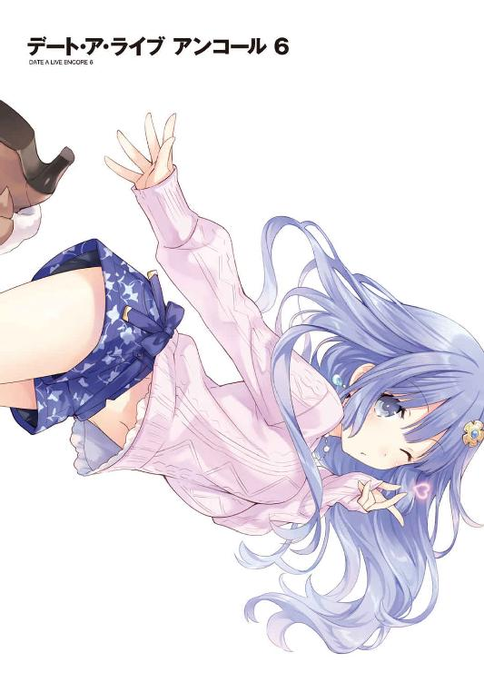
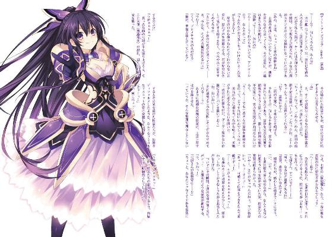
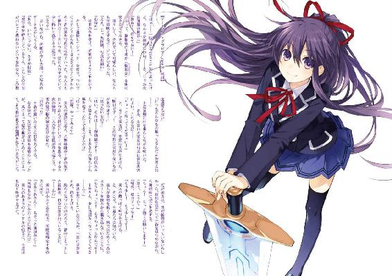
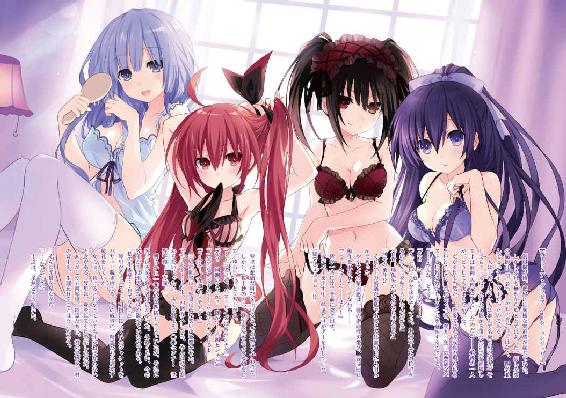
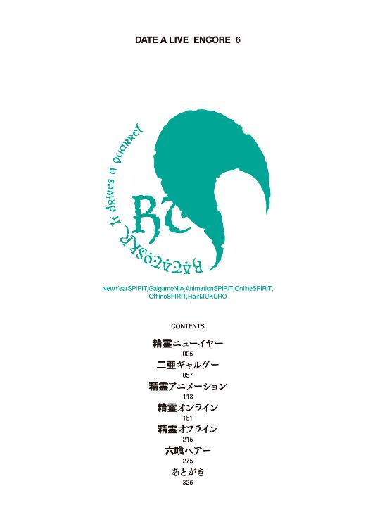
デート・ア・ライブ アンコール６
橘 公司

富士見ファンタジア文庫
本作品の全部または一部を無断で複製、転載、配信、送信したり、ホームページ上に転載したりすることを禁止します。また、本作品の内容を無断で改変、改ざん等を行うことも禁止します。
本作品購入時にご承諾いただいた規約により、有償・無償にかかわらず本作品を第三者に譲渡することはできません。
本作品を示すサムネイルなどのイメージ画像は、再ダウンロード時に予告なく変更される場合があります。
本作品の内容は、底本発行時の取材・執筆内容に基づきます。
本作品は縦書きでレイアウトされています。
また、ご覧になるリーディングシステムにより、表示の差が認められることがあります。
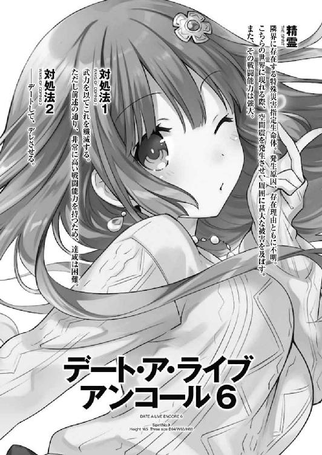
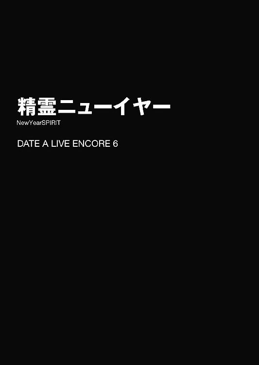
「よし、そろそろいいかな......」
士道はそう言うと、焼き網の上でぷっくりと膨れた餅を箸で摘まみ、一瞬湯に通してから、朱塗りの椀に盛りつけた。次いで、そこにかまぼこや鶏肉などの具を載せ、先ほど作っておいたすまし汁を注ぐ。
そしてその上に三つ葉を散らせば、士道特製お雑煮の完成である。士道は人数分の雑煮を作って椀に蓋をし、お盆の上に並べると、それを持ってリビングの方に歩いていった。
「ほら、できたぞ。テーブルの上片付いてるか？」
「おお！ 待っていたぞ！」
「こちらの準備は万端」
士道の言葉に応えるように、リビングにいた十香たちが弾んだ声を返してくる。
「────」
士道はその光景を見て、一瞬足を止めた。
五河家のリビングには今、〈ラタトスク〉で保護した精霊たちが勢揃いしていた。十香に四糸乃、琴里に折紙、八舞姉妹に美九に七罪。そして──つい数日前に霊力を封印したばかりの二亜。実に総勢九名もの少女たちが、わいわいと楽しげに会話を交わしていたのである。
だが、士道が目を奪われた理由はそれだけではなかった。
そこにいる精霊たちが、皆煌びやかな晴れ着に身を包んでいたのである。
花や鳥など、思い思いの華やかな柄があしらわれた振り袖に、帯。それを纏った美しい精霊たちが居並んでいるものだから、見慣れた五河家のリビングが一気に華やいで見えたのである。
とはいえ、精霊たちとて何の意味もなくそんな姿をしているわけではない。今は一月。ちょうど皆で、近所の神社に初詣に行ってきたところだったのだ。
もちろん今朝からその姿は目にしていたのではあるが......こうして改めて見てみると、何とはなしに、極楽浄土というのはこんなところなのではないかと思ってしまうのだった。
「うん？ どうした士道。影縫いの針にでも射すくめられたか」
「首肯。鳩が豆バズーカを食ったようです」
と、士道が呆けたような顔をしていると、橙色と黒の二色で染め分けられた着物を纏った耶俱矢と夕弦が、不思議そうに首を傾げてきた。
「あ、いや、なんでも......」
ハッとして思わず言葉を濁す。すると、百合模様のあしらわれた着物を着た美九が、半眼を作りながらニマニマと口元を緩めた。
「あらー？ もしかしてだーりん、私たちの晴れ着姿に見とれちゃったりしてましたー？」
「そ、そんなことは......」
ない、とは言えなかった。むぐうと黙り込み、お盆をテーブルの上に落ち着ける。
「きゃうん、だーりん可愛いですぅ！」
「......からかうなって。それよりほら」
言いながら士道がお椀と箸を配ると、皆がテーブルに着き、手を合わせた。
「いただきますだ！」
「おう、召し上がれ」
士道が言うと同時、皆がお椀の蓋を開けた。お椀の中から湯気がもわっと立ち上り、辺りに出汁の香りが漂う。
「いい匂い......です」
「そうね。ん、お餅も香ばしい」
「......美味っ、何これ。ちゃんと出汁取るとこんな味になるの？」
「んー、相変わらず少年たらお料理上手。うちのメシスタントに雇いたいわー」
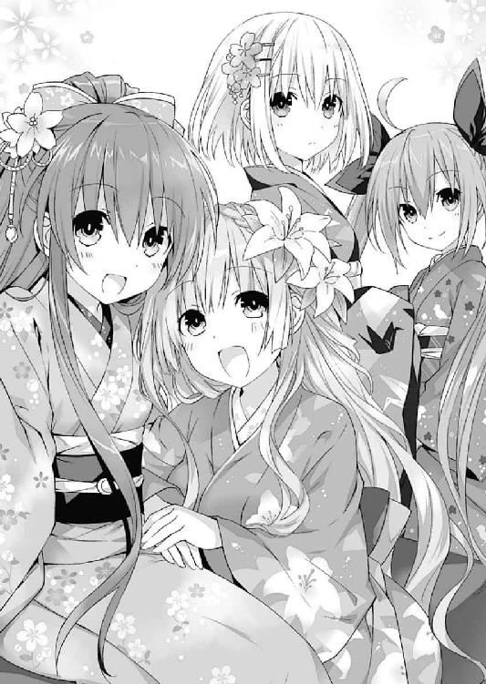
雑煮を口に運び、精霊たちが恍惚とした表情になる。
どうやらお気に召してもらえたらしい。士道は微笑を浮かべると、自分もまた椀を手に取り、すまし汁を一口啜った。鰹と昆布で取った出汁に、鶏肉の脂が溶け出して実に良い味になっている。我ながらなかなかの出来であった。
「んぐんぐ......うむ、美味い！」
「十香、美味しいのはわかったけど、もうちょっとゆっくり食べなさい。喉に詰まらせるわよ？」
「んむ！ もぐもぐ......んぐッ!?」
と、不意に十香が目を見開き、ドンドンと胸元を叩き始める。どうやら、餅を詰まらせてしまったらしい。
「ああもう！ 言わんこっちゃない！」
「た、大変......です！」
「えっと、こーいう場合ってどうすればいいんだっけ!?」
「......掃除機とかで吸い出すってのは聞いたことあるけど......」
「掃除機!? 士道、掃除機どこだっけ!?」
「い、今取ってくる......！」
「いーえっ！ そんな時間はありませんー！ ここは私が直接吸い出してあげますぅぅぅぅ！」
皆が慌ただしく叫んでいると、美九がバッと立ち上がり、十香の肩を摑んで「んー！」と唇を突き出した。
すると十香がバランスを崩し、そのまま後方に倒れ込んでしまう。
その際喉につかえていた餅が取れたのだろう。十香はごくんと喉を鳴らしたのち、はあはあと荒い息を吐いた。
「大丈夫か、十香！」
「う、うむ......なんとかな。助かったぞ、美九」
「あーん！ それはよかったですけどぉー！」
美九が何やら悔しそうに身を捩る。
しかし美九はその後何かを思いついたようにポンと手を打つと、自分の席に戻り、お椀に残っていた餅を一気にかき込んだ。そしてわざとらしく目を白黒させたかと思うと、苦しげに胸元を押さえて、お餅が詰まったアピールを始めた。
「んー！ んー！」
「な......美九！ 大変だシドー、今度は美九が！」
十香が慌てたように立ち上がる。が、他の精霊たちは至極冷静に視線を交わすと、こくりとうなずき合った。
「耶俱矢、夕弦。ちょっと美九の手押さえてて」
「よかろう」
「了承。お任せを」
「んぐっ!?」
「七罪、掃除機」
「わかった」
「ほーら美九、お口あーんしましょ」
「んーっ!? んんんんんん────ッ!!」
琴里が、七罪から受け取った掃除機のスイッチを入れ、ブォォォォォォ、という音を鳴らしながら美九ににじり寄ると、美九はブンブンと首を横に振った。
「違いますー！ そうじゃなくってぇぇぇ！」
「あら、餅は取れたみたいね、何よりよ」
「は......っ！」
琴里が言うと、美九は「しまった！」というような顔をした。琴里がやれやれと肩をすくめる。
「まったく......さすがにわざとらしすぎるわよ」
「むむむぅ......十香さん、今度二人っきりでお雑煮食べる会をしましょう」
「む？ 二人だけでか？」
「あー絶対行っちゃ駄目よ十香。美九に誘われたらとりあえず私に一声かけてね」
「うむ、わかったぞ」
「あぁん！ いけずぅ！」
美九が肩を抱いて身をくねらせる。士道はあははと苦笑した。
「まったく......賑やかなのはいいけど雑煮が冷めちまうぞ」
士道が言うと、皆テーブルに戻り、雑煮を綺麗に平らげた。ちなみに七罪は少し三つ葉が苦手だったらしいが、四糸乃に「がんばりましょう......！」と言われ、意を決した様子で飲み込んでいた。
「よし......っと」
空になったお椀と箸を集め、流し台に持っていく。すると後方で、赤い着物を着た琴里がんん......と伸びをした。
「さてと......そろそろ着替えてこようかしら」
「ええー、もう着替えちゃうんですかー？ せっかく可愛い晴れ着を着たのに、もうちょっと何かしましょうよー」
琴里の言葉に、美九が不満そうに声を上げる。琴里はふうと息を吐きながら腕組みした。
「それは構わないけど、一体何するのよ。もう初詣も行ったし、お雑煮も食べたじゃない」
「それはー......」
と、美九が答えに窮していると、それを聞いていた二亜が、ピンと指を立てた。......ちなみに二亜だけは皆と異なり晴れ着は着ておらず、地味な色合いのニットにデニムのパンツという格好だった。とはいえ、最初初詣に誘ったときはジャージにどてらという格好で行こうとしたものだから、これでも多少はマシになっていたのだが。
「んじゃあ、せっかくだから、お正月特有の遊びをしてみるってのはどうよ」
「お正月の遊び......ですか？」
『どんなのがあるのー？』
若草色の着物を着た四糸乃と、四糸乃と揃いの着物を着た『よしのん』が首を傾げる。
するとそれに応えるように、美九がパンと手を打った。
「ああっ！ それはいいですねぇ！ 凧揚げ羽根突き独楽回し！ 着物の裾からちらりと覗く白い肌！ そして最後は福笑い！ ちょっと狙いが逸れて皆さんの方に手が向いちゃうかもしれませんけど、目隠ししてますからね！ 仕方ないですね！」
美九が興奮した様子で鼻息を荒くすると、他の精霊たちが頰に汗を垂らした。
「......よし、他の遊びにしましょ」
「同意。それがいいと思います」
「ええっ!? なんでですかぁ!?」
美九がショックを受けたように叫ぶ。琴里がやれやれと吐息した。
「他に正月っぽい遊びっていうと......カルタ取りとか？」
それに補足するように、折紙がこくりとうなずく。
「お手玉やけん玉なども、正月の遊びに数えることができる」
「なるほどね。じゃあその辺から......」
と、琴里が決を採ろうとすると、二亜が「ちっちっち」と指を揺らした。
「ひとつお忘れじゃあないかねぇ、妹ちゃん。これだけの人数が一緒に遊べるものとなったら、これがベストだと思うんだけどなあ」
「え？」
琴里が首を傾げると、二亜が自信ありげに続けた。
「すごろくだよ、すごろく」
「ああ......なるほど」
士道はあごに手を当て、うなずいた。確かにそれならば、皆一緒に遊ぶことができるだろう。それに、カルタと異なり、身体能力で明確な差が付きすぎないのもいい。
「すごろく......？」
黒地にキラキラした花の意匠が施された着物に身を包んだ十香が、不思議そうな顔をする。士道は「ああ」とうなずくとそちらに目をやった。
「簡単に言うと、サイコロを振って、出た目の数だけ自分のコマを進めるゲームだよ。最初にゴールした人が勝ちなんだけど、『一回休み』や『三マス進む』みたいな特殊なマスもあるから、単純に出目だけでは決まらないんだ」
「ほう！ それは面白そうだな！」
「やってみたい......です！」
十香や四糸乃たちが、興味深げに目をキラキラと輝かせてくる。士道は了解を示すように首肯した。
「ん、じゃあすごろくにするか」
「おお！」
「......あ、でも家にすごろくなんてあったかな？ 人数も人数だし、新しくちょっと大きめのを買ってきても......」
「んっんっんっ」
と、士道が思案を巡らせていると、二亜が何やら意味深な含み笑いを漏らしてきた。
「な、なんだよ」
「まさか二亜ちゃんがそれを考えてないと思った？」
そう言うと、二亜は鞄から小さな白いカードのようなものを何枚も取り出し、テーブルの上に置いた。
「これは......？」
士道は首を傾げながらそれを一枚手に取った。表にも裏にも何も書かれていない、無地の紙である。
「ん、名刺の印刷とかに使う紙。これにこうして......」
二亜はペンを取り出すと、その紙に『一回休み』『二マス進む』『ふりだしに戻る』『その場で腕立て伏せ一〇回』などの言葉を書いて、それを裏向きに並べてみせた。
「こうすれば、お手軽オリジナルすごろくのできあがりってわけよ。あとは普通のすごろくと同じようにコマを進めていって、止まったマスのカードを裏返し、そこに書かれてる指示に従うってわけ。止まるまで何が書かれてるかわからないスリリングさも魅力ってね」
「へえ、なるほど。上手いこと考えたもんだな。確かにこれならマスの数も自由にできるし、いろいろ応用も利きそうだ」
「うむ！ 面白そうだな！ やってみよう！」
「かか！ 盤上の遊戯で我に挑むか。よかろう、全ての娯楽を統べた八舞がその傲慢を打ち砕いてくれる！」
精霊たちも二亜の手元を覗き込みながら、興味深そうに言ってくる。士道はこくりとうなずいた。
「よし、じゃあやってみるか」
『おー！』
士道の声に応ずるように、晴れ着姿の面々が手を上げる。
だが──このとき、士道は気づいていなかった。
その中に数名、目をギラリと輝かせた獣が紛れていたことに。
◇
それからおよそ二〇分後。
「......っと、こんなところかな？」
一〇枚のカードに文字を書き込み、士道はペンにキャップを被せた。
「私もできた」
「こちらもＯＫですー」
どうやら精霊たちもカードを作り終えたようである。ペンをテーブルに置き、カードを纏めはじめる。
「シドーはどんなカードを作ったのだ？」
「俺？ んー、普通にすごろくにありそうなものを書いたけど......」
問うてきた十香に、士道は自分の手元を見ながら答えた。
「あ......でも一枚、ちょっと面白いものを作ったぞ。普通のすごろくではできない、このゲームならではのカードだな」
「ほう！ それは楽しみだな！」
十香が目を輝かせながら言ってくる。士道は微笑みながらうなずくと、皆が文字を書き込んだカードを集め、入念にシャッフルした。
「じゃあこれで......」
言いながら、道を作るようにカードを並べていく。一人一〇枚程度とはいえ、全員の数を合わせれば一〇〇マスになる。蛇のようにうねった道が、テーブルいっぱいに広がった。
そしてその両端に、『スタート』『ゴール』と書かれたカードを置く。
「よし、完成だ。じゃあみんな、スタートにコマを置いてくれ」
「うむ！」
「あいよっと」
スタートの上に、余ったカードを切って作ったコマが配置される。紙の表面には、二亜の手によって皆のイラストが描かれており、急拵えにしてはなかなか可愛らしく仕上がっていた。ちなみにサイコロも、先ほど士道が紙を切り貼りして作ったものである。
手作り感満載であるが、自分たちで一から作ったゲームで遊ぶというのもなかなか新鮮な体験であった。
「さて、じゃあじゃんけんでサイコロを振る順番を決めようか。勝った人から......」
「あ、ちょっと待った少年。まだ一つ、決めてないことがあった」
「ん？」
士道がじゃんけんを促すように手を掲げると、そこで二亜がそんなことを言ってきた。
「決めてないこと？」
「そうそ。一位の景品だよ。それがないと盛り上がんないじゃん。せっかくだし、これも各自、自分が提供できるものをカードに書いて、ゴールに伏せておくってのはどう？ で、一位になった人が、その景品を全てゲットできるの。ま、そんな大げさなものじゃなくてさ、お菓子とか小物とか肩たたき券とか」
「ふうん......なるほど。それも面白そうだな」
士道が言うと、精霊たちも同意を示すようにうなずいた。
そして先ほどと同じように、皆でカードに景品を書き入れて、ゴールに重ねておく。ちなみに士道の景品は、『夕飯のメニューを提案できる権利』にしておいた。
「さ、じゃあ今度こそスタートだな。それ、じゃーんけーん」
『ぽん！』
かけ声とともに、皆が一斉に手を前に出す。皆がパーの中、一人だけチョキを出した者がいた。──耶俱矢だ。
「かかか！ 我の勝ちだな！ やはり真の強者というものは、望むと望まざるとに拘わらず常に勝利を手にしてしまうのだ！」
機嫌良さそうに耶俱矢が言って、サイコロを手に取る。そして、やたら格好いいポーズを取りながらそれをテーブルに放った。
「とうっ！ 絶技・死賽穿牙弾！」
コロコロコロ......とサイコロが転がり、一の目を出す。
「な......っ！」
「一......ですね」
「嘲笑。さすが強者の出目は違います」
夕弦が口元に手を当ててクスクスと笑う。耶俱矢は「ふ、ふん！」と息を吐いてコマを動かした。
「わ、わかっておらぬようだな。この勝負、重要なのは出目ではなく、カードの裏に書かれた文言のはず！ そう、我が運命力は、ここに置かれた最強カードを引き当てたのだ！」
高らかに言って、耶俱矢が一マス目のカードをひっくり返す。
そこには可愛らしい文字で、『一回休み』と書かれていた。
「なんでぇぇっ!?」
「抱腹。くすっ、くすくすくすくす」
耶俱矢が涙目で叫びを上げ、夕弦が可笑しくてたまらないといった調子で腹を抱える。すると四糸乃が、申し訳なさそうに声を上げた。
「す、すみません......多分、私の書いたマスです......」
「謝ることないわよ四糸乃。こういうゲームなんだから。むしろグッジョブ」
『あははー、琴里ちゃんわかってるぅ』
『よしのん』が笑うように頭を揺らす。琴里は小さく微笑んでから、サイコロを手に取った。
「さて......じゃあ次は私か。えいっと」
言って、サイコロを転がす。出た目は五だった。
「ん、いい目ね。さて、カードの裏側は......っと」
琴里がカードを裏返す。するとそこには、『お雑煮を一杯食べる』との指示が書いてあった。
「おお！ 当たりだぞ琴里！」
十香がパンと手を打ち鳴らしながら声を上げる。どうやら十香が書いたマスだったらしい。
しかし琴里はカードを見ながら、むむうと難しげな顔をした。
「う......二杯目か。ただでさえお正月は食べ過ぎちゃうのに。これは夕飯少なめにしないと......」
言ってお腹の辺りをさすりながら、キッチンに行ってお雑煮の残りを椀によそい、平らげる。さすがにお腹がいっぱいになったのか、少し帯が苦しそうだった。
「さ、次は......夕弦？」
「首肯。はい」
夕弦がこくりとうなずき、サイコロを振る。
そして──それからしばらくの間、士道たちは順にサイコロを振り、カードの裏に書かれた指示をこなしながら道を進んでいった。
折紙が振り袖のまま軽々と腕立て伏せをこなし、十香が耶俱矢の書いた難解な文章に首を捻り、二亜が渾身のものまね『士道にツンデレる琴里』を披露して琴里に脇腹をつつかれ......といった具合に、皆で楽しくわいわいとゲームは進んでいった。
だが──その二周目。
それまでの和気藹々とした空気を一変させる出来事が、起こった。
「......えっと、次は私か」
そう言って七罪がサイコロを振り、出た目の数だけコマを進めてカードを裏返す。
「......はッ!?」
そしてそこに書かれている文字を見て、七罪が息を詰まらせた。皆が不思議そうな顔をして、七罪の手元を覗き込む。
「どうしたのよ、七罪。何が書いてあったの？」
「ええと......なになに？ 『このマスに止まった人は、美九のほっぺにチュウをする☆』......って、なんだこりゃ!?」
士道が叫びを上げると、皆の視線が美九に注がれた。
「やぁん、そんなマスがあったんですかぁ。ちょっと照れちゃいますけど、仕方ありませんねー」
そう言って、美九が身体をくねらせる。そのあまりに白々しい様に、皆が疑わしげな表情を作った。
「......ていうか美九、これ書いたのおまえだろ」
「そんなまさかぁ！ でも仮にそうだとしても、ルール上問題はないですよねー？」
「うぐ......」
美九の言葉に、士道は口ごもった。確かに、そういった規定は設けられていない。そもそも、これはすごろくではあるものの、二亜が考案したゲームなのだ。
「なあ二亜、こういうのは......」
士道は縋るように二亜に視線をやり──言葉を止めた。
理由は単純。二亜が、『こういうのを待ってたんだよ、こういうのを』というような、邪悪な笑みを浮かべていたからだ。
「えっへっへ......なぁにぃ、少年。あたしがルール説明したとき、少年は了承したよね？ あたしとしてはなーんも問題ないと思うけどぉ？」
「確かに、ルール上何も問題は見られない。私も二亜を支持する」
二亜に賛同するように、なぜかやたらと力強く折紙がうなずく。
「な......」
そこで、ようやく士道は自分の油断に気づいた。今まで士道たちが止まってきたマスは全て、士道や十香、四糸乃たちが書いたものであったのだ。その内容は、『一回休み』のようなオーソドックスなものや、簡単なペナルティが主だった。物議を醸したのはせいぜい、夕弦の書いた耶俱矢いじりくらいのものである。
そう......士道は二ターン目まで、このゲームの本当の恐ろしさに気づいていなかったのだ。美九、二亜、そして折紙。彼女らの書いたカードが実に三〇枚、地雷のように盤の中に仕込まれていたのである。
「さぁっ、七罪さん！ 張り切ってどうぞ！ でないといつまで経ってもゲームが進みませんよー？」
「う......」
美九ににじり寄られ、七罪は頰に汗を垂らした。
だが、皆に迷惑はかけられないと思ったのか、しばしの逡巡ののち、うぐぐと渋面を作る。
「......目、閉じてなさいよ」
「はーい！」
美九が嬉しそうな声をあげ、頰を七罪の方に突き出しながら目を閉じる。七罪は意を決したように拳を握ると、頰を染めながら美九の頰にちゅっと口づけた。
「......こ、これでいいんでしょ」
「きゃーん！ 新年早々大吉ですぅぅぅっ！」
甲高い嬌声を上げ、美九が身をくねらせる。七罪はその様子を半眼で見たのち、着物の袖でごしごしと口元を拭っていた。
それを見て、二亜がパチパチと手を叩く。
「いやー、いいもの見させてもらったわ。恥じらう少女のキッス。あ、写真撮っとけばよかった」
「......や、やめてよね」
七罪が心底嫌そうな顔をする。二亜はあははと手をヒラヒラ振った。
「うんで、お次は誰だっけ？」
「あ、あの......私、です」
二亜の声に、四糸乃がおずおずと手を上げる。どうやら四糸乃も士道と同様、このゲームの危険性に気づいたらしい。顔に緊張感を滲ませながら、サイコロを振る。
「三......です」
『カードの裏は......っと』
「......！」
『よしのん』が裏返したカードを見て、四糸乃が頰をかぁっと赤くした。
「な、何よ、今度は何が書かれてたの？」
琴里が尋ねると、四糸乃が躊躇いがちにカードを示してきた。
そこには、『このマスに止まった人は、男の人に帯を引っ張られてくるくる回りながら「あーれー！」と言うこと』という、なんとも限定的な指示がしたためられていた。ついでに着物姿の女の子が、ちょんまげ頭の殿様に帯を引っ張られているイラストが描かれている。
「んな......っ!?」
「あ、そのカードあたしあたし」
士道が言葉に詰まっていると、二亜があっけらかんとした様子で声を上げた。
「いやー、せっかくだから着物を活かしたものも入れておこうと思って。実は生『あーれー』って見たことなかったんだよねえ。いやー、少年が引かなくてよかったよかった。......いや、待てよ。少年のベルトを引っ張ってくるくるさせるっていうのも......」
「......！ その話、詳しく聞かせて欲しい」
二亜の呟きに折紙が食いつく。士道は大きくため息を吐くと、二人をぐいと引き離した。
「聞かんでいい。......ていうか、この指示の中の『男の人』って......この場に俺しかいないじゃないか！」
「あ、わかっちゃった？ 二亜ちゃんからの小粋なプレゼントよーう。んちゅっ」
二亜が芝居がかった調子で言って、投げキッスをしてくる。士道は半眼を作りながらその投げキッスを手で受け止め、投げ返すジェスチャーをした。
二亜がそれを胸に受け、「うぐっ！」と身体を折る。......相変わらずノリのいい精霊である。
「......とにかく、四糸乃。無理することないからな？」
士道はため息交じりに言いながら、四糸乃の肩に手を置いた。しかし四糸乃は唇をきゅっと嚙むと、ふるふると首を横に振った。
「いえ......がんばります。七罪さんも、がんばりました......！」
「よ、四糸乃......？」
「お願いします、士道さん......」
四糸乃に見つめられ、士道は答えに窮してしまった。
だが、四糸乃にそこまで言われてしまっては無下にすることもできない。士道は意を決すると、四糸乃の目をジッと見つめた。
「......いいんだな？」
「は、はい」
四糸乃がこくりとうなずく。それに合わせて士道がちらと琴里の方を見ると、琴里は「仕方ない」というように肩をすくめた。
四糸乃を開けたスペースに連れて行き、綺麗に巻かれた帯に手をかける。
「い、いくぞ、四糸乃」
「はい......！」
士道はぐっと手に力を入れると、四糸乃の帯を解き、そのままそれをシュルシュルと引っ張っていった。まるで独楽のように、四糸乃の小さな身体がくるくると回転する。
「あ、あーれぇー......」
その場でくるくると回りながら、どこか恥ずかしそうに四糸乃が声を上げる。どうやら、律儀にカードに書かれていたことを守っているらしい。士道の背後から精霊たちの「おお......っ!?」という声が聞こえてきた。
ほどなくして、四糸乃の身体に巻かれていた帯が全てなくなる。四糸乃は目を回してしまったのか、フラフラと千鳥足になったのち、近くのソファにダイブした。
「四糸乃!? 大丈夫か!?」
「だ、大丈夫......です......」
「いやどう見てもフラフラで......」
士道は力なく言ってくる四糸乃を抱き起こそうとし──そこで身体の動きを止めた。
理由は単純。帯を失ってしまった着物がはだけ、中に着ていた襦袢の裾から、白い肌がちらりと覗いていたのである。背後から美九の「きゃー！」という声が聞こえてくる。......ちなみに回転している際に解けてしまったのか、『よしのん』の着ていた着物の帯も外れてしまっていた。
「お、おお......」
「はい、士道はこっち」
と、士道が顔を赤くして硬直していると、その背後から琴里が進み出、四糸乃を抱き起こす。そして、乱れていた着物を簡単に直し、彼女をもといた席へと誘導していった。......士道の妹様は、こういったとき頼りになるのである。
テーブルでは既に、次のプレイヤーである十香がサイコロを握っていた。士道も琴里のあとを追って、テーブルに着き直す。
「むう、七罪も四糸乃も凄いな。私も負けんぞ。とうっ！」
十香の気合いとともにサイコロが転がり、六の目が出る。
「おお！ たくさん進んだぞ！ ふむ、カードの指示は......」
十香がカードを裏返し、その文面に視線を落としてから、首を捻る。
「むう、これは一体どういうことだ？」
「？ なんて書いてあったのよ」
琴里が十香の手元を覗き込む。そして──
「......んなッ!?」
顔をボンッ！ と赤くして、息を詰まらせた。
「む、どうしたのだ琴里。これはどういう意味なのだ？」
「い、いや、それはね十香......」
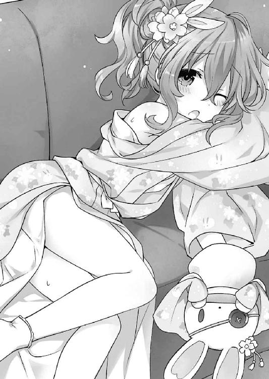
「シドーの服を脱がすというところまではわかるのだが、そのあとの──」
「わーッ！ きゃーッ！」
琴里が甲高い叫びを上げ、十香の口を塞ぐ。十香は驚いたように目を白黒させた。
さすがにそのリアクションから、カードの中身が気になったのだろう。精霊たちがカードを覗き込む。
「な......っ!?」
「......はぁ!?」
「あらー！」
すると、一部を除いて皆、琴里と似たような表情になった。
「な、何だよ、一体何が書いてあったんだよ。俺を脱がすって......」
「士道は見ちゃ駄目！」
士道が皆と同じようにカードを覗こうとすると、琴里が大声でそう言ってカードを裏返しのままテーブルに叩き付けた。
「だ、誰よ一体、こんなの書いたのは！」
「......ちっ」
と、そこで折紙が、どこか悔しげに舌打ちをする。
「やっぱりあんたかぁぁぁぁぁッ！」
「別に誰かを陥れようとしたわけではない。自分でそのマスに止まるつもりだった」
「余計悪いわッ！ とにかく十香！ これはしなくていいから！」
「む......？ しかし、七罪と四糸乃はがんばったのに、私は......」
十香が眉を八の字にしながら言う。すると未だ顔を赤くしたままの七罪と四糸乃が、ブンブンと首を横に振った。
「......いや......さすがにちょっとレベルが違うっていうか」
「し、仕方ないと思います......」
「む、むぅ？」
十香は不思議そうな顔をしていたが、二人がそう言うのならば仕方ない、といった様子で引き下がった。......本当に、何が書いてあったのだろうか。
が、さすがにそれでは終わらなかった。折紙がキラリと目を光らせる。
「カードの指示に従わないのはルール違反のはず」
「あ、あなたねぇ......」
「とはいえ、実行不可能ならば仕方ない。振ったサイコロ分スタートの方向に戻るという条件でどう？」
「......く、仕方ないわね。十香、それでいい？」
「むう......」
十香が渋々といった様子で、コマを後方に戻す。これで、トップだった十香が四位まで転落してしまった。
これで十香のターンは終了。次のプレイヤーは──士道である。
しかし、素直にゲームを進めてよいものだろうか。士道はサイコロを握りながら、琴里に小声で話しかけた。
「お、おい琴里」
「ん、何よ士道」
「いや、何よじゃなくて。いいのかよ、このまま続けちまって。まだあいつらの書いたカードは二〇枚以上残ってるんだぞ......？」
「仕方ないじゃない。......今ここでゲームを放棄したら、それこそ彼女たちの思うつぼよ」
「思うつぼ......って、まさか」
士道はハッと肩を揺らし、ゴールのマスに視線をやった。──皆の『景品』カードが重ねられた、すごろくの終着点を。
その視線で士道の思案を察したのだろう、琴里がうなずいてくる。
「ええ......恐らく、彼女たちの真の狙いはランダムに配置されたマスではなく、ゴールの『景品』よ。カードの指示が履行できなかった際のペナルティが、ゴールから遠ざかるっていうところから考えても、恐らく間違いないわ。最初にゴールした人は全員の『景品』を得ることができる......そう、自分の書いたものでさえも」
「な......」
士道は戦慄に声を震わせた。するとそれを察したかのように、折紙、美九、二亜の目がキラリと輝いた（気がした）。
「く──降りるわけにはいかないってことか。でもこのままじゃ......」
士道がサイコロを握りしめながら険しい表情を浮かべていると、琴里が小さく首肯してきた。
「安心して......とまでは言えないけど、一応、こんなこともあろうかと対策は立てておいたわ」
「対策......？」
「ええ。とりあえず今は、ゲームを進めましょう」
「わ、わかった」
士道はそう言うと、手にしたサイコロを放った。
出た目は──四。コマを四つ進め、そのカードを裏返す。
「え......？」
そしてそれを見て、士道は目を見開いた。
とはいえそれも当然だ。何しろそこには『このマスに止まった人は、今後一度だけ、カードの指示を無視することができる（この権利は他プレイヤーに譲渡してもよい）』と書いてあったのである。
「......！ 琴里、まさかこれは！」
「タイミング良く引き当てたわね。そう──それが私の保険よ」
琴里は不敵に微笑むと、折紙たちの方に視線を向けた。
「確かに三〇枚もの地雷を一つも踏まずにゴールまで辿り着くのは難しい。でも、こういう無効化カードがあるとしたら、どうかしら？」
「おお」
「すごいぞ琴里！」
「............」
琴里の言葉に、折紙の眉が微かに揺れた。
しかしそれ以上の反応は示さず、折紙がサイコロを手に取る。──士道の次は、折紙の手番だったのである。
「──二」
サイコロの目に従い、折紙がコマを二マス進める。そしてカードに書かれた内容を確認すると──ふっと小さく息を吐き、目を伏せながら、それを皆の方に向けてきた。
『な......!?』
皆の声が綺麗に被る。だがそれも無理からぬことであった。そこに書かれていたのは、『場の誰かがカードの指示を無効化する権利を持っていた場合、それを無効化する』という文言だったのである。
印字のように綺麗な文字。間違いない、折紙のカードだ。
「私も念のため、こういうものを仕込ませてもらった」
「ぐっ......ぬぬぬ！」
折紙の言葉に、琴里が悔しげに奥歯を嚙みしめる。
「いや、すごろくっていうか......なんかもうトレーディングカードゲームみたいになってないか......？」
そんな攻防を見ながら、士道は頰に汗を垂らした。
──それから数十分後。
五河家のリビングには、緊張が満ち満ちていた。
士道たちはあれから順にサイコロを振り、カードに書かれた指示を履行し、あるいは仕方なくコマを戻しながら、ゲームを進めていった。
......ちなみに、琴里と折紙と耶俱矢は四糸乃と同様帯を解かれており、四糸乃は美九の膝の上に座らされていた。ついでに十香と夕弦は肩をはだけた花魁スタイルになっており、七罪に至っては頰やはだけた首元に幾つもキスマークをつけられて、ソファにぐったりと横になっていた。......なんというか、なかなか壮絶な光景である。
加えて、皆の手元にはメモ用紙が置かれ、そこにそれぞれ、『三マス進むことができる』『誰かを一回休みにできる』『裏向きのカードを表にし、その指示に従う』などの文字が書かれていた。琴里や、それに近い考えをしていた七罪が仕込んだ権利カードである。一度そのマスに止まればいつでもその権利を行使することのできるカードなのだが、数が増えてくると覚えているのが大変であるため、こうしてメモに残しているのだった。
とはいえ、幸い、折紙、美九、二亜の三大警戒人物はサイコロの出目が悪く、時折後ろに戻される士道たちとさほど変わらぬ位置にいた。
だが──
「............」
ごくり、と唾液を吞み込む音が、静かな室内に響き渡る。
だがそれも当然であった。なんという不運であろうか、ゴール前の六マスが、全て美九、折紙、二亜のカードで埋められていたのである。
『美九に耳たぶをハフハフされる』
『今穿いている下着を士道と交換する。士道がここに止まった場合は折紙と交換する』
『一番位置が近い人と、どちらかが素っ裸になるまで野球拳』
『美九に全身をペロペロされる』
『士道と全裸二人羽織』
『二亜のヌードデッサン用モデルになる』
無論、最初は全てのカードが裏向きになっていた。皆が、前に進んでカードをオープンしては指示を実行できずに後ろに下がるのを繰り返した結果、ゴール前の六マスが全て明らかになっていたのである。
「これは......」
士道は掠れた声を発した。
ゴール前の六マス。そして無論のこと、サイコロの目は一から六。
つまり、最低でもどれか一つをクリアしない限り、ゴールへはたどり着けないということだった。
ゴールから六マス前──『美九に耳たぶをハフハフされる』などは比較的難易度が低そうだったが、先ほど、『美九にキスマークを付けられる』のカードを踏んでしまった七罪の惨状を見たあとでは、そう脳天気なことは言えなかった。
とはいえ、いつまでも進んでは戻ってを繰り返すわけにはいかない。士道はテーブルの上を見回した。
確かに折紙、美九、二亜は出目が悪く、まだ士道たちとほぼ変わらない位置にいる。
だが、このまま士道たちが立ち往生していては、すぐに追い抜かれてしまうだろう。
そして──恐らくあの三人は、この魔境に恐れることなく突貫していく。
そうなれば、最初にゴールして『景品』を手にするのは、彼女らのうち誰かになってしまうだろう。彼女らがカードに何と書いたかはわからなかったが、それだけは絶対に避けねばならなかった。
「わ、私の番か」
十香が緊張した面持ちでサイコロを手に取り放る。
出た目は六。十香がコマを進め、ゴールから二マス前の位置まで辿り着く。
すなわち──『士道と全裸二人羽織』。
「む。二人羽織......とは、前テレビでやっていたやつだな？ それをシドーと裸で......」
そこで、十香の顔がカアッと赤くなった。
「な、なななな......なんということを考えるのだ折紙......ッ」
「お、落ち着け十香！ やる必要ないから！ コマ戻していいから！」
士道が慌てて、今にも煙を吹き上げてしまいそうな十香を宥める。
だが、十香は顔を赤くしたままむむうとうなった。
「し、しかし、これをやらねば折紙たちがゴールしてしまうのだろう？」
「ぐ......ま、まあ、そりゃそうなんだが......」
「むう......」
十香はしばしの間腕組みしながらうなると、上目遣いになってちらと士道の方を見てきた。
「......シドーは、どうなのだ」
「へ？」
士道が目を丸くすると、十香は恥ずかしそうに続けてきた。
「だから......シドーは、どうなのだ。私と......その、二人羽織をするのは嫌ではないのか......？」
「え、や、俺は......」
予想外の言葉に、しどろもどろになってしまう。士道とて年頃の男子。嫌なわけがない。だが、だからといってこのカードを実行してしまってよいかどうかは別の話だった。皆の前であるし、第一、十香の意思を尊重せず、カードの指示だからという理由でそんなことをするわけには──
しかし十香が、意を決したようにきゅっと拳を握り、士道に詰め寄ってくる。
「し、シドーさえ嫌でないのなら、私は......」
「十香......」
幻想的な十香の双眸に見つめられ、しばし言葉を失ってしまう。
が、そんな雰囲気はすぐに打ち破られた。
「『十香......』じゃないでしょうがぁぁぁっ！」
耳をつんざく琴里の大声によって。
「何怪しい雰囲気作ってるのよ、駄目に決まってるでしょ！ 十香もほら、士道をその気にさせない！」
「む、むう......すまん。だが、このままでは折紙のターンになってしまうぞ」
言って、十香がちらとテーブルの上を見る。
今ゴールから最も近くにいるのは、十香を除けば七マス前にいる士道である。だが、そのすぐ後ろに、折紙のコマが控えていた。十香と士道が後ろに下がったなら、彼女が単独トップになってしまうことになるのである。
かといって、ゴール前六マスを突破できない以上、士道は次の手番で何の目を出そうと後ろに下がることしかできなかった。
「く......」
士道は渋面を作りながら盤面を見回した。このターンで手を打たねば、折紙を止めることはもう不可能である。
かといって、士道に手は残されていなかった。保有する権利カードもなく、士道のコマの前に並ぶゴール前六マスは全てオープンされてしまっている。一枚でもカードが裏向きのままであれば、まだ希望もあったのだが──
「ん......？」
と。士道は、とあることに気づいた。
テーブルの上に並べられたカードは、スタートとゴールを除いて一〇〇枚。そしてゲームが終盤に差し掛かるに従い、次々とカードが捲られ、約九割のカードが表を向いていた。
だが、士道がしたためていたとあるカードが一枚、まだ裏向きのまま盤のどこかに眠ったままだったのである。
「そうだ、あれなら......」
そのカードは、折紙たちのような対象を限定したペナルティや、琴里たちのような特殊な権利カードに比べれば、至極まっとうな指示を記したものだった。もちろん、こんな状況になるだなんてことを想定していたわけではない。単純に、ゲームを盛り上げるために作ったカードだ。
しかしそれは、この状況を打破しうる、唯一のカードでもあったのである。
とはいえ、士道の前にはもうオープンされたカードしか存在しない。カードの指示を拒否してコマを後ろに戻していけばいつかは引けるかもしれなかったが、そんなことをしていては、先に折紙たちにゴールされてしまうだろう。
「あ──」
そこで。
十香の手元を見た士道は、一つの可能性を見つけ出した。
十香は既にサイコロを振り終えてしまっている。しかし、これならば──
「むう......仕方ない。ではコマを戻し、ターンを......」
琴里に説得された十香が、悔しげな表情をしながらコマを動かし、ターンの終了を宣言しようとする。士道は慌てて声を上げた。
「待ってくれ、十香！」
「む？ どうしたのだシドー。やはり二人羽織をするか？」
「い、いや、そうじゃなくてだな......」
士道は頰を赤くしながらコホンと咳払いをすると、十香の手元──現在十香が保有する権利カードの一覧を指さした。
「ターンを終了する前に、してほしいことがあるんだ。頼む。そこに書いてある権利を、俺に譲渡してくれ」
「む......？」
十香は目を丸くすると、自分の手元にあるメモを覗き込んだ。そこには先ほど十香が獲得した、『裏向きのカードを表にし、その指示に従う』権利が記されている。筆跡からして、七罪の用意したものだろう。
普通、カードの内容はそこに止まった人しか行使することができないのだが、琴里のカードに倣い、このゲームにおいては権利の譲渡が可能となっていたのである。
「それは構わんが......一体どうするのだ、シドー。こんなものを使って、もし折紙たちのカードを引き当ててしまったら......」
「確かに、その可能性もある。でも......俺たちが勝つためには、この方法しかないんだ！」
「............」
士道が十香の目を見つめながら訴えかけると、十香はこくりとうなずいて、手元のメモを士道に手渡してきた。
「ならば、シドーを信じる。頼んだぞ、シドー」
「......ああ！」
士道は力強くうなずくと、十香からメモを受け取った。
そしてそれを掲げ、高らかに宣言する。
「俺のターン！ 俺は十香から譲渡された権利カードを行使する！ これによって、まだ表になっていないカードのうち一枚を指定し、表向きにする！」
「............」
士道の声に、折紙がぴくりと眉を揺らす。だが、士道が何を考えているかはまだ測りかねているようだった。
士道は細く息を吐くと、テーブルの上をジッと見つめた。
盤面に裏向きのまま残っているカードは八枚。そのどれかに、起死回生の一手が眠っている。
だがもちろん、それがどれかなどはわからない。士道はごくりと息を吞むと、狙いを付けた一枚に、そろそろと手を伸ばしていった。
が──
「シドー」
「......！」
そこで十香が、士道の手を止めるように手を重ねてくる。士道は思わず目を見開いた。
「え？」
「............」
十香は静かに首を横に振ると、士道の手を押し、隣にあったカードの上に置いた。
「十香──」
十香は士道の思惑など知らないはずである。が──なぜだろうか。士道には、十香が冗談や悪ふざけでこんなことをしたとは思えなかったのだ。
士道はその眼差しに応えるようにこくりとうなずくと、手に力を込めた。
「俺は──このカードをオープンする！」
そしてカードを表に向け、その内容を確認する。
そこには士道の筆跡で、『全てのカードを裏向きにし、シャッフルしてからもう一度配置する』と書かれていた。
「──よしッ！」
士道は思わずガッツポーズを取った。
そう。それこそが士道の切り札。ゴールに続く死のロードを再構築する、唯一の手段であった。
「──っ」
「えっ、そんなカードあったんですかー!?」
「はー......やるねぇ少年」
折紙たちが驚いたような反応を示す。士道はニッと笑うと、道を作っていた全てのカードを裏向きにして回収し、再び並べ直した。
「そして！ サイコロを振らせてもらう！ 出目は──五！」
士道はコマを五マス進めると、そこに新たに配置されたカードを捲った。
そして──その内容を確かめ、フッと息を漏らす。
「どうやら、勝利の女神ってのは本当にいるらしい」
「え......？」
「質問。どういうことですか」
精霊たちが、不思議そうな顔をしてくる。士道は不敵に微笑むと、そのカードをバン！ と提示した。
「『二マス進む』のカード！」
「えっ、ちょっと待ってください。今だーりんは五マス進んだわけですから......」
「ああ。──ゴールだ」
士道がコマを二マス進め、ゴールに辿り着く。
すると一拍遅れて、状況を理解した精霊たちが『おおおおっ！』と声を上げた。
「すごい......です、士道さん」
「うむ！ さすがだ！」
「ふん、まあ今日のところは花を持たせてやろうではないか」
「首肯。おめでとうございます」
「............（ぷるぷる）」
ちなみに、七罪はソファに横になりながら、力なく手を上げていた。
「でも、よくこの状況でキーになるカードを引き当てたわね」
琴里が感嘆するように息を漏らしながら腕組みし、言ってくる。
「ああ......十香が止めてくれなかったら、別のカードを引いてるところだった。──なあ十香。なんでさっき、俺の手を止めたんだ？」
「む？」
十香は目を丸くすると、「ああ」とうなずいてから続けた。
「シドーが何をしようとしているのかはわからなかったが......シドーが捲ろうとしていたカードから、微かに折紙の匂いがした気がしてな」
そして、こともなげにそんなことを言ってくる。今度は士道が目を丸くする番だった。
「は......はは。まあとにかく、十香のおかげだ。ありがとうな」
士道は十香の頭をぐりぐりと撫でてから、折紙たちの方に向き直った。
「──さて、というわけで俺が勝たせてもらった。ずるいだなんて言わせないぞ。カードの指示は絶対なんだろ？」
すると三人は、存外あっけらかんとした調子でこくりとうなずいた。
「異存ない。おめでとう、士道」
「うーん、ペロペロなしは残念ですけど、まあ仕方ないですねー」
「はっは、また面白い発想したねえ少年。主人公みたいじゃん」
「え？」
予想外の反応に、少々拍子抜けしてしまう。もちろん、ゲームのシステムを使っていろいろ仕掛けてきたのは彼女らなので、文句を言えはしないだろうとは思っていたのだが、こうも素直に認められるとは思っていなかったのだ。
とはいえ、ここでいらないことを言って意見を翻されても困ってしまう。きっと彼女らも、数では勝てないことを察し、潔く負けを認めてくれたのだろう。
士道は素直にその賞賛を受け取ると、「ありがとう」と返した。
「──そうだ、シドー。皆の景品というのは何だったのだ？」
と、士道が安堵の息を吐いていると、不意に十香がそんなことを言ってきた。
そういえば、折紙たちに景品を取らせないことばかりを考えていたが......こうしてゴールが認められた以上、士道は皆から景品がもらえるはずだったのだ。
「ん、そうだな。せっかくだし見てみるか」
「うむ！」
十香が弾んだ声を響かせてくる。士道はゴールに重ねられていた一〇枚のカードを手に取ると、順にその内容をチェックしていった。
「ええと......まず琴里が、チュッパチャプスの限定フレーバー、十香がきなこパン、耶俱矢がシルバーアクセサリーで、夕弦がお手製のブレスレット、四糸乃はお手伝い券で、七罪はよしのん用の帽子......って四糸乃が勝つの前提だなこれ」
あははと苦笑し、次のカードに目を通す。
「ええと、次は美九か......って、え？」
士道は一瞬目を点にした。
そこには『私と一緒にお風呂に入れる券。洗いっこしましょうね、だーりん』と書かれていたのである。
「な......」
混乱しながらも、次のカードを捲る。そこには二亜のイラストとともに『あたしの部屋の合い鍵』という文言が書かれていた。
だが、それで終わりではない。最後となる折紙のカード。そこには──『子作り券』という、ド直球にも程がある文字がしたためられていたのである。
そう。まるで──士道がこの景品を手に入れることがあらかじめわかっていたかのように。
「ど、どういうことだ......おまえら、自分が勝つためにやってたんじゃ......」
士道が声を震わせながら言うと、三人は顔を見合わせたのち、口を開いてきた。
「いえー、マスの指示で不安を煽っておけば、だーりんならどうにかしてゴールしてくれるんじゃないかと思いましてぇ」
「あー、わかるわかる。なんか主人公補正効きそうだったから」
「券を手に入れられてしまった以上仕方がない。私はそれに従うまで」
言って折紙が、着物をはだけたまま、すすす......と士道に身を寄せてくる。
「ひっ！ ちょ、ちょっと待て！ 券ってことは使うかどうかは俺の判断によるんじゃないのか!?」
「カードをよく見て。下の方に、自動発動型と書いてある」
「だからなんかカードゲームと勘違いしてないか!?」
「問題ない。さあ、士道」
「ひぃん！」
士道が情けない叫びを上げると、それまで呆然としていた精霊たちがハッと肩を揺らして止めに入った。
「ちょ、何してるのよ折紙！ 離れなさい！」
「そ、そうだぞ！ シドーが困っているではないか！」
「あぁん、それより私の景品も受け取ってくださいよぉー。何なら皆さん一緒でもいいんですけどー！」
「あー少年、うちの合い鍵キーケースにつけとくねー」
......などと、結局いつものごとく混戦が始まる。
今年も五河家は、賑やかになりそうだった。
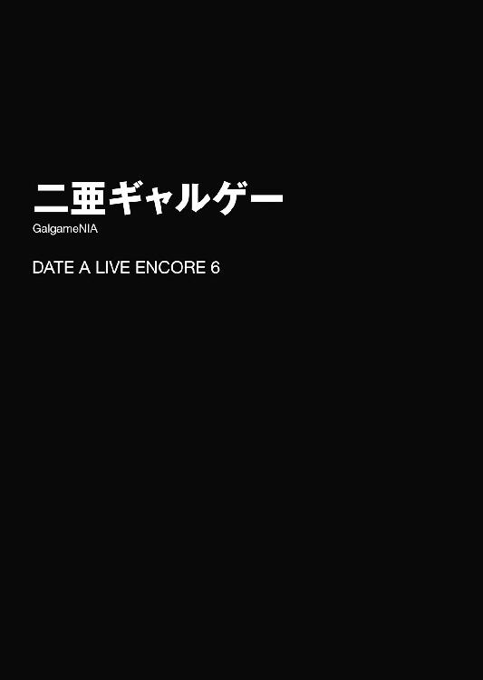
「あたし......実は今、気になってる人がいるんだよね......」
とある日。本条二亜が、突然そんなことを言い出した。
ショートカットの髪に赤縁の眼鏡が印象的な少女である。歳は士道より少し上といったところだろうか。ちゃんと朝昼晩の食事を摂っているのか心配になるような肉付きの身体に、ニットのハイネックとデニムのボトムスを身に着けていた。
と、そこまでは士道もよく知る二亜の特徴である。だが──その表情が、平時のそれとは微妙に異なっていた。
いつもはだらしなく緩んでいる頰には朱が差し、目は微かに潤んでいる。普段あまり女性的な部分を感じさせない二亜ではあるが、今ばかりは恋する乙女のような貌になっていたのである。
しかし。
「..................は？」
士道は、心の底から怪訝そうな顔をして、そう返した。
それからしばらくの間、部屋に沈黙が流れる。点けっぱなしにしてあったテレビから流れるニュースの音声がやけに大きく聞こえた。どうやら銀行のシステムの不具合によって現金が引き出せなくなっているらしい。気をつけねば。
......いや、別に二亜を馬鹿にしようとか、そういう気は一切ないのだ。二亜も年頃の女の子である。もし本当にそういった相手が出来たのならそれは素敵なことだと思うし、士道も応援したいと思う。
だが二亜に関しては、その言葉を額面通りに受け取っていいものかどうかわからな......いや、それでは少々オブラートに包みすぎかもしれない。額面通りに取っていいはずがなかったのである。
士道はすうっと深呼吸をすると、二亜の方に向き直り、穏やかな微笑みを浮かべながら答えた。
「で、どの漫画のキャラだ？」
「何その優しい目」
二亜がテーブルにバンと手を突きながら声を裏返らせる。
だが士道の反応も当然ではあった。何しろ二亜は筋金入りの漫画好きで、本人曰く『二次元にしか恋をしたことがない』という精霊なのである。そんな少女が突然頰を染めたりしても、それ以外の回答が思いつかなかった。
「え？ 違うのか？」
「違うっての。もー、少年たら乙女心がわかってないんだからー」
「............」
「えっ何その間。あたしに乙女心がないとでも？」
「いや、そうは言わないけど......」
士道はぽりぽりと頰をかくと、小さなため息とともに言葉を継いだ。
「......じゃあ、ちゃんと相手がいるんだな。なら──応援するよ」
「え、ホント？」
「ああ。そりゃあ、相手の人となりにもよるけど......二亜が人を好きになるのに俺が文句を言うのもおかしな話じゃないか」
士道が言うと、二亜は面白がるように「ふーん」と半眼を作った。
「嫉妬してくれないんだー」
「な、なんだよいきなり......」
二亜の言葉に、士道は思わず眉根を寄せた。
実のところ......少し、ドキッとしてしまったのである。
それはそうだ。士道は霊力を封印するためとはいえ、精霊たちとデートをし、キスを交わしているのだ。無論、そこにあるのは単純な恋愛感情のみではないのだろうけれど、士道は精霊たちを大切に思っているし、出来うる限りのことをしてあげたいと思っている。
そしてそれは──目の前にいる二亜も例外ではない。実際、二亜の気になる相手というのが漫画のキャラでないとわかったとき、複雑な気持ちが過ぎらなかったといえば噓になる。
だが、だからといって、士道には二亜の意思を縛り付けるような資格はない。その事実が、士道の心に途方もない居心地の悪さを作っていたのである。
士道が押し黙っていると、二亜がそんな士道の考えを察したように笑った。
「えっへっへ、まあ今日はその顔を見れただけでよしとしときましょ」
「ち、茶化すなよ」
士道ははあとため息を吐いてから、あとを続けた。
「......で、その相手がどうかしたのか？ わざわざ俺を呼んだってことは、何か相談事があるんだろう？」
そう。今士道がいるのは自宅ではなく、二亜の住むマンションの部屋であった。朝方急に電話がかかってきて「お願いがあるから今すぐうちに来て！」とここに呼び出されたのである。
「んー、実はさー、その人、容姿端麗の超優良物件なんだけど、一つだけ問題があってさー」
「問題？ 一体どんな」
士道が首を傾げながら尋ねると、二亜はあごに手を当てながら答えた。
「あたしを好きになってくんないのよ」
「......それ、片思いって言うんじゃないのか？」
「まあそうとも言うかも？」
二亜があははと笑いながら返してくる。士道は腕組みしてそれに返した。
「で......俺に何をしろって？」
「まあ早い話、あたしがその人を落とすのを手伝って欲しいわけよ。今まで何人もの精霊をデレさせてきた少年の手管でさ」
「......なんか人選を間違ってる気がしないでもないが......」
士道は頰に汗を垂らしながら苦笑した。そういう相談ならば、琴里や令音にした方が力になってくれそうな気がしたのである。
しかし二亜はブンブンと首を横に振ると、すっくと立ち上がって士道の手を取ってきた。
「んなことないって。じゃあ、とりあえずその人紹介するよ」
「え？ 今からか？」
「うん。善は急げっていうじゃん。それとも何か用事あった？」
「いや、そういうわけじゃないけど......その人はどこにいるんだ？」
「ん？ この部屋にいるけど」
「............」
二亜の言葉に、士道はしばし無言になった。
「ええと......一応確認するけど、監禁とか、してないよな？」
「へ？」
二亜は一瞬目を丸くすると、プイと顔を逸らした。
「シテナイヨ？」
「なんで片言!?」
「あっはっは、冗談冗談。そんな物騒なことするわけないじゃん。いくら好きでもフツーそんなことしないって。それとも何、そんな発想がぬるりと出てくるってことは、少年たら好きな女の子を閉じ込めたい願望とかあっちゃったりするワケ？」
「あ、あるわけないだろ。ただ......」
「ただ？」
「......いや、なんでも」
監禁された経験ならある、とは言いづらかった。適当に言葉を濁して誤魔化す。
「まあ、とにかくだ。その相手ってのを見せてもらおうじゃないか」
「うん、ちょっと待ってて」
二亜はそう言うと、机の上に置いてあったパソコンの電源を入れ、恋愛シミュレーションゲームのタイトルと思しき画面を表示させた。
「......って、ゲームじゃねえかッ！」
「んー、そだよ？ ほら、漫画のキャラじゃないっしょ？」
「二次元だろ、っていうニュアンスで言ったつもりだったんだけどな......」
士道は大きなため息を吐くと、手近な椅子に腰掛けた。
何だろうか、やれやれという気分と不思議な安堵感がない交ぜになり、力が抜けてしまったのである。
そんな士道の反応を見てか、二亜が面白がるようにニマニマと口元を動かしてきた。
「え？ 何？ もしかしてホッとしちゃった？ 二亜ちゃんが他の男に取られなくてよかった感じ？」
「ち、違ぇよ」
「え？ そうなの？」
「ああ。俺はちゃんとおまえのことを応援しようとして......」
「ほむ。なんだ、違うのか。......ええと、少年はＮＴＲ好き......っと」
「悪意のある曲解しないでくれるかな!? ていうか何メモってんだおい！」
士道が叫びを上げると、二亜はどこからか取り出したメモ帳をヒラヒラさせながら快活に笑ってみせた。
どうも二亜と話していると調子を狂わされる。士道は頭をがりがりとかいてから諦めたように息を吐いた。
「......で、このゲームのキャラが攻略できないって？」
「ん、そうなんだよねー。いや、あたしも結構この手のゲームはやってきたつもりなんだけど、これ難易度バカ高でさー。ぜんっぜんクリアできないんだよ」
「ふうん......」
士道はあごをさすりながら画面に目をやった。
見たところ、オーソドックスな恋愛シミュレーションといった様子である。これならば、実際の男性を攻略する手助けをしてくれと言われるよりは役に立てるかもしれなかった。自慢ではないが、士道は以前、〈ラタトスク〉謹製の訓練用恋愛シミュレーションゲーム『恋してマイ・リトル・シドー』を、選択肢選びに失敗したらペナルティを受けるという条件付きでフルコンプリートしたこともあるのである。
「それで、どのキャラが攻略できないんだ？」
「ああうん、この子。丸那ありすちゃんっていうんだけど」
二亜は士道の問いに答えるようにマウスを操作し、キャラクターのイラストを表示させた。その、可愛らしい顔をした女子高生を。
「......女!?」
「うん、そうだけど？......って、あ、もしかして男キャラじゃないとテンション上がらなかった？ ごめんごめん」
「いやそうじゃなくて」
「ええと......少年は男の子が好き......」
「だから不穏な情報をメモらないでくれるかな!?」
士道は二亜のメモ帳を引ったくるように手を伸ばした。が、すんでのところで避けられた。そのまま二亜が、ハイネックの首元を広げ、メモ帳を自分の服の中に放り込む。
「あっ、卑怯だぞ二亜！」
「うえっへっへ、取れるもんなら取ってみなさい。別にあたしは構わないよー？」
言って、二亜が腰をくねらせてみせる。士道は「ぐ......」と渋面を作った。
「あれ？ 取らないの？ んもー、少年たら相変わらずピュアっピュアなんだから」
「う、うるせ」
二亜がからかうように士道の鼻を指でつついてくる。士道は頰を赤くしながら視線を逸らした。
「ま、とにかく少年にはこの子を攻略するのを手伝って欲しいわけよ。アンダスタン？」
「......いろいろと不満はあるが理解はした。まあ、俺でよければ手伝うよ」
「マジで？ きゃー、少年愛してるぅ。気に入った。うちにきてあたしを抱いていいぞ」
「......あー、うん。はーい抱っこ」
士道が気のない返事をして赤ちゃんをあやすような仕草をすると、二亜が不満そうに唇を尖らせた。
「突っ込んでくれないとそれはそれで寂しいなあ」
「じゃあ反応しづらいことばっかり言うんじゃねぇよ」
「あ、ちなみに今の『突っ込んでくれないと』って、ダブルミーニングなんだけど気づいてくれた？ あのね、お笑い的な意味のツッコミと、少年のをあたしの」
「さあゲームを始めようか楽しみだなあ!!」
士道は二亜の言葉を遮るように叫びを上げた。なんだかそれ以上言わせてはいけない気がしたのである。
「なぁによー、なんだかんだ言ってやる気満々じゃない」
二亜はにへらと笑うと、士道の隣に腰掛け、再度マウスを手に取った。
そして画面を操作し、ゲームを開始する。
見たところ、別段変わったところは見受けられない。主人公は学生で、クラスメートや部活の先輩、バイト先の同僚などがヒロイン候補であるらしい。ゲームの序盤は特に選択肢もなく、主人公の境遇やヒロインたちとの関係性が紹介されていった。
「なんだ、普通じゃないか。どこが難しいんだ？」
士道がちらと二亜の方を見ながら言うと、二亜は急にしなを作るように肩をすぼめ、上目遣いになって士道を見つめてきた。
「実は難しいっていうのは口実で、少年を部屋に連れ込むのが目的だったのさ」
「よし、帰るか」
「あーちょ、冗談だってばー！」
椅子から立ちかけた士道の服の裾を、二亜が摘まんでくる。やはり冗談だったようだ。
「おまえ、あんまり冗談ばっかり言ってるといざってときに信じてもらえなくなるぞ？」
「あー、狼少年ってやつ？ でもよく言うよね、男の子は狼だから気をつけなさいって。っていうことは狼少年って男の子少年ってことだよね。男の子×少年ってことだよね」
「おい今なんで言い直した」
「まあまあ、とにかくもうちょっと先まで見てみてよ」
言って、二亜がクリックを再開する。士道は腑に落ちないものを感じながらも黙って画面に視線を注いだ。
すると、画面の中で主人公と、二亜お目当てのヒロイン・ありすが会話を始めた。どうやら少し気むずかしい子らしく、いちいち主人公の言動に嚙みついてくる印象だった。
「なるほど......確かにこりゃ実際にいたら難儀しそうだ。......でも、これはゲームキャラだろ？ 要は、クリアするためのルートが用意されてるわけだ。どんなに性格がキツそうに見えたって......」
「ちょっと待って。そろそろ選択肢だよ」
士道の言葉を遮るように二亜が言って、マウスをクリックする。
通常、こういった形式の恋愛シミュレーションゲームは、ポイントポイントに選択肢が設けられており、プレイヤーがそれを選択することによって主人公の行動を決定するのである。そしてその選んだ選択肢によってキャラクターからの好感度が上下したり、ルートが分岐したりするのである。
それゆえ、アクションゲームやパズルゲームとは異なり、特別な技能がなくとも何回かやっていれば正しいルートにたどり着けるようになっているのだ。
だから正直なところ、士道には、このゲームが難しいという二亜の言葉がよくわからなかったのである。
「......お？」
と。ほどなくして、二亜の宣言通り、選択肢が表示された。
──画面を埋め尽くすほどの、膨大な量の選択肢が。
「多ッ!?」
士道は思わず大声を上げた。
それはそうだ。通常、こういったゲームの選択肢は三つ程度が一般的である。だが、これはその比ではない。少なく見積もっても一〇〇近くはあるだろう。
「いや......」
士道は視線を険しくした。よく見ると、いつの間にか画面の右側にシークバーが表示されている。二亜が画面をスクロールさせると、さらに凄まじい量の文章が画面外に用意されていることがわかった。
「お、おいおい......なんだよこれ。この中から主人公の行動を選べっていうのか？」
「そうなんだよねぇ。しかも、このあとも連続して選択肢が出てきて、その組み合わせによってルートが細かく分岐するんだ。しかも、恋シミュのくせに自由にセーブができないときてる。ちなみにあたし、ありすちゃんだけでもう八〇種類くらいバッドエンド見てるからね。開発者の正気を疑っちゃうレベルだよもう」
二亜がお手上げ、というように肩をすくめる。
「......っていうかこれ、クリアさせる気ないだろ......ゲームとしておかしくないか？ 一体どこの会社が作ったんだ？」
士道が額に汗を滲ませながら尋ねると、二亜があっけらかんとした様子で首を捻った。
「さあ」
「さあって。パッケージとか残ってないのか？ ダウンロード版だとしても購入履歴とか......」
「ないんだよねえ、これが。別に買ったわけじゃないから」
「え......？」
二亜の言葉に、今度は士道が首を傾げた。
「どういうことだよ。じゃあこのゲーム、一体」
「んー、なんかね、何日か前、ＵＲＬだけが載った変なメールが届いてさ。それをクリックしてみたら、このゲームのダウンロードページに飛んだんだよね」
「いや怪しすぎるだろそれ!?」
士道はたまらず叫びを上げた。明らかに詐欺の手口である。
「いくらなんでも無防備すぎるだろ......そういうのはクリックしちゃ駄目だぞ。ウィルス仕込まれたり、個人情報盗まれたりするかもしれないぞ」
「ほーい」
二亜が適当な返事を返してくる。ちなみに視線は画面の中のキャラクターに向いたままだった。明らかに聞き流している。士道ははあと大きなため息を吐いてから画面に向き直った。
「とりあえず......選択肢を選ぶしかないみたいだな。ええと、このキャラ」
「ありすちゃん」
「......ありすちゃんとのファーストコンタクトみたいだな。普通に考えれば褒める方向でいいんじゃないか？」
「まあ、順当に考えるとそうだね。でも......」
二亜が半眼を作りながら画面をスクロールさせる。
「どの方向で褒める？ 顔？ 身体？ 髪型？ 服？ 雰囲気？ 直接的に？ それとも詩的に？ それぞれ細かい比喩表現がかなりあるよ。人形のような？ 天使のような？ 女神のような？ はたまたそれとも世が世なら国を傾けていたやもしれないほどの？」
「............」
目まぐるしく画面の上を流れていく多彩な選択肢に、士道は頭を抱えた。確かに実際の女の子と会話をする際には無限の選択肢があるのだろうが、それをこうして目の前に示されると思わず目眩がしてくるのだった。
とはいえ、何も選ばずにいてはゲームを進めることなどできはしない。士道は伏せていた顔を上げ、眉根を寄せながら言葉を続けた。
「え、ええと......確かこの子は気むずかしいんだったよな？ なら、あんまりオーバーな表現を使わない方がいいんじゃないか？」
「ほむ。なるほど。っていうとこのナンバー一二九『綺麗な髪だね』あたり？」
「んー......そうだな。とりあえずそれいってみよう」
「おっけー」
言って、二亜がマウスを操作し、その選択肢をクリックする。すると、
『綺麗な髪だね』
『......は？ 誰？』
そう言って、画面の中のありすが怪訝そうな顔をする。士道は思わず悲鳴じみた声を上げた。
「初対面にもほどがあった！」
しかし、確かに考えてみれば道理である。普通のギャルゲーであればオーソドックスな選択肢ではあるが、これだけ量があるのなら、もっと段階を踏むべきだったかもしれない。
「や、でも待って。次の選択肢出たよ」
「え？」
二亜の声に弾かれるように、士道は顔を画面に戻した。確かに、警戒心の滲んだ表情を覗かせるありすの上に、またも無数の選択肢が現れていた。
「ええと......とにかく、弁解しないとな。一回謝る感じの選択肢でいこう。その上、もう一回褒められるとベストだ」
「なるなる。ってなると......この『あ......ごめん。あんまりに綺麗だったから、つい』とか？」
「少し気障な気もするが......まあ、その辺が良さそうだな」
士道が言うと、二亜がこくりとうなずき、その選択肢をクリックした。
『あ......ごめん。あんまりに綺麗だったから、つい』
『............あ、そう。じゃ、あたし急ぐんで』
ありすが、もの凄く不審そうな顔をして走り去ってしまう。画面端に表示されていたありすの好感度がガクンと下がった。
「生々しすぎるわ！」
士道は思わず声を裏返らせた。
五河家の隣に聳える精霊マンション。その一室で、夜刀神十香は手にしたスマートフォンの画面をまじまじと見つめていた。
「おお......まさか携帯電話にこのようなことが可能だとは......！」
美しい夜色の髪を微かに震わせ、水晶のような双眸をまん丸に見開きながら、スマートフォンの画面をぐりぐりとスクロールさせる。そのたび「おお！」「なんと!?」と驚きの声がのどから漏れた。
「......大げさだって。っていうか、本当に今まで電話をかける以外の使い方知らなかったの？」
そんな十香にそう言ったのは、ベッドの上に腰掛けた小柄な少女だった。癖の強い髪に、どこか不機嫌そうな顔。このマンションに住む精霊の一人、七罪である。
「うむ。シドーや琴里が何やら操作をしているのを見たことはあったが......むう、これは凄いものだな。この小さな箱で写真が撮れたり、音楽が聴けたり、インタァなんとかを使えたりするのだろう？」
「インターネット......でしたっけ？」
次いで答えたのは、七罪の隣に座った精霊──四糸乃だった。左手にウサギのパペットを着けた、可愛らしい少女である。
そう。十香と四糸乃は今、七罪に携帯電話の使い方をレクチャーしてもらっているところだったのである。二人とも琴里から連絡用の携帯電話を支給されていたのだが、その機能をほとんど使いこなせていなかったのだ。
「ん......そう。むしろ最近のケータイは、電話機能よりそっちの方がメインかも」
「ふむ......まだよくわからぬのだが、そのインタァネットとやらは一体何なのだ？」
「何なのだって言われると説明が難しいけど......まあ、コンピュータ同士を繫ぐネットワークで、家にいながらにしていろんなことができるって覚えておけばいいわよ」
「いろんなこと......ですか？」
『どんなことができるのー？』
四糸乃とそのパペット『よしのん』が首を傾げながら尋ねると、七罪は自分のスマートフォンを操作しながら答えた。
「......そうね、たとえば、動画を見たり、ニュースを知ったり、世界中の人たちと交流したり......あとは、チケットとかお店の予約や、出前の注文なんかも電話なしでできるわね」
「なんと！ そんなことが可能なのか!?」
「便利......です」
十香と四糸乃が目を輝かせながら言うと、七罪が頰に汗を垂らした。
「......いや、でも中には悪質なサイトなんかもあるし、ちゃんと自分で注意できるようになるまでは、誰か詳しい人と一緒に使った方がいいわよ。......ま、二人のケータイには琴里がチャイルドロックかけてるみたいだから、あからさまに怪しいところには繫がらないと思うけど......」
「むう、よくわからぬが、七罪はいろんなことを知っていてすごいな！」
「はい......七罪さん、すごいです」
「べ、別にこんなの......」
二人が感心したように言うと、七罪が照れくさそうに肩をすぼませた。
「いや、大したものだ。私も見習わねばならんな！」
「七罪さんは物知りです......尊敬します」
「い、いや......そんな大層なものじゃ......」
「謙遜するな。七罪は頭がいいぞ」
「はい、七罪さん......かっこいいです」
「う、うがぁぁぁぁぁぁぁっ！」
と。七罪が顔を真っ赤にしながら叫びを上げると同時、部屋のインターホンがピンポーン、と鳴った。
「ぬ？」
十香は首を傾げると、インターホンの方に歩いていき、そこに表示された画面を見た。
このマンションには士道や琴里たち〈ラタトスク〉の関係者くらいしか訪れないので、今回もそのうちの誰かだと思ったのだが......違う。画面の中に立っていたのは、手に何やら荷物を持った見知らぬ男だった。
「誰だ？」
十香がインターホンの通話ボタンを押して尋ねると、男が元気な声を発してきた。
『お待たせしました、ピザグラッツェです！ ご注文の品をお届けに上がりました！』
「む......？」
十香は不思議そうに首を捻り、後方を見た。するとベッドの上にいた四糸乃と七罪が目を見合わせてからふるふると首を横に振る。
「私は......何も頼んでません」
「......私もよ。......ってまさか十香、インターネットで出前の注文できるって言ったから頼んだんじゃ......」
「私もしていないぞ！ だいいち、出前というのはこんなに早く届くものなのか？」
と、十香が言うと、再度インターホンから声が聞こえてきた。
『お待たせしました、あさぎ寿司です！ 特上五人前お持ちしました！』
『蓬萊亭です！ ラーメン一〇人前お待ち！』
「ぬ......ぬう？ 何なのだ、一体」
次々と様々な店の出前が押し寄せてくる。十香は困惑したように眉をひそめた。
「あ......七罪さん、十香さん！」
するとそこで四糸乃が、何かに気づいたように窓を凝視する。七罪と十香はそれに続くように窓の外を見やり、不審そうに眉根を寄せた。
眼下に広がる道に、何台ものピザ屋や寿司屋のバイク、果ては消防車や救急車やパトカーなどが行き交っていたのである。
「これで......どうだっ！」
──あれから数時間後。士道は二亜からバトンタッチされたマウスをクリックし、選択肢を選んだ。
するとようやく、ありすの好感度がわずかに上昇する。
「おおっ！ やるじゃん少年！ さすが精霊たらし！」
「人聞きの悪い名前で呼ばないでくれ！」
士道は半眼で二亜に返したのち、はあと息を吐いた。
ファーストコンタクトの会話で、一つにつき一〇〇〇近い選択肢がある設問を三つ、しかも正しい組み合わせを選ばなければバッドエンド直行という滅茶苦茶な難易度のシーンをようやくくぐり抜けたのである。精神的疲労は相当なものだった。
「いやー、ありすちゃんの好感度が二桁に乗ったの初めて見たよ」
「まだまだ先は長そうだけどな......っと」
と、士道は眉をぴくりと動かした。選択肢パートを終え、ストーリーが進んでいた画面に、変化が現れたのである。
どうやら主人公が、下校途中に不良に絡まれているありすを発見したらしい。そこにまた、選択肢がずらっと表示される。
「これは......助けないといけないだろ」
「そうだねえ。危ないところを助けてくれた彼にドキドキパターンだろうね」
士道と二亜はうなずき合うと、不良に声をかける選択肢を選んだ。......まあ声をかけるのにもいくつかのパターンがあったのだが、とりあえず奇抜すぎないオーソドックスなもので試してみる。
『おい、その子嫌がってるじゃないか。やめろよ』
『あぁん？ 何だテメェ！』
すると、不良が挨拶の例文にでも載っていそうなリアクションを返してくる。おおむね予想通りの流れである。あとはこの不良を主人公が追い払えば、ありすの好感度は上がるだろう。いや、主人公の設定によっては、逆に不良にボコボコにされたとしても、ありすが警察を呼んで不良が逃走、主人公がありすの膝枕の上で目覚める......なんて展開もあるかもしれなかった。
が。次の瞬間画面に表示されたのは、士道の予想の範疇を超えたものだった。
ＢＧＭが勇ましいものになったかと思うと、背景にキャラクターの立ち絵、そしてテキストウィンドウという構成だったゲーム画面が、突然主人公と不良が向かい合ったものになり、画面上部にヒットポイントバーが表示されたのである。
そう──まるで、格闘ゲームの画面のように。
「はぁっ!? な、なんだよこれ......!?」
叫ぶも、ゲームは待ってくれなかった。画面中央に『Ｆｉｇｈｔ！』の文字が現れたかと思うと、不良が主人公に攻撃を仕掛けてきたのである。主人公が苦悶の声を発し、ヒットポイントが削られる。
「おいちょっと待てなんでいきなり格ゲーになってんだよ!? っていうかこっち操作マウスだぞ!? どうやって──」
士道が叫んでいる間にも、不良は執拗な攻撃を繰り返し......ついには両手から謎のエネルギー弾を放って、主人公をノックアウトしてしまった。
「うそぉ!?」
「世界観!?」
二亜と士道の絶叫が被る。それをＢＧＭに、主人公が『うぅわ......うぅわ......うぅわ......』とエコーのかかった苦悶を残し、地面に沈んでいった。
「............」
「............」
天宮市の外れに位置する廃ビルには今、二人の人影があった。
一人は、色素の薄い髪を肩口で切り揃えた細身の少女。もう一人は、紫紺の髪が特徴的な長身の少女である。
双方、トレンチコートを身に纏い、目をサングラスで覆い隠して、ジュラルミンケースを手にしていた。まるでマフィアの裏取引のような様相である。
「──約束のものは」
先に口を開いたのは、細身の少女──折紙だった。それに応えるように、長身の少女──美九がふふっと唇を緩める。
「はい、ここに。折紙さんこそ、忘れてませんよねー？」
「もちろん」
二人はこくりとうなずき合うと、互いに距離を詰め、手にしていたジュラルミンケースを地面に置いた。
そしてケースを開け、その中身を相手に示す。
「はい、こちらが、私秘蔵の士織さんお宝写真ですぅ」
「これが、士道の寝言を収録した添い寝枕」
二人は自分の品を紹介したのち、ごくりとのどを鳴らして、互いのケースに向かって歩いていった。
「なるほど......ここをぎゅっとすると......」
『ん......うぅ......あと五分だけ......』
「あふん！ だーりん可愛すぎ問題発生！」
抱き枕を抱えながら、美九が身もだえる。折紙はそんな美九を一瞥してから、美九のケースの中に収められた写真をチェックした。
「──素晴らしい」
写真の中には、女装した士道の姿が様々な角度から収められていた。どれも、折紙のコレクションにはない構図である。
「でも、ちょっと意外でした。折紙さんだったらこれくらいの写真持ってそうなものですけどねー」
美九の言葉に、折紙は首を横に振った。
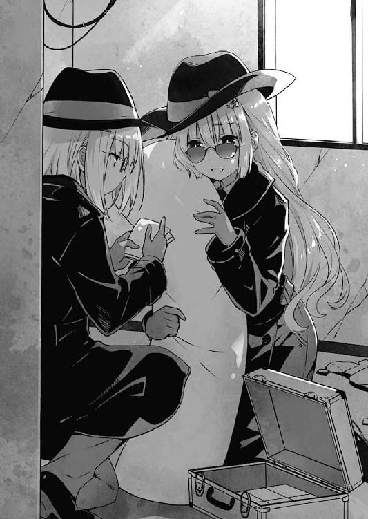
「『前の私』なら、持っていた。でも、この世界では、その写真を撮影した事実がなくなっている。データの補完は急務」
「あ......なるほど」
美九が納得を示すようにうなずいてくる。
そう。この世界は一度精霊の力によって歴史を改変された。それによって折紙は救われたのだが──その代償として、長年かけて収集した士道コレクションの大部分を失ってしまっていたのである。
「納得しました。じゃあ、交渉成立ですねー？」
「──異存ない。でも、もう一つ相談がある」
「相談......ですかー？」
「そう。この写真のデータが欲しい。もちろん、ただでとは言わない。その抱き枕に使用している音声データと交換という形でどう？」
折紙が言うと、美九が目をキラキラと輝かせた。
「本当ですかー!? もちろんオッケーですよー！ じゃあ、早速今から送りますねー！」
言って、美九がスマートフォンを取り出し、操作をし始める。
折紙もこくりとうなずき、同じようにスマートフォンを取り出して自宅のサーバに保存してあるファイルを開いた。
「............？」
が──そこで違和感に眉をひそめる。
保存してあるはずの様々な士道データの一部が、まったく別のファイルに置き換わっていたのである。
「これは......外部からの侵入......？」
「きゃぁぁぁぁぁぁぁっ!?」
そこで突然美九が悲鳴を上げ、その場に倒れ込んでしまう。折紙は顔を上げ、そちらに駆け寄った。
「一体何があったの」
「だ......だーりんが......だーりんの写真が......あばばばばば」
美九は顔面を蒼白にしながら虚ろな声でそう呟いた。まるで、見てはいけないものを見てしまった探索者のように。
「............？」
折紙は美九が手にしていたスマートフォンの画面に目をやった。
そこには士道の写真......ではなく、濃厚な絡みを繰り広げる筋骨隆々とした男たちの写真が表示されていた。
「──うおおおおおおおおおおっ！」
「いけっ！ そこ！ とりゃっ！」
二亜の声援を受けながら、士道はズダダダダ！ と力強くボタンを叩いていた。画面の中の主人公が身体中に謎のオーラを纏い、不良に連続攻撃を放っていく。
ちなみに、今士道の手に握られているのは普通のマウスではなく、パソコンに接続されたゲームパッドだった。さすがにマウスやキーボードでは分が悪いということで、二亜が引き出しの奥から引っ張り出してきたのである。
しかしそれを使ってからも、士道は連敗を喫していた。理由は単純なもので、敵が普通に強かったのだ。
そして迎えた三〇戦目。度重なる敗北と学習の末、士道が操る主人公は、ようやく不良を追い詰めていたのである。
「これで......最後だぁぁぁぁっ！」
士道はすり切れそうになる指を滑らせ、必殺コマンド（これも、連戦の中で自分で習得した）を入力した。主人公が謎のオーラを両腕に溜め、不良に向かって一気に放つ。
不良が吹き飛び、画面上に、待ち望んだ『Ｙｏｕ ｗｉｎ』の文字が躍った。
「ぃよっし！」
「やった！」
士道がガタッと椅子から立ち上がると、二亜がテンション高く叫んで抱きついてきた。
士道はそのままひとしきり喜んだが......しばらくして頭が冷静になると同時、急に恥ずかしさが襲ってきて、二亜の身体をぐいと引き剝がした。
「に、二亜、ちょっと」
「えー、何ー？ 恥ずかしがってんの？ かーわいい」
「か、からかうなよ。それより、先進めるぞ」
士道は椅子に座り直すと、ゲームを進めた。先ほどまで格闘ゲーム然としていた画面が、もとの恋愛シミュレーションのそれに戻る。
『大丈夫かい、ありす』
『な、何よ、誰も助けてなんて......』
などと憎まれ口を叩きつつも、好感度は上昇している。士道はグッと拳を握った。
そこからトントン拍子に話は進み、なんとデートの約束まで取り付けてしまう。
そして次の日曜日、駅前で待ち合わせをした二人は、並んで街を歩いていた。
「へー、なになに、順調じゃない」
「ああ。ええと、どこにデートにいくんだろうな」
士道はそのまま会話を進めていき──ぴたっと手を止めた。
理由は単純。
『へえ、ありすってこういうところ来るんだな。ちょっと意外だ』
『いいじゃない。一度来てみたかったんだ。──ゲームセンターって』
「............」
「............」
画面上で交わされる会話に、士道と二亜は思わず目を見合わせた。
途方もなく嫌な予感が、二人の脳裏を過ぎったのである。
「なあ二亜、これって......」
「いや、まさか、さすがにそんな」
二人が乾いた笑みを浮かべながら会話を進めていくと、今度は、画面が音ゲーのそれに変貌し、上方から凄まじい速さで幾つものマークが落ちてきた。
「噓だろもぉぉぉぉぉ!?」
「何なのよこれぇぇぇぇ！」
マンションの一室に、二人の悲鳴がこだました。
「とう！ 闇夜を裂きて八舞推参！」
「来訪。遊びに来ました、琴里」
そう言って〈ラタトスク〉の臨時司令室にやってきたのは、瓜二つの顔を持つ双子の精霊、八舞耶俱矢と夕弦だった。
〈ラタトスク〉司令・五河琴里は、黒のリボンで二つ結びにした髪を微かに揺らしながらはぁとため息を吐いた。
「......あのねえ、一応ここ臨時とはいえ司令室なんだけど」
「かか、堅いことを言うでない。夕弦とやっていたオンラインゲームが急遽メンテナンスになってしまって暇だったのだ」
「差入。どうぞ、来る途中で買ってきた『ラ・ピュセル』のミルクシュークリームです」
言って、夕弦が綺麗な箱を差し出してくる。琴里は「ぐむ......」と口をへの字にした。
「まったく......仕方ないわね。そろそろ休憩時間だし、お茶にしましょうか」
琴里がため息交じりに言うと、耶俱矢と夕弦はにぃっと微笑み合い、パチンと片手でハイタッチをした。
が──琴里が席を立とうとしたところで。
「──司令、すみません、これを」
司令室下段にいたクルーの一人、椎崎がそう言って、メインモニタにとある画面を表示させた。
「これは？」
「どうやら、先ほどネットワークを通じて〈フラクシナス〉のＡＩに攻撃があった模様です」
「なんですって？ 被害は？」
「ありません。ＡＩが事前に攻撃プログラムを隔離しました。ですが......」
「ですが？」
「はい、気になって調べてみたところ、この攻撃プログラムは〈ラタトスク〉を狙ったものではなく、無差別にバラ撒かれているもののようです。個人のアドレスにＵＲＬ入りのメールを送り、ゲームに偽装したダミーファイルを展開させて、そこを足がかりにさらに範囲を広げ......といった代物のようです」
椎崎の言葉に、琴里は眉根を寄せた。
「......それに攻撃されるとどうなるの？」
するとそこで、同じく下段に座っていた他のクルーたちが声を上げる。
「司令、現在日本全域で、緊急車両の出動要請や、出前のイタズラ注文が多発している模様です」
「どうやら、クラウドや個人サーバに保管していたファイルがまったく別のファイルに書き換えられているという事態も起こっているようですね......」
「今朝方から起きている銀行ＡＴＭの不具合もこれが原因のようです。さらにウィルスの被害は拡大中。これは......放っておいたら大変なことになってしまいますよ」
クルーの言葉に、琴里は険しい顔を作った。
「うちはそういうの専門じゃないんだけど......仕方ないわね。〈フラクシナス〉ＡＩにそのウィルスを解析させてちょうだい」
「はっ！」
「耶俱矢、夕弦。悪いけれど、お茶はちょっと待ってもらえるかしら」
琴里が言うと、事態の重さを察してか、八舞姉妹が素直にうなずいてきた。
「う......うむ」
「応援。頑張ってください」
琴里は首肯してそれに返すと、身体をメインモニタの方に向けた。
「はぁ......はぁ......はぁ......」
「うっはー......きっつぅ......」
それからさらに数時間後。士道と二亜はへとへとになってその場に突っ伏した。
どうにか音ゲーをクリアしたあとも、主人公とありすはレースゲーム、パズルゲーム、ガンシューティング、スロット、競馬ゲームと様々なゲームを渡り歩き、士道と二亜はそれをしっかりばっちりプレイさせられていたのである。
しかも、難易度はどれもハードモードときたものだ。どうにか交互にプレイしていたものの、さすがに二人の疲労はピークに達していた。
だが、ありすはまだ遊び足りないようだった。画面の中で、次なるゲームに移っていく。
『ねえ、次これやってみたい』
『え？ これは......』
主人公が言うと同時、ゲーム内ゲームの画面が表示される。そこには幾つもの麻雀牌と、やたら色っぽい半裸の女の子のイラストが描かれていた。
「......って、なんでデートで脱衣麻雀なんてやるんだよ!?」
士道は思わず声を裏返らせた。そう。ありすが選んだのは、麻雀で負けた方が服を脱いでいく、所謂脱衣麻雀と呼ばれるものだったのである。
だが、ゲームに文句を言ったところで意味などあるはずもない。今までのゲームと同じく、これもクリアせねば先に進めないのだ。
「へえ......麻雀か。よっしゃ、ここはあたしに任せてもらっちゃおうかな」
と、二亜が腕まくりをするような仕草をし、ゲームパッドを握る。
「二亜？ 得意なのか？」
「ふふん、それなりにね。昔は徹夜でネット対戦したものよ」
自信ありげに二亜が言って、ゲームをスタートさせる。すると自動で手元に牌が配られ──
次の瞬間、『天和』の文字が画面に躍り、対面の牌が表示された。
「んな......ッ!?」
それを見て、二亜が愕然とした顔をする。しかしそれも無理からぬことである。麻雀とは基本的に牌を揃えて役を作るゲームなのだが、『天和』とは牌が配られた時点で上がっているという、問答無用の必殺技のようなものなのである。
要は、何もしないうちに二亜は負けてしまったのだ。正直、コンピュータ相手でこれをやられると、理不尽なことこの上ない。
しかし、だからといって士道と二亜にできることなどはない。二亜は苛立たしげに眉根を寄せながらも、気を取り直すようにボタンを押した。
「ああもう、次々」
だが。二亜が数度ボタンを押しても、ゲームは再開しなかった。その代わり、画面上にメッセージウィンドウが表示される。
『コンピュータの勝利です。プレイヤーは服を一枚脱いでください』
「は......？ 何これ」
二亜が困惑した様子でボタンを連打する。しかしその度スピーカーからブー、という音が鳴った。
「そりゃ確かにこれは脱マーだけど、プレイヤーが服脱いだかどうかなんてゲームに判別できるわけ......」
と。そこで二亜は言葉を止めた。
そして何かに気づいたように、二人がゲームをプレイしていたパソコンの画面上部に付いていたカメラのレンズに視線を注ぐ。
「......まさか、この内蔵カメラでチェックしてるの？ ホントに脱がなきゃゲームが再開できないってこと？」
「いやどんなゲームだよそれ。......ていうかもし仮にそうだったとして、なんでゲームにそこまでしなきゃいけないんだよ」
「そ、そうだよねぇ......」
士道の言葉に、二亜が同意を示す。
しかしそこで、画面に変化が現れた。脱衣麻雀のキャラクターがこちらを挑発するようにくいくいと指を曲げながら『まだぁ？ やる気ないならさっさと消えてくれる、負・け・犬・サン』と言い始めたのである。
二亜の額に、ピキッと青筋が浮かぶ。
「上等だコラァ！ やったろうじゃないの！」
叫び、二亜が穿いていたデニムのボトムスをやけくそ気味に脱いだ。やたらと色っぽい黒の下着とガーターベルトが露わになる。上はニットのハイネックを着たままであるものだから、なんだかもうそのギャップがいやらしいことこの上ない。
「お、おい、二亜」
士道は慌てて視線を逸らした。しかし二亜は恥ずかしがる素振りもなく、ジッとパソコンを見据えていた。
すると、今までフリーズしたように変わらなかった画面に変化が訪れた。再び、牌が配られ始めたのである。
「やっぱりか......ふん、舐めた真似してくれんね。まあいいわ。後悔させてやる。あたしのパンツは高いわよ」
二亜が真剣な眼差しで画面を見つめる。
だが。そこで再び画面に『天和』の字が表示された。
「なん・じゃ・そらぁぁぁぁぁぁッ！」
二亜が絶叫を上げ、ゲームパッドを放り投げる。
「ああもうくそっ！ この女絶対素っ裸にしてやる！」
二亜は忌々しげに言うと、着ていたハイネックに手をかけ、一気に脱ぎ去った。どうやら下にシャツなどは着ていなかったらしい。上下ともに下着だけという、あられもない格好になってしまう。
「お、おい、落ち着けって。それ以上負けたら大変なことになるぞ!?」
「いいから任せて！ 絶対こいつのおっぱい拝ませてあげるから！」
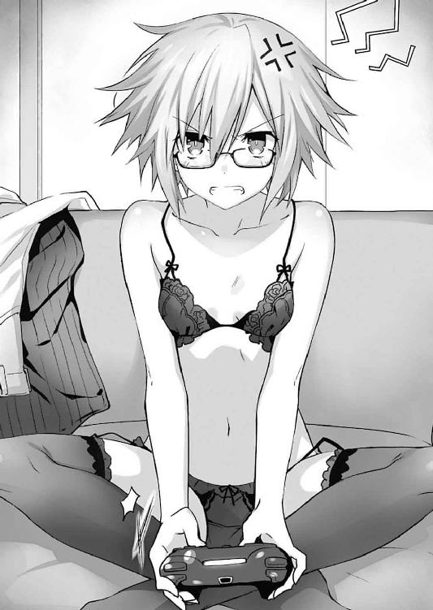
言って、ビシッと画面上の女の子を指さす。ちなみにそれはあくまでゲーム内ゲームの登場人物であり、お目当てのありすちゃんとは別人である。
「またそういう下品なことを......ていうか......」
士道は頰を赤くしながら二亜の姿をちらと見やった。
「......おまえ、いつもそんな下着着けてるのかよ」
「え？ あ、いやいや。そんなわけないじゃん。これは少年が来るから、もし何かあったらと思って念のために」
「何を想定してるんだよ!?」
「えっとね」
「ごめん具体的に言わなくていい！」
士道は二亜を制止するようにブンブンと首を横に振った。
〈ラタトスク〉臨時司令室のメインモニタに表示された地図が、じわりじわりと赤く染まっていく。
それは、件のウィルスによる被害が報告された地域の図である。まるで紙に水が染み渡るように、次々と版図が広げられていく。
「く......何よこのスピードは。尋常じゃないわ」
「お、恐らくですが、数ヶ月前から、ウィルスはネットワーク上に存在していたのでしょう。それが簡単には削除しきれない規模になってから攻撃性をもつプログラムが施されたと考えられます......！」
「ち......何なのよ一体これは......！」
琴里が渋面を作っていると、突然、司令室にアラームが鳴り響いた。
「何事!?」
「は......こ、これは......国内全域の病院の医療機器にウィルスの感染を確認......！ まだ被害は軽微ですが、このまま放置していては、患者の命に関わる危険が......！」
「なんですって!? く......解析は!?」
琴里が叫ぶと、それに応えるように、解析官・村雨令音が眠たげな声を返してきた。
「......ちょうど今完了した。これは......なかなか興味深い結果が出たね」
「っていうと？」
「......これはただのウィルスではない。自分で学習し成長する、いわばＡＩに近いプログラムだ」
「ち、ちょっと待ってよ、そんなの」
「......ああ。そんなものの作製は不可能だ。普通の技術ではね」
「まさか──ＤＥＭ......ッ!?」
琴里は苦々しく吐き捨てるように言った。そう。ＤＥＭインダストリー。琴里たち〈ラタトスク〉の敵であり、常識の埒外にある技術を擁する組織である。
「......そう考えるのが妥当だろう。だが、ウィルスの動きを見るに、どうもＤＥＭが我々を狙ったものとは思えない。どちらかというと......そう、ＤＥＭに破棄されたはずのデータがネットワーク上に残り、増殖を繰り返したというイメージだ」
令音がコンソールを弄りながら言ってくる。琴里はくっと顔をしかめた。
「どちらにせよ、脅威であることに変わりはないわ。......中津川！」
「はっ、すぐにデータをもとにワクチンプログラムの生成に入ります！」
「時間は！」
「あと一八〇分ほどかと......！」
「く......遅すぎるわ。できるだけ急がせて！」
「は、はいっ！」
中津川がコンソールを操作する。と、そこで何かに気づいたように眼鏡の奥の目をしばたたかせた。
「司令、ウィルスプログラムの中に、奇妙な文字列が......」
「文字列？」
「はい」
中津川がタン、とキーを叩く。すると英語の文章が、日本語に訳されていった。
「......『あたしに愛を教えて』？ 何よこれ」
「さ、さあ。私にはなんとも──」
と──そこで中津川の声を遮るように、再度けたたましいアラームが鳴り響く。
「今度は何!?」
「これは......某国の軍事衛星がウィルスにジャックされた模様です！」
「噓でしょ......そんなものまで!?」
「衛星、攻撃準備を開始しています！ 目標は......ここ！ 天宮市です！」
「な......」
「ワクチンプログラムを作っているのがバレたっていうの!? そんな馬鹿な......！」
琴里は、ギリと奥歯を嚙みしめた。
「このままじゃ間に合わない。一体どうしたら──！」
「............」
「............」
ゲームを始めてから、もう何時間が経過しただろうか。
士道と二亜は、ぼうっと画面を見つめていた。
あのあと、脱衣麻雀で辛くも勝利を収めてから、かなりストーリーを進めてはいたのだ。ありすの好感度もどうにかじりじりと上げ、最初は頑なだった彼女も、少しずつ心の裡にある思いを打ち明けてくれてもいた。
だが、そのクライマックスで現れた選択肢が、士道たちの手を止めていたのだ。
選択肢自体は今までさんざん選んできた、物量で押すタイプのものである。だが──その量の桁が違っていた。幾度スクロールしても果てが見えない選択肢の山。どれを選んでも進まないゲーム。その代わり映えのしない状況が、二人の疲労を倍増させていたのだった。
一定間隔でループするＢＧＭを聞きながら、二亜が掠れた声を発してくる。
「......ねえ、少年」
「......なんだ、二亜」
「さすがにそろそろ、止めとこっか。もう時間も遅いし、別にクリアできなかったからって世界が滅ぶわけでもなし......」
二亜の言葉に、士道はしばしの間黙り込んだあと、はあとため息を吐いた。
「......そりゃあ、おまえがいいならいいけど......」
頰をかきながら言葉を濁らせる。確かに士道も疲れているし、早く夕食を作りに帰らねばならないのだが......一つ、気になることがあったのである。
「......なあ、二亜」
「ん、なに？」
「このありすちゃんって子。なんでそんなに攻略したかったんだ？ やっぱりゲーマーの意地ってやつか？」
問うと、二亜はあははと苦笑した。
「ま、それもないとは言わないけど......この子、素直じゃないっていうか、あんまり他人を信じられないタイプみたいでさ。それが、なんていうか......ちょっと前のあたしみたいで」
「......あ──」
士道は目を見開いた。言われてみればそうである。確かに容姿も性格も違う。だが、他人を信じたいのに信じられないこの妙なもどかしさは......二亜に通じるものがあったのである。
だから──二亜はこの子を助けてあげたかったのだろう。主人公という名の、自分の手で。
二亜がどこか申し訳なさそうに笑い、もう一度大きく息を吐く。
「──にしても、さすがにこんな難しいとは思わなかったよ。時間取らせちゃったね。この埋め合わせは──」
と。二亜はそこで言葉を止めた。
むくりと起き上がり、再びゲームパッドを握った士道を見て。
「し、少年？」
「......ほら、もうちょっとじゃねえか。しっかり選べ」
士道が言うと、二亜はしばしの間ぽかんとしたのち、微笑を浮かべてきた。
「......はは、少年、モテるでしょ、キミ」
「な、何言ってんだよ。それよりほら」
「ん......」
士道と二亜は画面に視線を戻し、改めて状況を確認した。
小高い丘の上で、主人公とありすが二人並んで、眼下に広がる街の夜景を見下ろしている。
そこで、ありすが初めて心の裡を吐露してきたのだ。
『あたし......生まれてきた意味あるのかな？ 誰も、あたしを愛してくれない』
それが、きっとありすの攻略ポイント。彼女は家庭環境に恵まれなかったがために、他人に心を開くのを恐れていたのである。
そしてそこに、選択肢が現れた。恐らく──一〇〇〇〇以上の、膨大な言葉の群れが。
士道と二亜は、目を皿のようにしてそれらをチェックした。
しかしどうしても......「これ！」という選択肢は見当たらなかった。
「く......なんだよこれ。量だけはあるのにろくな答えが用意されてねえ」
「うん......でも、ゲームである以上、クリアへの道筋はあるはずよ」
「いや、普通はそうだろうけど、カメラ使って脱衣判定するようなゲームにそんな......」
と。
言いかけて、士道はハッと目を見開いた。
そう。二亜が挑んだ脱衣麻雀。あれは、自動的にパソコンのカメラを起動させ、プレイヤーがきちんとペナルティを受けたかを判定していた。
ならば、もしかしたら──
「なあ......二亜。このパソコンって、マイクとか──付いてるのか？」
「え？ うん、確か内蔵されて......って、まさか」
二亜も気づいたのだろう。驚いたように目を丸くしてくる。
士道はこくりとうなずくと、パソコンに向かって喋りかけた。
画面に表示された選択肢にはない言葉を。
「......俺は、おまえを、愛してる」
そしてそれに続けて、二亜が声を発した。
「うん......あたしも。生まれてきてくれて......ありがとう」
すると。
『......えへへ』
今まで一度も笑わなかった、画面の中のありすが微笑んだ。
『ありがとう。あたしも愛してる』
そして画面がキラキラと光り輝き......主人公とありすが結ばれたエンディングへと突入する。
その美しい光景を見ながら、士道は呆然と声を発した。
「お、終わった......のか？」
「みたい......だね」
士道と二亜はしばしの間脱力していたが、
「よっしゃぁぁぁぁぁぁ！」
「いやっほぉぉぉぉぉぉ！」
すぐに、大声を上げてはしっと抱き合った。
顔を緊張の色に染めていた琴里は、突然の出来事に眉根を寄せた。
──〈ラタトスク〉臨時司令室に響いていたアラームが、急に鳴り止んだのである。
「何？ 一体何事？」
「し、司令！ ウィルスにジャックされていた軍事衛星が、正常な状態に戻りました！」
「それだけではありません！ その他感染の確認されていたコンピュータから、全て反応が消えています！」
「な......どういうこと!?」
「わかりません......ただ蔓延していたウィルスが、一つのテキストデータだけを残して自壊してしまった模様です」
「テキストデータ？ 表示できる？」
「はっ」
琴里の指示に従い、クルーがモニタにそのテキストを表示させる。
『ありがとう。あたしも──愛してる』
「......？ 何、これ......」
琴里は、困惑したように首を傾げた。
◇
その日の夜。士道が二亜を連れて家に帰ると、十香と四糸乃、七罪たちが心配そうな顔をして出迎えてくれた。
「おお、無事だったかシドー！ 帰りが遅いから心配したのだぞ！」
「あはは......ごめんごめん。野暮用でな。すぐ夕飯の準備するからちょっと待っててくれ」
「む......だがシドー、疲れているように見えるぞ？ 大丈夫か？」
「ああ。ほら、四糸乃と七罪も」
士道が促すと、精霊たちは大人しくリビングの方へと歩いていった。
十香の言うとおり疲れてはいたのだが......さすがに朝からぶっ続けでゲームをやってて夕飯が作れませんというのは情けなさ過ぎる。士道は苦笑しながら冷蔵庫を開け、中にある食材を取り出して少し遅い夕飯の支度を開始した。
と、それからどれくらい経った頃だろうか。玄関の扉が開いたかと思うと、なんだか妙に疲れた様子の琴里と八舞姉妹がやってきた。
「おう琴里に耶俱矢、夕弦。遅かったな。どうしたんだ？」
士道が問うと、琴里は手洗いうがいもしないままリビングのソファにダイブし、手足を弛緩させた。
「どうしたもこうしたも......大変だったんだから」
そしてのそのそと顔を上げ、今日あったことを説明してくる。
どうやら日本全域に謎のコンピュータウィルスがバラ撒かれ、あわや大惨事になるところだったらしい。
「はー......そんなことがあったのか。でも、解決したってことは、やっぱり〈フラクシナス〉のＡＩが何とかしてくれたのか？」
「......いえ。私たちが助かったのは本当に偶然よ。ウィルスに仕込まれていた難解な暗号コードを、世界の誰かが解いてくれたみたい」
言って、琴里が肩をすくめる。
それを聞いた二亜と士道は、
「ほえー」
「凄い人もいるもんだなあ」
と、素直に感心の言葉を述べた。
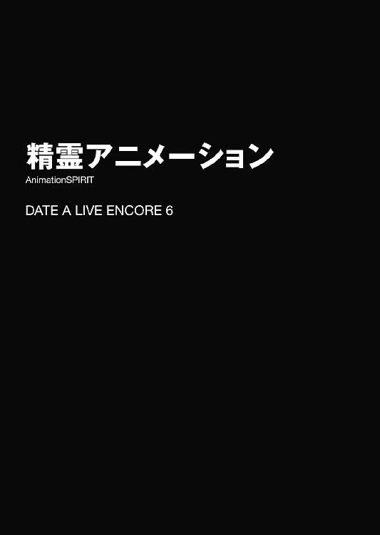
「いつでもどこでもあなたの近くに！ 本条二亜ちゃん華麗に参上だぜー」
などと、コンビニエンスストアのキャッチコピーか、さもなくば悪質なストーカーのような文句を発しながら五河家に現れたのは、眼鏡をかけたショートヘアの少女だった。
本人が名乗ったとおり、その名は本条二亜。市内の高層マンションに住む人気漫画家にして、士道が霊力を封印した精霊の一人である。
「ふんふふーんふんふんふーん♪」
二亜は何やら上機嫌な様子で軽やかにステップを踏みながらリビングに入ってくると、そこに居並んでいた精霊たちをぐるりと見回した。
「やあやあとーかちゃん、おっはー。妹ちゃんもご機嫌麗しゅう。みっきーによっしーにかぐやんにゆづるんオリリン、みんな今日も可愛いねえ。あ、なっつん。アシスタントの件考えてくれた？」
「む、おっはーとはおはようのことか？ もう昼過ぎだが......」
「え、もしかして今起きたの？ 夜更かしもほどほどにしなさいよ？」
「......ていうか、私の郵便受けに勝手に漫画用のペンとかインク入れてったのやっぱあんただったのね......」
皆が口々に言うと、二亜は「あっはっはー」と笑いながらくるりとターンをして、ソファに腰を落ち着けた。
日頃から陽気な二亜ではあるけれど、今日はいつにも増してテンションが高い気がする。士道は肩をすくめながら問いを発した。
「どうした二亜、何かいいことでもあったのか？」
すると二亜は、驚いたように目を丸くしたのち、ニマニマと口元を緩めてきた。
「ありゃ、わかっちゃう感じ？ さっすが少年。心が繫がり合ってるね。もう結婚するしかないね」
「はいはい......で、何があったんだ？」
軽くいなしながら士道が言うと、二亜は「えっへっへ」と笑ってから、手にしていた鞄から、ダブルクリップで留められた紙束のようなものを取り出し、テーブルの上に放ってみせた。
「ん？ これは......」
士道はそれをパラパラと捲り、眉をぴくりと動かした。
Ａ４版の紙に枠線が引かれ、その中に下書きのような絵がいくつも描かれている。
一瞬漫画の下書きかと思ったが......どうも様子が違う。士道も実物を見るのは初めてだが、これは──
「これって......アニメの？」
「そ！ 絵コンテだよー」
二亜はビッと右手の人差し指を立て、左手を腰に当てながら、宣言するように叫んだ。するとその言葉に、精霊たちが目を見開く。
「アニメ？ アニメというのはあれか？ あの絵が動くやつか？」
「ミスティみたいなの......ですか？」
「驚愕。もしかして二亜の漫画がアニメになるのですか？」
夕弦が言うと、二亜は大仰にうなずいてみせた。
「そゆこと！ すごいっしょ！」
二亜がえっへんとふんぞり返る。精霊たちが『おおー！』と拍手をした。
「あれ、でも『ＳＩＬＶＥＲ ＢＵＬＬＥＴ』ってもうアニメ化されてなかったか？」
「うん。今回のはシルブレじゃなくて、昔あたしが描いた『ネクロニカ』ってやつの方」
「あー......そういえば昔読んだことがあるような。ゾンビのやつだよな？」
『ネクロニカ』。確か二亜──本条蒼二が『ＳＩＬＶＥＲ ＢＵＬＬＥＴ』連載初期、月刊誌に並行して描いていたホラーアクションだ。既に完結しているものの、ハードな世界観が受け、今でもコアな人気を誇っている。
「マジで？ まいどあり。んでその『ネクロニカ』をアニメ化したいって話があってね。まあＯＶＡ......って今は言わないんだっけ？ テレビ放送はしないやつなんだけどさ」
「へえ。にしても凄いじゃないか。おめでとう、二亜」
「えっへっへ。祝われちゃった。今夜の夕飯はお赤飯？」
二亜がからかうような調子で言ってくる。士道は頰に汗を垂らした。
「おまえなあ......」
「む？ なぜ赤飯を炊くのだ？」
十香が不思議そうな顔をしながら首を傾げてくる。士道は答えに窮してしまい、恨みがましい口調で「にーあー......！」とうなりを上げた。
「あっはっは、ごめんごめん。──うんでさ、お詫びってわけじゃないけど、少年、アニメの収録現場って興味あったりする？」
「へ？」
唐突な質問に、士道は二亜への文句も忘れて素っ頓狂な声を上げた。
「収録現場？」
「そうそう。いわゆるアフレコってやつ。ほら、映像に声優さんが声当てるっしょ？ あれあれ」
言われて、士道は「ああ」と目を見開いた。確か以前、アニメの制作現場に潜入......みたいな特集をやっているのをテレビで見たことがある。
「まあ......興味ないかって言われたら噓になるかな。普段見られないところではあるし」
「でしょー。なんか、友だちを見学に連れて来てもいいって言われたんだけど、よかったらみんな一緒に行く？」
二亜の言葉に、精霊たちがパァッと表情を輝かせた。
「おお......！ 行く、行くぞ！」
「わ、私も......！」
「あらー、いいですねー。何なら私主題歌歌いましょうかー？」
「......えっ、そういうの勝手にやって大丈夫なの？」
「！ 七罪さん......そんなに私のことを心配してくれるなんて！ 感激ですっ！」
「そういう意味じゃ......ちょ、離してって......んんーっ！ んんんんんーッ！」
などと、精霊たちが色めき立つ。若干一名美九の情熱的なハグによって胸に顔を押しつけられ呼吸困難に陥っている者もいないことはなかったが、まあ誤差の範囲だろう。
士道は美九に「ほどほどにしとけよ......」と声をかけてから、二亜の方に向き直った。
「でも、こんな人数で行ったら邪魔になるんじゃないか？」
「へーきへーき。なんか今回広めのスタジオ使うって言ってたし。あ、もしかしたら、ガヤとか参加できるかもよ？」
「ガヤ......？」
二亜の言葉に、四糸乃が首を捻る。すると二亜は、大仰にうなずきながらそれに返した。
「ほら、街とか教室とかライブ会場とか、主要メンバー以外にたくさんの人間が出てきて、後ろで会話してたりするシーンがあるっしょ？ あれよ、あれ。ガヤガヤしてるからガヤっていうの」
「あ......あります！」
四糸乃が目を丸くしながら言うと、耶俱矢がピクリと眉を動かし、その反応に何かを察した夕弦もまた同じようなリアクションをした。
「ほほう......つまり、我が魔性の声音が、輝く円環に封じられ永劫の時空を生きると？」
「解説。夕弦たちの声がアニメに収録されるかもしれないということですか」
間髪を容れぬ夕弦の解説に、二亜がビッと親指を立てた。
「ま、要はそういうこと。どう？ 面白そうじゃない？ あ、ほら、これ原作本。よかったら読んでみて」
二亜が言うと、精霊たちはキラキラと輝いていた瞳をより一層輝かせた。
「おお......！ それは、なんだ、すごいな！」
「ふうん、そんなのできるんだ」
「すごい......です！」
こんな反応をされては駄目とも言えない。士道は小さく苦笑してからこくりと首肯した。
「うーん......じゃあ、せっかくだしお邪魔するか？」
『おーっ！』
士道の言葉に、精霊たちは一斉に声を上げた。
それを見て二亜がにやりと口元を歪めたのだが......それに気づいた者は一人もいなかった。
◇
そしてそれから数日後。士道たちは二亜に連れられて、都内の録音スタジオを訪れていた。
オフィス街の脇道を入ったところにある、見た限り何の変哲もないビルである。入口に『スタジオグレイヴ』と書いてあるものの、一見しただけではこの中でアニメの音声を収録しているとは思えなかった。
「さ、ここだよ。もうスタッフさんはいるはずだから、入っちゃおうぜー」
言って、二亜が慣れた調子でビルの中へと入っていく。てっきり、もっと厳重なセキュリティに守られているものだと思っていたが......特にそういったものはないらしい。少し〈ラタトスク〉の秘密基地感に毒されすぎているのかもしれないと自覚する士道だった。
「む？ どうしたのだシドー、そんなところで立ち止まって」
「あ、いや、なんでもないよ。──俺たちも行くか」
「うむ！ 楽しみだな、シドー」
十香が屈託のない笑みを浮かべ、そう言ってくる。士道は「ああ、そうだな」と笑顔でそれに返すと、精霊たちを伴って建物の中へと入っていった。
そして二亜のあとを追うようにして地下への階段を下り、何やらたくさんの機械が並んでいる部屋──いわゆるコントロール・ルームへと至る。
と。
「......うおっ!?」
部屋に入るなり、士道は思わずビクッと肩を震わせてしまった。
しかしそれも無理からぬことである。既に部屋の中には数名の人間がいたのだが......それら全てがやたら個性的な容貌をしていたのである。
フランケンシュタインの怪物のような巨軀の男に、黒のスーツを纏った吸血鬼のような男。その前方には、怪我でもしているのだろうか、全身のあちこちに包帯を巻いたミイラのような男と、やたらと露出度の高い格好をしたサキュバスのような女がいた。
正直収録現場というよりも、妖怪大戦争という方が適当という光景である。士道以外の精霊たちも、皆ぽかんとしていた。......まあ、サキュバスのような女を見て「まぁっ！」と色めき立っている少女もいたのだが。
と、士道たちが入口で固まっていると、巨軀の男がこちらに気づき、手を振ってきた。
「お、本条サン。待ってたよ」
......よく見ると、何かの手術痕なのか、額に縫い傷が見て取れた。迫力が増した。
しかし二亜は慣れた調子で手を振り返すと、士道たちを紹介するようにあごをしゃくった。
「うーい、どうも監督。あ、こっちが例の子たちね。よろしく」
「やあ、よろしく。監督の富良野健造です」
「あ......こ、こちらこそよろしくお願いします。すみません、急にこんな大人数で押しかけちゃって......」
「いやいや、大丈夫だよ。むしろ歓迎さ。アニメってのはアクシデントとアンバランスだからね！ 事件が積み重なるほど出来上がるモノは面白くなるものさ」
「そ、そういうものですか......」
「そうとも。制作なんて予定通りに進むことの方が少ないんだから、気にしっこなし。ま、気軽に楽しんでいっておくれ」
言って、がっはっは、と豪快に笑う。なんだか圧倒されてしまう士道だった。
「......なんていうか、凄まじい人だな。いろんな意味で」
士道が小声で二亜に言うと、その脇で、折紙が何かに気づいたようにぴくりと眉を揺らした。
「富良野健造......まさか、あの？」
「驚愕。知っているのですかマスター折紙」
「聞いたことがある。アドリブと帳尻合わせの天才。行き当たりばったりに過ぎる制作手法に、関わったスタッフは皆悲鳴を上げ、出禁になった制作スタジオは一〇社に上るという。その豪腕ぶりから、付いたあだ名はフランケンシュタイン」
「そのあだ名の由来、絶対見た目からだろ!?」
士道は思わず叫びを上げると、監督はあっはっはと愉快そうに笑った。
「さて、他の皆も紹介するよ。そっちが制作プロデューサーの寅倉くん、音響監督の光井くんで、そこに座っているのがスタジオスタッフの崎場くんだ」
監督の紹介に合わせ、吸血鬼、ミイラ男、サキュバスが順に頭を下げる。
「ケケケケケ......本日はよろしくお願いしますネ」
「ヒヒヒ......にしても、まさか本条先生が女性とは......驚きましたよ」
「うふふ、本当に。とってもお綺麗で......」
三人があまりに怪しい笑みを浮かべながら挨拶をしてくる。すると、またも折紙が眉を揺らした。
「プロデューサー寅倉......ハードワーカーとして有名で、一緒に仕事をした相手は皆精気を抜かれたようになることから、ついたあだ名はヴァンパイア」
「は......？」
「音響監督光井......あまりに厳しい指導で、一緒に仕事をした相手は皆精気を抜かれるようになることから、ついたあだ名はミイラ男」
「いやだからそれって」
「スタジオスタッフ崎場......なぜか一緒に仕事をした相手は皆精気を抜かれるようになることから、ついたあだ名はサキュバス」
「なんであだ名の由来がだいたい同じなんだよ!? ていうかおまえはホントになんでも知ってるな!?」
士道が声を裏返らせると、折紙は自信満々といった調子でグッと親指を立ててきた。
するとそんな光景を笑いながら見ていたサキュバス......もとい崎場が、妖しい手つきで唇を撫でながら二亜の方に視線をやった。
「っていうか『ネクロニカ』って私が高校生くらいのときに読んでた記憶があるんですけど、先生随分お若く見えますね。うふふ......羨ましいこと」
「あらそーお？ えっへっへ、若さの秘訣はしっかり食べてしっかり眠ってしっかりエロいことすることだよ」
「あらやだ先生ったら......じゃあ私もちゃんと睡眠時間を取れるようにしないと」
「おや、あとの二つは満たされちゃってる感じ？」
言って、大人の女性二人が笑い合う。......なんというか気まずくなって、士道は頰を染めながら視線を逸らした。
ちなみに、二亜の言葉はほぼ出任せである。まあ、精霊になっていたので身体年齢が昔とほとんど変わっていません、などと言うわけにもいかないので、仕方のないことではあるのだが。
実際は二亜の部屋の冷蔵庫には酒しか並んでいないし、締切前にはよく徹夜をして目の下に隈を作っている。正直なところ、あまり健康的な生活とは言えなかった。しっかりエロいことをしているのかどうかは......まあわからなかったけれど。
と、そこで、興味深げに辺りを見回していた十香が声を上げてきた。
「なあシドー。ここで収録とやらをするのだろう？ 声をやるのは誰なのだ？」
「え？ ああ、そういえば......」
言われて、士道は首を捻った。確かに今紹介されたのは制作スタッフのみであり、キャラに声を当てる声優の姿は見えなかったのだ。
「声優さんって、まだ来てないんですかね？」
『え？』
士道が問うと、監督やプロデューサーたちが不思議そうに首を捻った。
が、すぐに何かを思い出したように、慌てた様子でポンと手を打つ。
「あ、ああ！ そうそう、声優さんね！ まだ来てないの崎場くん！」
「え、ええ、まだ......っと、ちょうど今連絡が！」
そう言って崎場が携帯電話を耳に押し当てる。着信音などは聞こえなかったのだが......マナーモードにしてあったのだろうか。
「はいはい、どうされました......ええっ！ 出演予定だった声優さんが全員食中毒に!?」
『な、なんだってー!?』
わざとらしい崎場の言葉に、他のスタッフたちがこれまたわざとらしく応える。そのあまりの不自然さに、士道は思わず頰に汗を垂らした。
「あ、あの......」
「声優さんがこられなくなるなんてぇ！」
「万策尽きたぁぁぁ！ もう駄目だぁおしまいだぁっ！」
「仕事に穴を開けた僕たちは業界で干されてもう二度と仕事ができないんだぁ！」
「く......っ、こんなとき、声優をやってくれる人が現れれば......！」
士道の声を遮るように、スタッフたちが大仰に嘆きの声を上げる。
するとそこで、二亜が腕組みしながら一歩前に進み出た。
「落ち着きなよみんな。声優なら──」
そしてバッと両手を広げると、士道たちを示すようにしながら声を上げた。
「ここにいるじゃん！ 九人も！」
「......へ？」
二亜の言葉に、士道は目を点にした。否、士道だけではない。十香たち精霊も、皆ポカンとした様子で二亜を見つめている。
「い......いやいやいやいや！」
一拍遅れて、二亜の言っていることを理解する。士道はブンブンと首を横に振った。
「ちょっと待てって！ いきなり何言ってるんだよ二亜！」
「大丈夫大丈夫、みんないい声してるし。それに原作本あげたから、話はなんとなくわかるっしょ？」
「いやそういう問題じゃなくて！」
「えー？ 駄目？ みんながこんなに困ってるのにー？」
「そもそも俺ら素人だからな!? ほら、プロデューサーさんや監督さんたちも困って──」
言いかけて、士道は言葉を止めた。
理由は単純。監督たちが皆手を胸元で組み合わせ、神に祈るかのような調子で士道に潤んだ瞳を向けてきていたからだ。正直ものすごく怖かった。
「頼む......この通りだ！」
「私たちを助けると思って！」
「い、いくらなんでも無理ですって！ な、なあ、みんなもそう思うだ......、──ッ」
士道は最後の希望を込めて精霊たちの方を向き──息を詰まらせた。
理由は単純。一連の話を聞いた精霊たち──特に十香、四糸乃、耶俱矢、夕弦あたりの面々が、ものっすごく興味深そうに目をキラキラさせていたのである。
「お、おまえら......」
「よーし！ じゃあみんな、まずは配役決めよっかー！」
『おー！』
士道の声を遮るように二亜が声を上げ、十香たちが元気よくそれに返す。
それを見て、士道は諦めたように息を吐いた。
◇
──果たして士道を含む九人は、急遽キャストとして、アニメ『ネクロニカ』の収録に参加する運びとなった。
士道としては不安で仕方なかったのだが、十香たちがやる気になってしまった以上どうしようもない。
そして素人とはいえ、やるとなったからには出来うる限りのことをすべきだろう。士道は気を取り直すようにパンパンと頰を張った。
ちなみに二亜の指名により、配役は以下のように決まっていた。
士道......『クライン』。主人公。呪術によって甦った死者と戦う。
七罪......『メリッサ』。禁断の呪術の謎を握る少女。
四糸乃......『エミリー』。クラインを想う一途な幼馴染み。
十香......『アルフレッド』。クラインの仲間。教会の牧師であり、知性派。
琴里......『ジャック』。クラインの弟分。途中で敵に嚙まれ、死者となる。
耶俱矢......『マスター・グレイズ』。強大な力を誇る呪術師。全ての元凶。
夕弦......『ゾンビＡ』。死にたて。
美九......『ゾンビＢ』。腐りかけ。
折紙......『ゾンビＣ』。完熟。
「......俺、主人公かよ」
「......あの、ねぇ、なんで私ヒロインっぽいポジにいるの？ ゾンビでいいんだけど......」
「幼馴染み......頑張ります......！」
「おお、私はシドーの仲間なのだな！」
「弟分......ね。ま、いいけど」
「ほぉう？ 我が呪術師とは、心得ておるではないか！」
「不満。なぜ夕弦がゾンビなのですか。がおー」
「まあまあ、もともとはガヤの予定でしたし、いいじゃないですかぁ」
「士道を襲う役。──なるほど。なるほど」
......などと、一部に不満を持つ者や不穏な考えを抱く者もいなくはなかったのだが、とにかく決定したのである。
士道たちは、自分の台詞部分にマーキングをしたばかりの台本を手に、コントロール・ルームから、防音ガラスで隔てられたブースへと移動していった。
独特の雰囲気が漂う広いスペースである。壁際にモニタとスピーカーが設えられており、部屋の中央に、マイクが五本、等間隔に並べられていた。
「おお......！ 中はこういう風になっているのか！」
「マイクがたくさんあります......！」
『うーん、なんか面白いことになってきちゃったねー』
四糸乃の左手に装着されたウサギのパペット『よしのん』が、口をパクパクさせながら言う。
するとそこで、崎場が部屋に入ってきて、左側のマイク二本の高さを調整した。
「マイク、こっちの二本を低くしておくから、小柄な子はこっちを使ってね」
「あ、ありがとう......ございます」
『おー、ちょうどいい高さだねー』
四糸乃がぺこりとお辞儀をし、『よしのん』がコミカルに手を動かす。その微笑ましい様に、崎場は微笑を浮かべながら元の部屋へと戻っていった。
『──さ、準備はいいかい、みんな』
と、そこで、部屋に設えられたスピーカーから二亜の声が響いてくる。
「かか！ 誰にものを言っておる。我に構えなど必要ない。颶風の御子は常に臨戦態勢よ！」
「首肯。いつでも大丈夫です」
構えが必要ないわりに、やたら格好良いポーズを取りながら八舞姉妹が返す。こちらの音声も隣の部屋に伝わっているようで、二亜は上機嫌そうにうんうんとうなずいた。
『あっはっは、上等上等。じゃあとりあえず、音監さんに簡単に流れを説明してもらおっか』
『では、よろしくお願いします』
二亜に続くようにして、音響監督が声を発してくる。精霊たちは『お願いしまーす』とそれに返した。
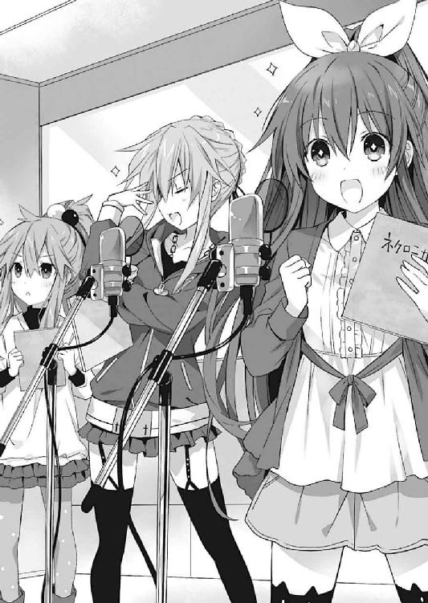
『──基本は、前にあるモニタに表示された映像に合わせて台詞を喋ってくれればオッケーです。画面には、今どのキャラが喋ってるかも表示されるから、それを大体の参考にしてください』
音響監督が言うと、例を示すように、モニタに映像が映し出された。
まだ色の付いていない線画が、中割りのない大ざっぱな動作で動き出す。
「へぇ、こういう風になってるのか。てっきり完成品の映像が流れるんだと思ってた。こっちの方が声を当てやすかったりするのか？」
『............』
何気なく士道が言うと、ガラスの向こうの監督やスタッフたちが気まずそうに視線を逸らした。
「えっ？ な、なんか俺悪いこと言ったか？」
『んーん。......ただみんな、少年の純粋な心が眩しすぎて直視できないだけさ』
「......？」
二亜が、そこはかとないもの悲しさとニヒルさを漂わせながら言う。士道はよく意味がわからず首を傾げた。
『ま、まあとりあえず進めましょう。本番を録る前に、一回通しでリハーサルをするので、そこで感覚を摑んでみてください』
「は、はい。わかりました」
『はい、ではアバンから。メリッサ役の七罪さん』
「......ッ！」
音響監督に名を呼ばれ、七罪がビクッと肩を揺らした。
『そ、そう怖がらずに。よろしくお願いします』
「......わ、わかってるわよ」
七罪は日頃からいいとは言えない顔色をさらに悪くしながら、身長に合わせてチューンされたマイクの前に立った。
『はい、それでは始めます』
音響監督の言葉とともに、モニタ上部のランプが赤く灯り、映像が再生されていく。
最初のシーンは確か、七罪演じるヒロイン、メリッサが、必死にゾンビから逃げているシーンだったはずだ。
「............」
台本を持った七罪が、落ち着かない様子でモニタを見つめる。この配役は原作者の二亜たっての希望だったのだが......正直、不安がないといえば噓になる。何しろ七罪は、人と話をするのが大の苦手なのだ。
と、そこで、モニタにフードをかぶりながら走るメリッサの絵が映し出される。七罪が、すうっと息を吸ってから声を発し始めた。
「──はぁっ、はぁっ......、ここまで来れば安心ね。......この禁断の呪法だけは、奴らに渡すわけには──」
「......っ!?」
あまりに自然な七罪の演技に、士道は思わず目を見開いた。否、士道だけではない。ブースにいた精霊たちもまた、驚いたような表情をしている。
だが、すぐに思い至る。もともと天使〈贋造魔女〉を持つ精霊であった七罪は、別人になりすますことを得意としていたのだ。
それに七罪は毎晩、人一倍熱心に、原作漫画を読み込んでいた。きっとそのときインプットした『メリッサ』になりきっているのだろう。
ガラスの向こうで、二亜が「目論見通り！」というように親指を立てる。どうやら彼女は、七罪の能力を予想していたようだ。もしかしたら、だからこそ精霊たちにいきなり声優をやらせるだなんて無茶を思い立ったのかもしれなかった。
少々驚きはしたが、これならばもしかしたらいけるかもしれない。士道は胸の裡に灯った微かな希望に、拳をグッと握った。
──だが、現実はそんなに甘くなかった。
七罪の台詞が終わり、モニタにゾンビたちの姿が映し出される。
それと同時、マイクの前に控えていたゾンビ役の三人が声を発した。
「がおー♡」
死体の割にはやたらと元気のいい美九と、
「うごー」
それとは対照的に、妙に抑揚のない声を発する折紙、
「咆哮。あがー」
そして極めつけに、台本にない言葉を足した夕弦が。
「............」
思わず額に汗を滲ませ、渋面を作る。
しかし、物語はまだ始まったばかりである。というか、ゾンビは台詞が短いためまだマシな方であった。
そう。ゾンビの後方から、敵の親玉であるマスター・グレイズが現れたのである。
「ふはは！ 無駄だ。我から逃げられると思っているのか！」
アニメなので別にキャストの動きは関係ないのだが、耶俱矢がやたらと格好いいポーズを取りながら高らかに言う。
美九とは異なり、別に演技の方向性自体は間違っていないのだが......残念ながら明らかにキャラクターに声が合っていなかった。
しかし、それも当然だ。この中で一番それっぽいからー、などというぞんざいな理由で選ばれた配役である。そもそも女子率九割近いこの面子の中で、威厳ある老齢の男キャラまで賄おうというのが間違っているのだ。
だが、いつまでもそれに気を取られているわけにもいかなかった。
次のシーン。タイトルロゴが表示されたのち、場面は変わってのどかな街の風景が映される。士道、四糸乃、十香、琴里の演ずるキャラクターたちのシーンだ。
「っと......」
いよいよ出番である。士道は心臓の鼓動が少し速くなるのを感じながらも、四糸乃たちとともにマイクの前へと立った。
「おーい、エミリー。あんまり走ると危ないぞ」
そして、精一杯自然さを意識した調子で、その台詞を読み上げる。......賞賛されるような演技ではないかもしれなかったが、これが士道の精一杯だった。
するとそれに応えるように、四糸乃が緊張した面持ちでのどを震わせた。
「だ、大丈夫よ......クライン。うふふ......気持ちのいい、天気ね」
......頑張ってはいるようなのだが、如何せん、緊張のためか声が震えている。その後何度か士道演ずるクラインと会話をするも、少々テンポも遅くなってしまっていた。
しかし、映像は待ってはくれない。次いで、琴里演ずるジャックが現れる。
「く、くくくクライン、ま、ままま待ってくれよう」
......なんだか四糸乃よりも緊張していた。意外なことにこういうのは苦手らしい。
さすがにこれはなんとかせねばなるまい......と思っていると、モニタに、十香演ずるアルフレッド牧師が現れた。
「やあ三人とも！ 今日もおそろいだね！ 僕もこれから......む？ シドー、これはなんと読むのだ？」
台詞の途中で十香が眉根を寄せ、士道の方に台本を向けてくる。十香が指さした箇所には漢字で『礼拝堂』と書いてあった。
「......それは『れいはいどう』って読むんだ」
「おお！ ありがとうだ！ 僕もこれかられいはいどうにいくんだ......む？ シーンが変わっているぞ？」
言って、モニタを見ながら十香が首を傾げる。画面には既に次のシーンが映し出されており、主人公のクラインがパクパクと口を動かしていた。
「あっ、やべ」
無論、その役を演ずるのは士道である。慌てて台本に視線を落とす。
──それからおよそ一五分、切りがいいところまでリハーサルを続けてみたものの、一事が万事である。メリッサになりきった七罪こそ好演を見せたが、他の面子はひどい有様だった。
「むう、なかなか難しいものだな」
「緊張......しました......」
「まあ仕方ないわよ、初めてだもの」
「指摘。ぶっちゃけ四糸乃より琴里の方が緊張していました」
「うぐ......っ！ う、うるさいわね！」
精霊たちがわいわいと反省点を述べ合う。それを見てから、士道はガラスの向こうの二亜に視線をやった。──やはり素人には無理だっただろう、という意図を込めて。
「......で、どうする？」
だが──
『どう、監督。いけそ？』
二亜の問いに、監督は自信ありげにうなずいた。
『ああ、いけるな』
「ええっ!?」
予想外の反応に思わず声を上げる。が、監督は構わず言葉を続けた。
『とりあえず、台本にふりがなを振ろう。ゾンビの声にはあとでエフェクトをかけるから好きにやってくれていい。それと本条サン、こっからは相談なんだが──』
監督が二亜の方に顔を向ける。その際監督の目がキラリと輝いた。気がした。
『......やっちゃっていいか？』
『ほぉう......？』
監督の言葉を受け、二亜が面白がるように口元を歪めた。
『ようやく昔の目に戻ってきたじゃん、監督。いいよ、やっちゃって』
『よしきた』
監督はパン！ と膝を叩くと、士道たちの方に視線を寄越してきた。
『みんな、キャラと話の筋はわかってるんだろう？ なら、細かい台詞の差異はあとで調整するから、ちょっと流れでやってみてくれ』
「流れ......ですか」
『ああ。一言一句合わせようとすると焦るだろ？ だからもうちょっと自然体というか、やりやすいようにやってくれていい』
「ふむ......」
「な、なるほど」
監督の言葉に、精霊たちは目を見合わせたのち、納得を示すように首肯した。
「十香、台本貸してみ。難しそうなところにふりがな振ってやるから」
「おお、ありがとうだシドー！」
十香が表情を明るくしながら台本を手渡してくる。士道は隣の部屋からペンを借りて、十香の台本に漢字の読みを記していった。
その間他の面々は、台本に視線を落として小さく唇を動かしていた。台詞を諳記しているというよりも、監督の指示通りキャラクターと話の筋を摑もうとしているのだろう。
そして、それからおよそ一〇分後。
『よし、じゃあいってみようか。スタート！』
監督の声と同時、再び映像が再生された。
「──はぁっ、はぁっ......、ここまで来れば──」
アバンのシーンが始まり、またも七罪がメリッサを熱演する。
その後のゾンビやマスターの演技はそこまで変わっていなかったが、まあエフェクトで声をいじるというのであれば問題ないだろう。
そして、シーン転換。暗い背景が、のどかな街の風景に変貌する。
「おーい、エミリー。あんまり走ると危ないぞ」
「大丈夫よ。ふふっ、今日はいい天気ね......」
「ま、待ってよクライン。置いてかないでってばー」
台詞の細部は異なるものの、四糸乃も琴里も、先ほどよりぐんと自然になっている。琴里にはまだ緊張が窺えるものの、自信なげなキャラクター性と合っているためか、そこまで気にはならなかった。
「やあ三人とも！ 今日もおそろいだね！ 僕もこれから礼拝堂にいくんだ。ご一緒してもいいかな？」
十香も、士道が記したふりがなのおかげか、今度は淀みなくそう言ってみせた。声の調子というかテンションがいつもの十香そのものだったため、落ち着いた牧師にしては元気すぎる気がしないでもなかったが、まあ許容範囲だろう。
これならば......なんとかなるかもしれない。
が。そんな淡い期待は、すぐに打ち砕かれることとなった。
それからしばらくは、皆拙いながらもなんとかストーリーに沿って芝居をこなしていたのだが......時間が経つにつれ、なんだか段々と方向性がずれていったのである。
問題が起こったのは、クラインとメリッサが出会い、蘇る死者の謎を追って皆で旅に出たあとのシーンだった。
舞台は湖畔の宿。夜、寝付けずに部屋を抜け出したクラインは、月の下に一人佇むメリッサを見つける。そして互いの過去を話すうち、二人は惹かれ合っていくのだ。
そしてどちらからともなく抱き合い、唇を交わす。
しかし偶然、その光景をエミリーに目撃されてしまう。そこに死者の群れが現れて──という筋書きである。
別におかしなシーンではない。むしろ、王道的な展開だろう。
だがそこで、それまで見事にメリッサを演じていた七罪に異変が起こったのである。
「──メリッサ、俺は......」
「クライン、私は......」
モニタの中で、クラインとメリッサが見つめ合う。主人公とヒロインという関係性で作られているキャラクターである以上、当然といえば当然であるのだが、モニタに映し出された二人の姿は、どう見ても恋人同士にしか見えなかった。
......なんというのだろうか、そのそこはかとなく甘酸っぱい雰囲気に、少し恥ずかしくなってしまう。士道は微かに目線をモニタから外し、なんとはなしに七罪の方を一瞥した。
「......っ」
「......！」
するとその瞬間、七罪と目が合った。
「え、ええと」
「あ、あうあ......」
一瞬前まで女優の顔をしていた七罪の顔が、カァッと赤くなる。──『メリッサ』が七罪に戻ってしまった瞬間であった。
七罪の口から淀みなくこぼれていた言葉が途切れる。するとまるでそれに合わせるようにして、モニタにエミリーの姿が現れた。
「あ......っ、クライン、メリッサ......」
四糸乃がエミリーの登場に合わせて台詞を呟く。七罪がビクッと肩を揺らしてそれに反応した。
「ち、違うのエミリー！ 誤解よ！」
「えっ？」
七罪の言葉に、四糸乃が意外そうな顔を作る。
それもそのはず、このシーンではメリッサは気まずげに視線を逸らし、何も言えなくなってしまうはずだったのだ。
「い、今のはそういうアレじゃなくて！ 私別にクラインのことなんとも思ってないし？ ほら、原作ではもうちょっと惚れるまでにプロセスあったけど、アニメではその辺カットされてるからそんな思い入れないし!?」
「お、おい!?」
まさかの作品批判だった。思わず声を裏返らせながら、隣の部屋を見る。──無論一回ストップをかけてくれ、という意志を込めて。
だがガラスの向こうでは、監督と二亜が『いいよ、いこう！ そのまま！』というように、ニッコニコ顔で親指を立てていた。
「ど、どうしたの、メリッサ......」
困惑した様子で四糸乃が言う。しかし七罪の混乱は解けないようだった。浮気現場を押さえられたかのような調子で言葉を続ける。
「て、ていうかそうよ、私みたいに正体不明のわけわかんない女より、エミリーの方が絶対いいわよ！ 優しいし健気だし一途だし！ ね！ クラインもそう思うわよね!?」
「へッ!? 俺!?」
突然話を振られ、士道は素っ頓狂な声を発した。
「そうよ！ そもそもあんたがエミリーの気持ちに気づかないからいけないんじゃない！ はっきりしなさいよ！ 幼馴染みを都合のいいキープ女だと思ってんじゃないわよ！」
「お、思ってないってそんなこと！」
「メリッサ、落ち着いて......」
四糸乃が七罪を宥めるように言う。すると七罪が四糸乃の肩をガッと摑んだ。
「エミリー。あなたはクラインが好きなんでしょ？ じゃあちゃんと伝えなきゃ！」
「え......そ、その......」
「ね!?」
鬼気迫る調子の七罪に促され、四糸乃が頰を真っ赤にしながら顔を上げた。
そしてマイクではなく士道の方を向きながら、微かに震える唇を開く。
「あ、あの、私は......」
「ちょっと待ったー！」
が。そこで四糸乃の言葉を遮るように、左方から大きな声が響いた。──琴里だ。
「な、何ちょっといい感じになってるのよ！ わた......俺の方が、エミリーよりクラインとの付き合いは長いんだからね！」
「いきなり何言ってんだジャック!?」
士道はたまらず叫びを上げた。
しかもタイミングがいいのか悪いのか、ちょうどモニタでは、ジャックがクラインに詰め寄っている。
本来であれば、エミリーに仄かな恋心を抱いていたジャックがクラインに怒りをぶつけるシーンなのだが......琴里の台詞のせいで、クラインがとんでもないカミングアウトをされているように見えてしまった。
ついでに、画面にアルフレッド牧師が現れ、二人の仲裁をすると同時、十香もまた声を上げてくる。
「むう、ずるいぞ二人とも！ 私だってシド......クラインが好きだぞ！」
「牧師ィィィッ！」
聖職者までもがとんでもないことを言い出した。なんだかもう画面に映る男三人がそういう関係にしか見えなくなってくる士道だった。確かにこんな光景を見せつけられたらエミリーも泣いて逃げるだろう。
だが、事態はそれに収まらなかった。
そう。何しろこのあとのシーンは──
「がおー！ だーりん何楽しそうなことしてるんですかぁー！」
「憤然。夕づ......私たちも交ぜてください。がおー」
「ねえクライン、覚えている？ 今はこんな姿だけれど、かつてあなたが愛したジェニファーよ」
「うわぁぁぁぁっ!?」
画面の中に夥しい数のゾンビが現れ、クラインたちに襲いかかると同時、美九、夕弦、折紙たちもまた、士道を取り囲んできたのである。
ついでに折紙がしれっとモブのゾンビに悲しい過去を捏造していた。美九と夕弦が「そういうのもあるのか」という表情で目を輝かせる。
「わっ、ちょ！ 離れろって......！」
「えーん、ひどいですー。散々私の身体を弄んで、飽きたら捨てるんですねぇー！」
「悲哀。なぜ私が殺されなければならなかったのですか。あんなにもあなたに尽くしたのに」
「クライン。今でも愛しているわ。私の何が悪かったの？ 全部直すわ。あなたのためだもの。だから、ねぇ、今度は捨てないで？」
「えっ、おまえらそういう設定だったの!?」
たまらず悲鳴じみた声を上げる。いつの間にか正義の熱血漢クラインがとんでもないド畜生になっていた。衝撃の真実。これではゾンビに襲われるのも納得である。
「し、鎮まるがよい死者共！ 我より目立とうとは何ごとかっ！」
するとそこに、耶俱矢演ずるマスター・グレイズまでも参戦してくる。夕弦がぽりぽりと頰をかいた。
「反省。そういえば忘れていましたマスター・グレイズ。あなたもクラインのことが好き好きでしたね」
「ちょ......別にそうは言ってないんだけど!? 別にクラインのことなんか好きじゃないし！」
あまりに見事なツンデレ台詞だった。画面に映っている凶悪な顔の老人が、なんだか少し可愛らしく見えた。
まさかの全員参戦によってスタジオのブース内は、まるで押しくらまんじゅうでもするかのような様相を呈してしまった。各々が好きなことを口走っているものだから、街中の雑踏のようにガヤガヤと声が折り重なって聞こえる。ああ......なるほど、確かにこれはガヤだ、と奇妙な感慨を覚える士道だった。
「ああもう......っ！ ストップ、ストップ！ 真面目にやってくれぇぇぇぇっ！」
もみくちゃにされながら士道が叫び、ようやく皆の勢いが収まる。それと同時、どんなに話が脱線しても決して止まらなかったモニタの映像が一時停止した。
『あっはっはっは！ 最高だよ君たち！』
『すごいねこれ、台詞違うだけでバトルシーンが完全にラブコメになっちゃった！』
スピーカーから、監督と二亜の、愉快でたまらないといった声が響いてくる。士道は眉根を寄せながらそれに返した。
「何を吞気なことを......っていうかもっと早く止めてくれよ!?」
『ごめんごめん、なんか面白くなっちゃってさー』
二亜は吞気な調子で笑ってから、皆の方を見てきた。
『でもまあ、何かさっきより緊張は解けたみたいだね』
『そうですね。だいぶ肩から力が抜けた感じです。次、本番いってみましょうか。今度は脱線控えめで』
二亜の言葉に応えるように、音響監督が苦笑しながら言ってくる。
「む......」
まあ確かに......内容こそ滅茶苦茶だったものの、いつも皆で話している感覚がこのブースで得られたのは大きな収穫だったのかもしれない。
もしかして、二亜は士道たちの気を楽にさせるために、あえてストップをかけずにいてくれたのではないか──
「............」
と一瞬思ったが、二亜の心底楽しそうなニヤニヤ顔を見て考えを改める士道だった。──違う。彼女はただ楽しんでいただけだ。
「......と、とにかく、だ。成り行きとはいえ一度受けた仕事だ。きっちりやるぞ、みんな」
気を取り直すようにコホンと咳払いしながら士道が言うと、精霊たちが申し訳なさそうに肩をすぼめた。
「むう......すまぬシドー。少し勝手をしすぎた」
「......わ、私も、ごめん......」
十香や七罪たちが小さく頭を下げてくる。
この調子なら、次は大丈夫だろう。士道はふっと頰を緩めた。
「いや、いいさ。ごめんな、偉そうなこと言って。俺も頑張るから......」
と、士道が言いかけたところで、折紙がこっそりと隣の部屋に向かって声を発した。
「──監督。ゾンビの声に入れるエフェクトというのはどの程度のもの？ 言っている言葉が判別できないくらいだと助かる」
「本番前に不穏なこと企むのやめてくれるかな折紙!?」
一人根回しに勤しむ折紙に、士道は思わず甲高い声を上げた。
『はは......じゃあ、本番始めますよ。皆さん、配置についてください』
音響監督の指示に従い、皆が元の位置に戻る。
そして──
『では、......スタート』
本番が、始まった。
◇
「好きなことにはとことんマ二亜ック！ 本条二亜ちゃんここに推参！」
後日。またも怪しげなキャッチコピーとともに、二亜が五河家に現れた。
「おう、今日も元気だな。......いろんな意味で」
士道が苦笑しながら言うと、二亜が笑いながらぐいと服の首元を引っ張った。
「そーなのよー。もう身体のいろんな場所が元気になっちゃって。見る？」
「皮肉だよ！ 気付けよ！」
「やだ少年、秘肉だなんてエロい」
「ああもうこいつは......」
士道が頭をガリガリとかくと、二亜が愉快そうにあっはっはと笑った。
と、そんなやりとりを見ていた十香が、何かに気づいたように不思議そうに首を傾げる。
「む？ 二亜、手に何を持っているのだ？」
「ん......？」
士道もまた二亜の手元に目をやり──「あ」と呟く。
二亜は今、透明なケースに収められた、一枚のディスクを手にしていたのである。
一瞬ＣＤかと思ったが......違う。そのディスクにはラベルらしきものは印刷されておらず、代わりに手書きで『ネクロニカ』という文字が記してあったのだ。
「んっふっふー、気づいちゃった？ そう！ この前収録したアニメの見本が届いたんだよー！ いわゆる白箱ってやつ！ ＳＨＩＲＯＢＡＫＯってやつ！」
「えっ、なんで二回言ったの？」
「ほらほらみんなよっといでー。お菓子とジュース用意してみんなで上映会しようぜー」
士道の質問を華麗にスルーしながら、二亜がリビングにいた精霊たちに声をかける。すると精霊たちは目を輝かせ、言われたとおりにいそいそとお菓子の準備をし始めた。
「ったく......仕方ないな」
おやつの時間には少し早いのだが......まあ、今日は特別である。士道はふうと息を吐くと、皆とともに上映会の準備を始めた。
くの字形に置かれていたソファを、テレビの画面が見やすいようにまっすぐ横に配置し、テーブルに人数分のグラスと各種飲み物、スナック菓子やチョコなどを置く。欲を言えば映画館よろしくポップコーンが欲しいところだったが、まあ今日のところはポテトチップスで我慢である。
そして全ての準備が完了したところで、二亜が前に進み出、恭しく礼をしてみせた。
「レディース・アンド・ジェントルメン。......あ、一人の場合はジェントルマンだっけ？ まあいいや。これよりアニメ『ネクロニカ』の上映会を行いまーすっ」
「おおー！」
「きゃー！ 待ってましたー！」
「......正直不安しかないんだけど」
精霊たちからパチパチという拍手が巻き起こり、所々からため息が漏れる。
とはいえ、あのあと行った本番では、みなきちんとストーリーに沿ってキャラクターを演ずることに成功していた。もちろんプロに比べたら拙いものではあったけれど、一応の形にはなっているはずである。
「よし、ポチッとな」
二亜がディスクを再生機に挿入し、ボタンを押す。
すると数秒後、暗い画面に、『原作：本条蒼二』の文字が浮かび上がってきた。
そしてそれに次いで暗い墓地のような背景が映り、そこを走る少女の姿が現れる。収録中にも見た構図ではあるが、やはり色が付くと別物のような美しさだった。
『──はぁっ、はぁっ......、ここまで来れば安心ね』
「あっ、七罪さんの声です......！」
「ホントだ。へぇ、やっぱ上手いわね」
ヒロイン『メリッサ』が喋ると同時、精霊たちがキャッキャと色めき立った。そんな中、七罪が心底恥ずかしそうに頰を染め、膝に顔を埋める。......どうやら役になりきっているときは平気なのだが、それを客観視すると恥ずかしくなってしまうらしい。
『■■■■■──！』
『■■■......、■■■！』
『■■■■■■■』
と、今度は地面がボコボコと盛り上がり、見るも恐ろしいゾンビたちが姿を現した。
もとは美九たちの声だったのだが、エフェクトをかけられたそれはもはや完全に怪物の咆哮だった。
「あはは、これじゃあ私たちだってわかりませんねー」
「同意。でもなんだか、個体によって微妙に声が違います」
「たぶん、これが私」
口々に言いながら、ゾンビ組も盛り上がる。確かに元の音声の特徴が残っているようである。あとで聞き比べて誰がどれかを当ててみるのも楽しいかもしれなかった。
「ふうん......なんだか思ったよりよくできてるじゃないか」
士道はあごをさすりながら息を吐いた。
一言一句台本と同じとはいかなかったため、微妙に台詞が違う箇所もあったのだが、作画がそれに合わせて微調整されている。士道は改めてプロの技術に感嘆した。
──だが。
それからしばらく映像が続き──湖畔のシーンに差し掛かったところで、士道は思わず息を詰まらせた。
理由は非常に単純なものである。
『ち、違うのエミリー！ 誤解よ！』
クラインとの逢瀬を目撃されたメリッサが、慌てた調子で声を発したのである。
「はっ!?」
確か本番では、七罪は台本通り押し黙っていたはずだ。つまり、この音声は──
『い、今のはそういうアレじゃなくて！ 私別にクラインのことなんとも思ってないし？ ほら、原作ではもうちょっと惚れるまでにプロセスあったけど、アニメではその辺カットされてるからそんな思い入れないし!?』
さすがにここまでくると、気のせいや間違いでないことは明白だった。そう。この映像には、あのときの滅茶苦茶なリハーサル音源が使われているのである。しかも、それに合わせて作画までもが修正されているときたものだ。
士道が困惑していると、ジャックとアルフレッド牧師、そしてゾンビたちが登場した。
『クライン。今でも愛しているわ。私の何が悪かったの？ 全部直すわ。あなたのためだもの。だから、ねぇ、今度は捨てないで？』
折紙たちゾンビの声が響く。元の声とはまったく違うのだが意味は聞き取れるくらいに加工されていて、恐ろしいことこの上ない。実際七罪や四糸乃たちは「ひいっ！」と声を詰まらせていた。
「お、おい、二亜っ!?」
思わず叫びを上げる。しかし当の原作者は、愉快そうに笑うのみだった。
「んー？ どったのよ少年。面白くない？」
「いや、面白い面白くない以前に駄目だろこれは!? こんなの発売するつもりなのかよ!?」
士道が問うと、二亜は眼鏡をクイと上げてから肩をすくめた。
「大丈夫大丈夫。これは一般流通には乗らないやつだから。そもそもこれ、あたしが自費で作ってもらった、ある意味自主制作アニメだから」
「は......っ!?」
予想外の言葉に、士道は目を丸くした。
「ちょ、ちょっと待て！ 自費って......」
「ほら、アニメってお金かかるけど、テレビ放送しなければ純粋に制作費だけでいけるのよ。んで、シルブレやってもらったツテを使ってスタッフさん紹介してもらったってわけ」
言って、二亜が笑う。士道はそんな二亜を見て半眼を作った。
「......おい、もしかして、声優さんたちが食中毒ってのも噓で、最初から俺たちをはめるつもりだったんじゃないだろうな」
「見て見て少年。クラインがゾンビに抱きつかれてる」
「誤魔化し方が雑過ぎる!?」
士道は絶叫じみた声を上げたが......まあ、もう終わったことである。
やれやれと息を吐きながら、再度テレビ画面に目をやった。
「......にしても、随分無茶苦茶したな。これだけ変更ってなったら、予算もかなり余計にかかっただろ」
「まーねー。でも──」
「でも？」
士道が首を傾げると、二亜は手で銃の形を作り、士道の鼻先に触れてきた。
「──思い出はプライスレスだぜ、少年」
そう言って二亜がパチリとウインクをしてみせる。
「............」
その言葉と所作に少しドキッとしてしまった士道ではあったが......それを悟られるともの凄くからかわれそうだったため、誤魔化すようにテレビの方を向いた。
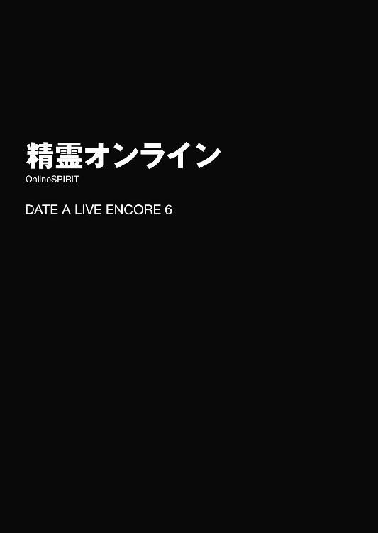
「従僕よ刮目し静聴せよ！ 電子の海にたゆたいし我が半身が汝の力を求めている！ 疾く現世の義骸を脱ぎ捨て壱と零の理想郷へと身を投じるがよい！ 剣の洗礼が汝を待つだろう！」
「............、なんて？」
とある日。五河家のリビングで士道が美九とお茶をしていると、突然現れた耶俱矢がそんなことを言い出した。
長い髪をアップに纏めた、勝ち気そうな少女である。モノトーンなのに目がチカチカするようなゴシックパンクスタイルの装いにシルバーのアクセサリーをちりばめ、やたらと格好いいポーズを取っていた。
日頃から仰々しい言い回しが目立つ耶俱矢ではあるが、今日の口上は一段と難解だ。どうにか言葉を解読しようと、耶俱矢の言葉を頭の中で復唱するように思い浮かべる。
すると、まるでそんな士道の思考を察したかのようなタイミングで、耶俱矢の後ろから、耶俱矢と瓜二つの顔をした少女がひょっこりと顔を出した。
「翻訳。つまり耶俱矢は、ゲームを一緒にやろうと言っているのです」
耶俱矢の双子の姉妹・夕弦である。顔の造作は耶俱矢とほとんど同じなのだが、髪型と表情、そして神の悪戯としか思えない胸部装甲における衝撃吸収率の差が、二人の違いを明確に表していた。
「ゲーム？」
「ふ、物質世界の住人たちの間では、斯様な名でも呼ばれているらしいな」
耶俱矢は不敵に微笑むと、そのままリビングに入ってきてソファに腰掛け、バッ！ と格好良く片足を振り上げて足を組んだ。
「ひぐぅ！」
が、その際、テーブルの縁に足の小指を強かに打ち付けた。
耶俱矢が涙目で足を抱える。士道は額に汗を滲ませながら頰をかいた。
「おいおい、大丈夫か？」
「きゃー！ 大変ですー！」
すると、士道の向かいに腰掛けていた美九が甲高い声を上げて立ち上がり、耶俱矢の足をさすり始める。
「ほぉら、痛いの痛いの飛んでけー。すぅーりすりすり、すぅーりすりすり」
「あ、いや、もう大丈夫だから......えっ、ていうかなんで靴下脱がすの？」
「大丈夫ですよー。これくらいツバつけておけばすぐ治りますからねぇー」
「それって切り傷擦り傷の話じゃないの!?」
耶俱矢が悲鳴じみた声を上げ、慌てて足を引っ込める。
士道はそんな相変わらずなやり取りに苦笑すると、肩をすくめながら問いを発した。
「で、ゲームをしにきたって？ 別にいいけど、何をやるんだ？ やっぱり格ゲーか？」
言いながら、テレビ台の中に収納されたゲーム機を一瞥する。
もともと五河家にあったものではあるけれど、最近使用するのはもっぱら、遊びに来た精霊たちだった。特に勝負好きの八舞姉妹は、よく対戦ゲームで白熱しているのである。
しかし。耶俱矢は不敵に微笑むと、「ちっちっち」と指を振ってみせた。
「否。否である！ 今宵御主等を誘いしは──これよ！」
そして元気よくそう言うと、手にしていた鞄の中からノートパソコンを取り出し、その画面を士道と美九に向けてみせた。
「ん？ ポラリス・オンライン......？」
士道は画面に顔を近づけながら、そこに表示されていたタイトルを読み上げた。
「へえ、オンラインゲームなんかやってるのか、二人とも」
「応とも！ 女神が世界を救えと五月蠅いものでな」
「肯定。やってみるとなかなか面白いものです」
士道の言葉に、八舞姉妹が首肯する。すると、先ほど耶俱矢から剝ぎ取った戦利品に頰ずりしていた美九が、不思議そうに首を傾げてきた。
「オンラインゲーム......名前はよく聞きますけど、それってどういうものなんですかー？」
「ああ、要はインターネットを通して、たくさんの人が一つの世界で一緒に遊べるゲームだよ。まあ俺もそんなに詳しくはないんだが......」
士道がぽりぽりと頭をかきながら言うと、それを補足するように耶俱矢と夕弦が言葉を継いだ。
「そう！ つまり御主等を、我がパーティー『リッターオルデン』の一員として迎えようということだ！ 心躍る冒険の日々への誘いである！ 栄誉に噎び泣くがいい！」
「補足。最初はゲーム内でメンバーを募集しようとしていたのですが、耶俱矢がこの調子でチャットをしたところ、急に人が離れていきまして」
「ち、違うし！ 私のレベルに達してない奴らをふるいにかけただけだし！」
夕弦の言葉に、耶俱矢がたまらず反論する。士道はいろいろと察して「あー......」と苦笑した。
するとそんなやりとりを見てか、美九がにっこりと微笑む。
「でも、皆さん一緒にゲームの世界で冒険できるなんて楽しそうですねー」
「まあ、確かにな。そのポラリス・オンラインっていうのは一体どんなゲームなんだ？」
士道が尋ねると、夕弦と攻防を繰り広げていた耶俱矢がこちらに顔を向けてきた。
「え？ ああ......いわゆるＭＭＯＲＰＧよ。最初に自分の分身であるキャラクターを作って、それを操作してファンタジーの世界を冒険するの」
「へぇ、キャラを自分で作れるのか」
「うん。最初からキャラグラフィックが用意されてるゲームもあるけど、ポラリスはわりと細かく設定できるわよ。ゲームの自由度も結構高め。一応簡単なストーリーは用意されてるけど、どっちかっていうと仲間と組んでクエストをこなしたり、家を建ててファンタジー世界の暮らしを楽しんだりって方がメインの楽しみ方かも」
「なるほどな。耶俱矢たちはどっちを重視してるんだ？」
「どっちもやってるけど、やっぱクエスト。くく......如何に平穏を望もうとも、我が闇の波動は戦乱を引き寄せてしまうもの！」
今まで普通に喋っていた耶俱矢が、急に設定を思い出したように格好いいポーズを取る。士道はあははと苦笑しながら言葉を続けた。
「じゃあ、俺と美九はおまえらのパーティーに入って、クエストの手伝いをすればいいわけだ」
「首肯。そういうことです。ですが、それだけではありません」
「え？ どういうことだ？」
夕弦の言葉に士道が首を捻ると、耶俱矢が「くっくっく......」と不敵な笑みを漏らし、パソコンを操作した。
そして、キャラクターが持っている道具一覧の中から、メモ帳のようなものを表示させる。──中に、見慣れない単語や、意味不明な数字がたくさんしたためられたそれを。
「これは？」
「説明。『手紙』です。要は好きな言葉をしたため、別のキャラクターに手渡すことのできるアイテムなのですが──」
「くく、数日前、我が魔性の力に誘われ、魔王のもとよりこの予言書が舞い降りたのだ」
「解説。回復アイテムを採集していたところ、耶俱矢のキャラがずっこけてしまい、偶然そこに埋まっていたこれを掘り起こしたのです」
「ちょ、夕弦っ！」
耶俱矢がまたも慌てて夕弦の口を塞ぎにかかる。が、夕弦はそれをひらりとかわした。
「......で、一体なんだ、これ」
「え？ ああ──そうそう。くくく、よくぞ聞いた。この署名を見るがよい。これこそは、古の勇者が残した伝説の武具の在処を示す暗号文である！」
「伝説の武具？ ああ、そういうイベントがあるのか？」
士道は納得を示すようにうなずいた。オンラインゲームはその性質上、どうしてもキャラの成長度やストーリーの進行度に差が出てしまう。プレイヤーを飽きさせないため、また新規プレイヤーを獲得するために、新たなクエストを追加したり、イベントを定期的に開催したりするという話だ。
しかし。耶俱矢と夕弦は同時に頭を振った。
「ふっ、違うぞ士道。これはそんなものではない。──『本物』だ」
「本物？ って......どういうことだ？」
「解説。実はこれを作ったのは運営ではなく、一プレイヤーなのです。時代からの伝説的プレイヤー【ファティマ】。数年前、最強の座を極めた彼は、それまでに集めた財宝や限定アイテムを、世界のどこかに隠したと言われているのです」
八舞姉妹が、情感たっぷりにそう語る。その様はまさしく、宝を求めるトレジャーハンターといった風情である。なるほど、ここまで入り込めたなら、ゲームもさぞ楽しいことだろう。
「なるほど......で、耶俱矢が見つけたそれが、その財宝のうち、武器の在処を示していると」
「そういうこと！」
「補足。偶然とはいえ、せっかく手に入れた手がかりです。早速探索を開始しようと思ったのですが、もしものときに備えて、パーティーにサポートメンバーを増やそうということになったのです」
「ふぅん......」
士道は小さく喉を鳴らしながらあごをさすった。なるほど、面白そうな話ではある。......まあ、その伝説を聞きつけた誰かが、イタズラでそれっぽい文書を作って埋めておいただけ......という可能性の方が高そうではあったが、これだけ宝探しを楽しんでいる二人にそんなことを言うのも無粋だろう。
「サポートか......それって、俺たち初心者でもできるもんなのか？」
「うん。操作はそんなに難しくないし、パソコンとネット環境さえあれば誰でも。......やってくれるの!?」
士道の言葉に、耶俱矢がパァッと表情を輝かせる。士道は「ああ」と首肯した。
今日はこれといって用事があるわけでもなかったし、何よりこんなにも嬉しそうな顔をされては、今さら嫌とは言えなかった。
「んじゃ、準備するか。美九もやるだろ？ 確か母さんが昔使ってたパソコンがあったはずだから、持ってくるよ」
「はい、是非ー！」
美九がにっこりと微笑みながら言ってくる。士道はそれに返すように小さくうなずいてから席を立ち、二階へと上がっていった。
◇
「ホントにじょうずだにゃあ。略して本条二亜ちゃんデース！」
「......は？」
扉を開けるなり発された声に、琴里は目を点にしてその場に立ち尽くした。
琴里がいるのは天宮市内にあるタワーマンション、その一八階に位置する部屋の前である。
ここを訪れた理由は単純。この部屋の住人である本条二亜に呼び出されたからだ。
そう。ちょうど今琴里の目の前で、猫耳ヘアバンドと尻尾のアクセサリーを着けながらポーズを取っている眼鏡の少女に。
「............」
数秒。琴里は今目の前で起こっている事態を把握すると、無言で部屋の扉を閉めた。
「ちょっちょっちょい待ちー！」
と、琴里が何事もなかったかのようにその場を去ろうとしていると、慌てた様子で二亜が扉を開いてきた。
「もー、いきなりスルーとか冗談きついよ妹ちゃーん」
二亜が腰をくねらせて尻尾をふりふりしながら言ってくる。そのたび、首輪についていた鈴がチリリンと澄んだ音を奏でる。琴里は、その仕草と文字通りの猫なで声に少しだけイラッとしながら腕組みした。
「それはこっちの台詞よ。──まさか、そのコスプレ披露するためだけに私を呼び出したっていうの？」
「まっさかー。まま、とりあえず上がってよ。もう準備はできてるからさ」
「準備？」
首を傾げながら問うと、二亜は琴里を部屋の中に促しながら答えてきた。
「うん。ちょーっとばかし困ったことになっちゃっててさ。一人でなんとかするつもりだったんだけど、どうしても限界がきちゃってねぇ。だから〈ラタトスク〉司令の妹ちゃんと──」
言いながら二亜が廊下を歩き、リビングの扉を開く。
するとそこに、見知った顔の少女が一人、座っていることがわかった。
「──折紙？」
琴里は目を丸くしながら少女の名を呼んだ。そう。そこにいたのは、士道のクラスメート・鳶一折紙だったのである。
「そ。なんでもできそうなオリリンにＳＯＳしたってわけ」
「ふぅん......で、何のために私たちを呼び出したの？」
琴里が問うと、二亜は椅子に腰掛け、ニッと唇の端を上げながら言葉を続けてきた。
「突然なんだけど、二人とも......オンラインゲームってやったこと、ある？」
「......オンラインゲーム？」
琴里はあごに手を当てながら首を捻った。別に言葉の意味がわからなかったわけではない。実際に遊んだことはないものの、そういったゲームがあることは知っていた。どちらかというと、二亜がいきなりそんなことを言い出した理由がわからなかったのである。
が、そんな琴里とは対照的に、折紙は表情を変えぬままうなずいてみせた。
「ファーストパーソン・シューター──いわゆるＦＰＳなら、銃の訓練を兼ねてやったことがある」
「おっ、さすがオリリン。ていうか本職さんも訓練に使うんだ。やっぱ効果あるの？」
「銃の腕が上がることはあまり期待できない。でも、初心者はそれ以前に、人間に向かって引き金を引くのを躊躇うことが多い。その拒否感を麻痺させるのには有効」
「ほー、なぁるほど」
「とはいえ、少なくとも日本では、本職といっても人間に向けて銃を撃つことはほぼない。その欲求を満たすためにゲームをしている隊員もいた」
「な、なぁるほど......」
淡々と述べられた折紙の言葉に、二亜が頰に汗を垂らしながら苦笑する。いつも飄々とした彼女には珍しい反応だったが......まあ仕方あるまい。
しかし二亜は、すぐ気を取り直すように首を振ると、机の上に置かれたパソコンの画面を示すように手を掲げてみせた。
「まあそれはともかくとして。──実はあたし、今とあるオンラインＲＰＧをやってるんだけどさぁ......二人にも協力してほしいのよ」
「協力......って、一緒にゲームをしろってこと？」
「うんまあ、簡単に言うとそう」
二亜が、ニカッと笑いながら言ってくる。琴里ははぁと大きなため息を吐いた。
「深刻な文面を送ってくるから何事かと思えば......」
「あっはっは、ごめんごめん。ピンチを演出したくなるのが作家の性っていうか？」
言いながら、二亜が「......どうかな？」と二人の反応を窺うように上目遣いになってくる。装着されたままの猫耳と猫尻尾のせいか、とんでもなくあざとく見えた。
「まあ......いいわよ。精霊の希望は可能な限り叶えるのが〈ラタトスク〉だしね」
「構わない。約束のものさえもらえれば」
琴里に続くように、折紙が淡々と答える。あまりに気になるその言葉に、琴里は眉をひそめた。
「......約束のもの？」
「あーうん、少年とオリリンのオリジナル同人誌（18禁）ね。用意しとく」
「未成年をなんてもので釣ってるのよ!?」
あまりにひどい交換条件に、思わず叫びを上げる。......だが何というのだろうか、この上なく折紙らしいというか、彼女がなぜここにいるのかがものすごく腑に落ちた琴里だった。
「......はぁ、まぁいいわ。──でも、オンラインゲームって結構時間かかるんでしょ？ 私も暇ってわけじゃないから、そんなに長くはつきあえないわよ？」
「うん、そこは考えてるから大丈夫。別に、クリアが目的ってわけでもないしね」
「え？ じゃあ一体何がしたいのよ。協力して......って言うからには何か目的があるんでしょう？」
琴里が言うと、二亜は緩んだ表情を少しだけ引き締めながら唇を動かした。
「ん......まあね。実は今、このゲームの中にかなり質の悪いＰＫがいてさ」
「ＰＫ？」
「プレイヤーキラー。つまりゲーム内で、他のプレイヤーキャラクターを攻撃・殺傷する悪質なプレイヤーのこと」
琴里の質問に答えたのは、折紙だった。二亜が「そそ」と首肯し、あとを続けてくる。
「ぶっちゃけ、あたしもかなりむかっ腹立っててさ。どうにかしてそいつを懲らしめてやりたいわけよ。なんだけど......一人ではどうしようもないことが多くてね。ゲーム内で仲間を募ることも考えたんだけど、やっぱり対面しながらの連携に勝てるものはないし」
「ふぅん......ってことはよっぽど強いのね、そのＰＫ。どういうキャラクターを使ってるの？」
「んー......」
琴里が問うと、二亜は難しげな調子で眉をひそめると、そんなうなり声を上げた。
「え、何その反応。まさか、何もわかってないなんて言わないわよね」
「いや、んっとね。一応、キャラクター名は【ファティマ】。レベルは99。職業は最上級職・ワールドブレイカーなんだけど......」
「なんだ。わかってるんじゃないの。じゃあそのキャラを捜せばいいのね？」
「うーん......でも、そう簡単にもいかないんだよねぇ」
「どういうこと？」
二亜の言葉に、折紙が返す。二亜はぽりぽりと頰をかきながら続けた。
「『シャドウカーテン』ってレアアイテムがあるんだけど、それを使うと、自分のステータスを隠蔽、改竄して他のプレイヤーに見せることができるんだ。そして、恐らくそいつはそれを使って自分の本来のキャラクター名を隠してる。だから、馬鹿正直に【ファティマ】を捜しても意味はないってこと。きっとシリアルキラーよろしく、人畜無害な顔して日常生活を送ってるよ」
「なるほど......って、随分性悪なアイテムがあったものね。そんなの、運営が辻斬を推奨してるみたいじゃない」
琴里は渋面を作りながら肩をすくめた。ステータスを隠蔽できるということは、自分の悪名を広めずに悪事を行えるということだ。
「ま、当たらずといえども遠からずってところだねぇ。自由度の高さがポラリス・オンラインの売りだし。そもそもプレイヤー同士が攻撃を当て合うことができるっていうシステムな時点で、ＰＫを排除するっていうのは不可能なんじゃないかな。可能に作られている行為を運営に咎められるってのもおかしな話っしょ？」
「何よ、やけに敵の肩を持つじゃない。ＰＫが許せないんじゃなかったの？」
琴里が言うと、二亜は困ったような顔をしながら肩をすくめた。
「んー......この【ファティマ】は特別っていうか、ちょっとね」
「......？」
歯切れの悪い二亜の言葉に、琴里は首を傾げた。
が、それについて質問を投げるより早く、折紙が顔を上げる。
「──それより、この後の方針を確かめたい。何の手がかりもなしに捜索に入るということ？」
「うんにゃ、ないことはないんだ」
言って、二亜が机の引き出しから、一枚の紙を取り出してくる。琴里は、折紙と一緒にそれに視線を落とした。
「これは......地図？」
そう。二亜が寄越してきたのは、一枚の地図だったのだ。どうやら、このゲームの世界に存在する大陸の地図を印刷したものらしい。数ヶ所、ペンで×印がつけてあり、その周りに細かいメモ書きがしてあった。
「この印は一体、何」
「ん、【ファティマ】が現れた場所。パッと見ただけじゃわかんないと思うけど、実はちょっとした法則性というか、共通点があるんだよね」
「っていうことは......」
「うん。次に【ファティマ】が現れそうなポイントには、何ヶ所か当たりを付けてある。そこに罠を張ろうと思うんだ」
二亜が自信ありげにうなずきながらそう言ってくる。琴里は「なるほど」と首肯した。
「わかったわ。じゃあ早速始めましょうか。そのポイントってどこにあるの？」
が、琴里が促すように言うと、二亜はキョトンと目を丸くした。
「いやいや、何言ってるの？ まだ行かないよ？」
「え？」
「まずは自分の分身となるキャラクターを作らないとね。それに、レベル１のままじゃ話にならないから──ちょっとは鍛えていかないと」
二亜が、何やら楽しそうに唇の端を上げた。
◇
「──ふふ、上手くできたな、四糸乃！」
「はい......！ 七罪さん、喜んでくれるといいんですが......」
『間違いないよー。なんならもー喜びすぎて卒倒しちゃうんじゃないかなー！』
十香と四糸乃、そして四糸乃の左手に装着されたウサギのパペット『よしのん』は、そんな会話を交わしながら、マンションの廊下を歩いていた。
五河家の隣に聳える、〈ラタトスク〉所有のマンションである。士道が力を封印した精霊たちを住まわせるための住居であり、十香と四糸乃もまた、ここの住人であった。
が、今二人が歩いているのは自分たちの部屋がある階層ではなく、このマンションの最上階に位置する廊下だった。
理由は単純。十香と四糸乃は、先ほど焼いた手作りクッキーを手土産に、この階に住む七罪の部屋に遊びに行くところだった。
「そういえば、私は七罪の部屋に行くのは初めてだな。一体どの部屋なのだ？」
「一番奥の部屋です。あ──あそこですね」
四糸乃の言葉に合わせるように、『よしのん』が丸っこい手で前方にある扉を指し示した。
「ふむ」
十香はその前まで至ると、扉の横にあるチャイムを鳴らした。扉の向こうから、呼び出し音が聞こえてくる。
だが。数秒待っても、七罪は現れなかった。
「む？ おかしいな。いないのか？」
それから何度かチャイムを鳴らしてみるも、何もリアクションはなかった。
しかし、何とはなしにドアノブを捻ってみると、ガチャリと音を立てて扉が開く。十香と四糸乃は目を丸くしながら顔を見合わせた。
「開いてますね......」
「外出しているわけではない......ということは、寝ているのか？」
二人が困惑した表情をしていると、『よしのん』がパタパタと手を振ってきた。
『開いてるなら入ってみよーよー。確かめた方が早いってばー』
「むぅ、しかし人の部屋に勝手に入るのはよくないのではないか......？」
「そ、そうだよ、よしのん......」
『でもでもぉ、もし七罪ちゃんが急病で倒れてたり、ガス漏れ事故が起こってたり、世を憂えて首を吊ってたりしちゃったらどうするー？ 今なら助けられるかもよー？』
「なっ──!?」
「そ、そんな......！」
十香と四糸乃は息を詰まらせると、再び視線を交わすと同時、こくりとうなずいた。そして意を決して扉を開き、部屋の中へと入っていく。
「七罪！ 無事か、七罪！」
「七罪......さん！」
名を呼びながら廊下を進んでいき、勢いよく寝室の扉を開ける。
すると。
「......、──へっ!?」
ヘッドホンをしながら椅子の上に膝を立て、パソコンに向かっていた七罪が、素っ頓狂な声を発しながら振り向いてきた。
扉を開けられてようやく十香たちの存在に気づいたのだろう。七罪がヒッと息を詰まらせ、パソコンの画面を隠そうとする。が、慌てていたためかバランスを崩し、そのまま椅子ごと派手に転げてしまった。
「七罪っ!?」
「大丈夫......ですか？」
「あつつ......う、うん」
七罪はボリュームのある髪をモッフモッフとかきながら身を起こし、二人に視線を寄越してきた。
「ど、どうしたの二人とも......」
「あ、あの......すみません。勝手にお部屋に入っちゃって。七罪さんの応答がないから、心配になってしまって......」
「へっ？ あ、いや、それは別にいいんだけど......ていうかむしろなんかホントにごめんなさい。私のせいで四糸乃と十香をこんな汚泥の中に踏み込ませてしまってすみませんしにます」
「な、七罪さん......」
『またまたー、七罪ちゃんたら相変わらずなんだからぁ』
『よしのん』が軽い調子で笑いながら、七罪の頭をポンポンと叩く。七罪は躊躇いがちに顔を上げた。
「あ......そうだ。七罪さん、よかったら、これ」
と、四糸乃が思い出したように、手にしていた包みを七罪に差し出す。
「へ？ な、なに？」
「クッキー......です。十香さんに教えてもらって、焼いてみました。お口に合うといいんですけど......」
「ひっ、ひぇぇぇぇ......！」
四糸乃が言うと、七罪は日光を浴びた吸血鬼さながらにその場にくずおれた。
だが、受け取らないのも無礼に当たると考えたのか、やがて顔を伏せたまま、小刻みに震える両手を四糸乃に差し出す。その姿は、王より望外の褒賞を賜る平民を思わせた。
「ありがとう......で、でもホントに私なんかが貰っちゃっていいのかしら」
「はい、もちろんです」
「か、家宝にするわ......一生大事にするから......」
「あの......できれば食べてもらえると......」
四糸乃があははと苦笑する。七罪は恐縮しきって、さらに「ははあー」と頭を深く垂れた。
少々オーバーではあるものの、一応喜んではくれているらしい。十香は四糸乃と七罪を微笑ましげに見守ったあと、そういえば、とパソコンの画面の方に目をやった。
「七罪は一体何をしていたのだ？ これは......ゲームか？」
「......っ！ あっ、そ、それは......」
十香の言葉に、七罪が狼狽の声を上げる。しかし、もう画面を見られてしまっていることを察して観念したのか、先ほどのように慌てることはなく、諦めたように大きく息を吐いた。
「......笑いたければ笑いなさいよ。せっかくの休日に部屋で一人ネトゲやってて来客にも気づかないとか私にお似合いでしょ。あは、あははははは......」
「ネトゲ？ なんだそれは」
「......ああ、たくさんの人が一緒にプレイできるゲームのことよ。......って言っても、私パーティーとか組むの苦手だから、一人で家建てたり、畑耕したりしてるだけだけど......わりと箱庭ゲー好きだから、熱中しちゃって」
「家......この家、七罪さんが造ったんですか？」
四糸乃がパソコンの画面を覗き込み、驚いたように目を丸くする。それもそのはず、画面の中には、見事なログハウスが映し出されていたのだから。
「あ......う、うん。このゲーム、ブロックメイクＲＰＧみたいに、素材集めて自由に組み替えられるから、ある程度自分で好きなもの作れるのよ。それに、作物を掛け合わせて新しい品種を作ったりもできるから、それを原料に新しいアイテムを作ったりして......」
と。そこで七罪は言葉を止めた。
恐らく、気づいたのだろう。十香と四糸乃の目が、ものすごく興味深そうにキラキラ輝いていることに。
「......えっと......、二人も、やってみる？」
「うむ！」
「はい......！」
躊躇いがちな七罪のお誘いに、十香と四糸乃は元気よく答えた。
◇
「──ええと、これでいいのかな？」
二階から二人分のノートパソコンを持ってリビングに戻ってきた士道は、耶俱矢と夕弦の指示に従ってゲームをインストールし、スタートのアイコンをクリックした。
すると画面が暗転し、下から文字がせり上がってくる。
内容は、まあよくあるファンタジーゲームの導入である。簡単に言うと、世界を危機から救うため、女神が士道たちプレイヤーをこの世界に呼び寄せた......という物語だ。
そして一通りストーリーが説明されたあと、画面に簡素な服を着たキャラクターの姿が映し出された。横に『性別』『髪型』などの様々な項目が表示されており、それを弄ることによってキャラクターの姿が変わっていく。
「なるほど、これで好きなキャラを作るってわけか。──あ、そういえば、耶俱矢と夕弦はどんなキャラを使ってるんだ？」
「ん？ 私たち？」
「返答。ですか？」
耶俱矢と夕弦は順番に首を傾げると、手元のノートパソコンを士道たちの方に向けてきた。
【幻夜】レベル38。性別：男。職業：ダークパラディン。
【柚子】レベル38。性別：女。職業：サイレントハンター。
それぞれのモニタに、それぞれのキャラクターが映し出される。夕弦のキャラはどことなく夕弦の面影がある狩人姿の少女だったのだが、耶俱矢の方は、見るからに凶悪そうな漆黒の鎧を着た、長身の青年だった。
いろいろとツッコミどころはあるのだが、とりあえず士道は最初に気になった点を尋ねてみることにした。
「ええと......この、これ。耶俱矢のキャラの名前の両端にある記号、なんだ？」
言って、『』のマークを指さす。すると耶俱矢は、得意げに胸を反らしてみせた。
「くく、気づいたか。これこそは我が名の言霊を具象せし漆黒の十字。魔と闇に魅入られし戦士のみに許された──」
「説明。『ダガー』と打って変換すると出てきます」
「あ、ホントだ。こんな記号あったんだな」
「そっちから聞いたんだから最後まで聞いてくんない!?」
耶俱矢が机をバンと叩きながら叫んでくる。士道は苦笑しながらすまんすまんと謝ると、自分のモニタに視線を戻した。
そして、キャラの髪型や顔のパーツなどを弄り、自分の分身を作り上げていく。
「へぇ、なんかこれ弄ってるだけでも面白いな。モンタージュを作ってるみたいだ」
「でしょ。......あ、そうだ。キャラは自由に作っていいけど、職業は回復系と魔法攻撃系にしてくれる？ 私たち両方物理メインだからさ」
「ん、わかった。美九はどっちがいい？」
士道がちらと視線をやりながら問うと、美九はあごに指を一本当てながら答えてきた。
「そうですねー。魔法で派手に決められる方でお願いしますー」
「オッケー。じゃあ俺はこのクレリックにするか」
言いながら職業を選択する。キャラの着ていた簡素な服が、白い修道服に変化した。
そして残った要素を設定し、大体の形を作り終える。
【シード】レベル１。性別：男。職業：クレリック。
「よし、まあこんなところか。ええと、あとはこれで登録すれば──」
と。ちょうどそこで玄関のチャイムが鳴り、士道は顔を上げた。
一瞬琴里や他の精霊たちかと思ったが......違う。彼女たちならば、わざわざチャイムなど押さずに入ってくるだろう。
「宅配便かな......？ ちょっと見てくる」
「はいー。いってらっしゃーい」
美九が手をヒラヒラ振って見送ってくる。なぜかその唇が楽しげな笑みの形になっていたのだが......士道はさほど気にせず玄関へと歩いていった。
突然の来客は、士道の予想通り宅配便だった。伝票にサインをして荷物を受け取り、耶俱矢たちが待つリビングへと戻っていく。
「悪い悪い、待たせたな」
言いながら士道が自分のノートパソコンの前に座ると、耶俱矢、夕弦、美九はなぜかやたらといい笑顔を作りながら首を横に振ってきた。
「かか、気にするでない」
「首肯。とても有意義な時間でした」
「さ、だーりん。私ももうキャラを作りましたから、早速始めましょうー！」
「？ あ、ああ......」
なんだか妙に楽しそうな三人の様子に首を捻りながらも、士道はモニタに視線を落とした。
と、そこでふと違和感を覚える。確か士道はキャラクターメイクの画面を表示したまま席を立ったはずだったのだが、今モニタに映し出されているのは、可愛らしいキャラクターたちが行き交う中世風の街並みだったのである。
一定時間操作をしていなかったため、デモ映像でも始まったのかと思ったが──違う。その画面の中央には、パーティーと思しき四人のキャラクターが揃っていたのである。
【幻夜】レベル38。性別：男。職業：ダークパラディン。
【柚子】レベル38。性別：女。職業：サイレントハンター。
【ミルク】レベル１。性別：女。職業：メイジ。
そして──
【しおりん】レベル１。性別：女。職業：クレリック。
「な......ッ!?」
自分の操作に合わせて動くキャラクター【しおりん】を見て、士道は息を詰まらせた。
「ちょ、ちょっと待て！ なんだこれ！ 俺が作ってたキャラと違うぞ!?」
目をまん丸に見開きながら声を裏返らせる。それはそうだ。先ほどまで作っていた少年キャラクターが、なんとも可愛らしい女の子に変貌していたのである。
するとそれを見てか、犯人がにっこぉぉぉ、ととてもいい笑顔を向けてきた。
「あっ、だーりんがお忙しそうだったので、代わりに作っておきましたぁ！」
「いや明らかに変わりすぎだろこれ!?」
士道が叫びを上げると、耶俱矢と夕弦が堪えきれないといった調子で笑い出した。
「ははははっ！ やられたわねー、士道」
「抱腹。とはいえ性別で能力に差は出ないので、あまり気にしなくても大丈夫です」
「って言ってもよ......これ、ゲーム内でチャットとかもするんだろ？ これ、いわゆるネカマってやつになるんじゃ......」
「大丈夫ですよぉ。だーりんは男の子である点を除けば女の子なんですからぁ」
「意味がわからない!?」
なぜか自信に満ちあふれた美九の言葉に、思わず声を上げる。すると、ひとしきり笑い終えた耶俱矢が、宥めるように肩をぽんぽんと叩いてきた。
「まぁまぁ、どうしても気になるなら、『転生の宝珠』ってアイテムを使えば、ステータスそのままでキャラメイクやり直せるから」
「......そうなのか？」
「首肯。ストーリークエストをクリアすると手に入るらしいです」
「長くね!?」
ストーリーとやらがどれくらいの長さかは知らないが、それは一通り【しおりん】としての人生を生きたあとになるのではないだろうか。......というか、耶俱矢と夕弦の目的が宝探しである以上、その機会は巡ってきそうになかった。
とはいえ、また最初からゲームを始めるのも手間である。士道ははあとため息を吐くと、クレリック【しおりん】を操作し始めた。歩く姿がやけに可愛らしかった。
「仕方ない......行くか」
「その意気やよし！ いざ征かん、宝物への道！」
「同調。おー」
「はりきっていきましょー！」
画面の中で、【幻夜】と【柚子】が元気よく手を振り上げる。どうやらコマンドを選択することでキャラクターに特定のアクションを取らせることができるらしい。
「えっと......」
メニューを開き、コマンドを選択。耶俱矢たちから一拍遅れて、【ミルク】と【しおりん】も手を上げた。
◇
『くそ......っ！ 攻撃が通らない！』
『だからまだこんなところ早いって言ったんだよ！』
『うるせえ！ 早く回復を──ぐ、ぐわぁぁぁぁぁっ！』
仄暗い古城フィールドの中に、冒険者たちの声がこだまする。
だがそれも無理からぬことであった。何しろ皆の前には、この古城の主である高レベルモンスター・ノスフェラトゥが立ちはだかっていたのだから。
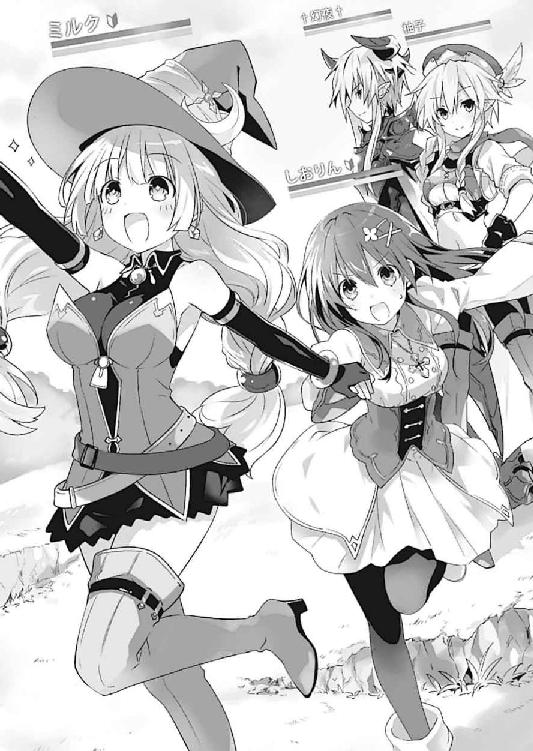
漆黒の外套を纏った巨大な吸血鬼が、強力な魔法を連発してくる。そのたび辺りに爆炎が巻き起こり、【リック】たちのＨＰをどんどん削っていった。
『ち、畜生、こんな......こんなはずじゃ......！』
パーティーのリーダーであるソードマン【リック】は、途方もない後悔に苛まれていた。
──皆、調子に乗っていたのだ。レベルが上がり、装備も整ってきたため、きっと大丈夫だろうだなんて根拠のない楽観で、こんな高難度ダンジョンの深層にまで潜ってしまった。
その結果が、これである。ボスとその眷属に囲まれ、回復アイテムも底を突き、ＭＰもなくなり、逃げることもできない。考え得る限り最悪に近い、絶望的な状況だった。
『ＧＡＡＡＡＡＡＡＡＡＡ！』
『うわぁぁぁっ！』
ノスフェラトゥの一撃が【リック】の身体を薙ぎ払う。きちんと防御をしたというのに、膨大なダメージが与えられ、ＨＰバーが一気に赤く点灯し始めた。
『畜生......ここまでか......』
【リック】は諦めるように呟いた。もはや打つ手はない。次の一撃で、【リック】のＨＰは完全に尽きてしまうだろう。
だが、次の瞬間。
『──ディバイン・フェンサー』
そんな呪文が唱えられたかと思うと、一瞬薄暗い古城の中がパァッと明るくなり、無数の光の刃が、ノスフェラトゥを貫いていった。
『ＧＡＡＡＡＡＡ......！』
ノスフェラトゥの巨大な身体が、黒い霧となって消えていく。突然の事態に、【リック】は呆然と目を見開いた。
『い、一体......何が......』
『はーい、いっちょあがりー』
と、何やら気の抜けたメッセージが表示される。それと同時、フィールドに三人のキャラクターが姿を現した。
【アニー】レベル80。性別：男。職業：ホーリーナイト。
【トリコ】レベル１。性別：女。職業：ウォーリア。
【オリオン】レベル１。性別：男。職業：シーフ。
『れ、レベル......１......？』
突如として現れた謎のパーティーに、呻くような声を発する。
しかし、当の彼らは【リック】たちに構うことなく会話を交わしていた。
『無茶するわね......こっちはレベル１よ？』
『大丈夫大丈夫。攻撃にさえ当たらなきゃ死なないって。それにほら、今のでそこそこ経験値入ったっしょ？』
『──一気にレベル10になっている』
『うそ。あ、ホントだ。スキルポイントとかいうのいっぱい入ったんだけど、どうするのこれ』
『あー、まああとで割り振るから、まだ放っておいていいよ。さ、んじゃもう一周しよっか。とりあえずレベル30まで上がったら上級職にクラスチェンジして、そっからはあたしが秘蔵してるドーピングアイテムで強化ね。ついでに道中例のポイントも通るから、トラップも仕掛けとこー』
『......いいのかしらね、こういうの』
『大切なのは過程ではなく結果。手早く済むに越したことはない』
『うん、まあ、そうなんだろうけど、なんか......』
そんな緊張感のない会話を交わしながら、謎のパーティーがその場を去っていく。
『な、なんだったんだ......一体......』
【リック】はしばしの間呆然としたのち、ぽつりとそう呟いた。
◇
「......えっと、じゃあ、簡単な説明を始めます」
七罪はコホンと咳払いしながら、十香と四糸乃の方を向いた。するとパソコンの前に座った二人が、「お願いします！」と頭を下げてくる。......なんだか妙にむず痒くなってしまう七罪だった。
とはいえ、今二人にゲームのレクチャーをすることができるのは七罪のみである。気を取り直すようにもう一度咳払いをする。
「えっと、まず家の造り方だけど......方法は、大きく分けて二つあるわ。簡単なのは、『設計図』を使うことね。これは、必要な素材さえ揃っていれば、自動的に家を造ってくれるアイテムなの。初心者は、これで基本的な建物を造って、内装を凝るだけでも十分楽しめると思うわ。クエストをクリアしていくと、もっと広い建物の設計図も手に入るし」
「ふむ......この『ログハウスの設計図』というやつか」
「七罪さんのお家もこれで造ったんですか？」
「えっと、ううん......この家は、私が一から造ったやつ。──それがもう一つの方法よ。素材を自由に組み合わせて、好きなものが造れるの。まあ、少しコツが必要だから、これは操作に慣れてからでいいと思うわ。まずは設計図を使って、好きな場所に家を建ててみましょ」
「うむ！」
「はい！」
「じゃあさっそく家を──といきたいところだけど、その前に、まず整地をしないとね。めぼしい場所を見つけたら、そこに生えてる木や草を刈り取ったり、岩を砕いたりして家を建てられる平地を作るの。......ま、やってみた方が早いわね。二人とも、適当な木を伐ってみて」
「おお、わかったぞ！」
「やってみます......！」
七罪の言葉に二人が元気よく答え、ぎこちない動作でマウスを操作する。それに反応して、先ほど作った二人のキャラクターが、ゆっくりと歩き始めた。
「お、おおおおおお!?」
が、未だ操作に慣れないのか、十香のキャラがその場でくるくると回り始める。
「だ、大丈夫ですか十香さん」
「うむ、問題な──おおおおお!?」
今度は十香のキャラがその場でピョンピョンと跳びはねながら、持っていたアイテムを辺りに振り撒き始める。
「あー、あー」
さすがに見ていられなくなり、七罪は席を立って十香の方に歩み寄ると、マウスを操作してアイテムを拾い集めてやった。
「おお、ありがとうだ、七罪！」
「いや......いいけど。どうせこのエリア、私たちくらいしかプレイヤーいないし」
そう。七罪の家が建っているのは街中ではなく、人里離れた森の中である。キャラクターがどんな奇行に及ぼうと、怪訝そうな目で見られたり、キャプられて笑いものにされたりはしないのだ。
別に自然の中で生きたいとかそういった欲求があるわけではなかったのだけれど、街の中に住んでいると、不意にプレイヤーキャラクターがコンタクトを取ってくるので、心臓に悪いのである。如何に相手の顔が見えなかろうと、向こう側に生きた人間がいると思うと、どうしても気を遣ってしまうのだ。
......まあ、それならそもそもオンラインゲームなどやらなければいいという話なのだが、誰も入ってこない森の中に箱庭を作っていく生活が妙に楽しく、抜けられないでいるのが現状だったのである。
「えっと、じゃあ次は地面を掘ってみましょ。段差があるときなんかは、こうして均すの。基本は木を伐るのと一緒よ。地面にアイコンを合わせてクリックしてみて」
「こう......ですか？」
四糸乃のキャラがスコップを手にし、土を掘る。七罪は「よくできました」と言うように親指をビッと立てた。
が。
「おおおおおおおおおおお!?」
そんな叫びとともに、十香のキャラが地面へと吸い込まれていく。どうやら、自分の足下を垂直に掘り進めてしまったらしい。
「あっ、ちょ、十香ストップ！ あんまり掘りすぎると上ってこられなくなるわよ！」
「こ、これはどうすればいいのだ!?」
次いで、穴の中からポコポコと十香の持っていたアイテムが飛び出してくる。
......家を建てることができるのは、もう少し先になりそうだった。
◇
──最初の街を出てからおよそ三時間。
士道操る【しおりん】は、仲間の【幻夜】、【柚子】、【ミルク】とともに、鬱蒼と生い茂る森の中を歩いていた。
「ふぅ......結構遠くまで来たな。みんな、ＨＰは大丈夫か？」
「くく、問題ない。御主等の働き、見事であるぞ」
「同意。即席のパーティーですが、上手く回っています」
耶俱矢と夕弦が、うなずきながら言ってくる。
チュートリアルクエストをすっ飛ばし、いきなり実戦で鍛えられた【しおりん】と【ミルク】は、既にレベル10まで成長していた。もちろん万全とはいかないものの、回復、補助呪文もある程度習得しており、戦闘で傷ついた二人を癒やしたり、攻撃力や守備力を増強させたりすることができている。
魔法攻撃を主体とする【ミルク】も、火力面では【幻夜】、【柚子】に及ばないものの、全体攻撃で敵を怯ませたりなど、サポートの役割をきちんと果たせていた。
「うん、オンラインゲームってのも結構楽しいもんだな。みんなで冒険してる感じっていうのか？ こう、コンピューターを相手にするのとはまた違った趣があるというか」
「かか、そうであろそうであろ」
「誘引。もしお気に召したなら、いつでも待っています」
「はは、考えておくよ。あんまり熱中しすぎると、琴里にどやされそうだから注意しないといけないけどな」
士道は苦笑しながらそう言うと、【しおりん】たちの征く深い森に改めて視線をやった。
「──で、耶俱矢。『手紙』に記されてた位置って、どの辺なんだ？ さっきから道のないところばっかり歩いてるみたいだけど......」
「ん......ちょっと待って。えっと......この座標がここだから......もうちょっと先の──」
と、耶俱矢が言いかけたところで。
画面の中の【幻夜】一行は深い森を抜け、開けた空間へと出た。
「おお......っ!?」
「こ、ここは......」
士道は目を丸くすると、パソコンのキーを操作してカメラを動かし、辺りの風景を見回した。
森を切り拓いて作ったと思しき、広い空間である。奥の方に見事なログハウスが建てられており、その前方に、様々な作物が植えられた畑が広がっている。
世俗から隔絶された空間。それこそ世捨て人か仙人、さもなくば深い森に潜むというエルフでも住んでいそうな場所であった。
「す──すごっ！ えっ、ね、ねえ夕弦、もしかしてこれって......」
「首肯。普通のプレイヤーがこんな不便な場所に住処を造るとは思えません。しかも、『手紙』に記された座標とぴたり一致です。【ファティマ】の隠れ家とみて間違いないかと」
「やっぱり！」
耶俱矢が叫ぶと同時、【幻夜】と【柚子】がもの凄く嬉しそうに踊り出した。
可愛らしい容貌の【柚子】はまだしも、仰々しい鎧を身に着けた【幻夜】が踊り狂うのはなかなかにシュールな絵面だったのだが......まあ、無理もあるまい。その伝説のプレイヤーがどれほど凄いのかは士道にはわからなかったが、耶俱矢たちにとっては埋蔵金を掘り当てたようなものなのだろう。
「探索。では耶俱矢、さっそく」
「うん！ 座標はこの辺りだし、調べてみよっ！」
【幻夜】と【柚子】が、辺りを調べ始める。【しおりん】と【ミルク】もまた、それに倣って探索を開始した。
が、どれくらい調べた頃だろうか、【ミルク】が畑の脇を歩いていると、急に皆がいる地面が点滅しだした。
「わっ、なんだこれ？」
「！ これは......トラップよ！ 逃げて！」
だが──遅い。次の瞬間、土でできていた地面が白いフィールドに変貌し、キャラクターの自由が利かなくなった。
どうやら、トリモチのようなものらしい。全身にネバネバした物体が張り付き、服──要は装備が剝がされてしまう。
「うきゃあっ！」
「やーん！ お洋服がー！」
「不覚。やられました......！」
「おいおい、なんだよこれ......」
皆のキャラクターが、キャラクターメイクのときに着ていたインナーのみになってしまう。ステータスに表示された防御力がガクンと下がった。
「うぐ......装備剝がしのトラップね。みんな、一旦その場から離れて予備の装備を身に着けて」
耶俱矢が眉根を寄せながらそう言ってくる。士道たちはその指示に従い、予備のアイテムを装備した。
「進言。耶俱矢、これは」
「うん。こんな大仰な罠を仕掛けてるなんて......かなり臭いわね。でも、他にも何か仕掛けられてるとすると、普通に探索をするのは危険か......」
耶俱矢がふうむと唸ったのち、美九に視線をやった。
「ねえ美九、そういえばさっき、広域呪文覚えたわよね？ あれでこの辺一帯吹っ飛ばしてみてくれない？」
「お、おいおい、いいのか？ そんなことして......」
「大丈夫大丈夫！ だって【ファティマ】って、何年も前に引退したプレイヤーよ？ もう誰も住んでないって！」
「にしては随分畑が手入れされてるような......」
「フィールドに大地の加護をつけておけば、何年放置しようと収穫に最適な状態が保たれるの。上級プレイヤーにとっては初歩の初歩よ？」
「う、うーん......そうなのかなあ」
「そうそう！ そうだって！」
言って、耶俱矢が「やっちゃえ！」と美九に親指を立てる。
「了解ですー！ じゃあいきますよー」
『──ブレイク・ボム！』
美九と【ミルク】の声が重なり、【ミルク】の持った杖に光が灯る。
次の瞬間、凄まじい爆発が、森の中を蹂躙した。
数秒あと、そこにはクレーターのようになった地面が広がっていた。
爆発呪文で削られた地形の上に、アイテムのアイコンが無数に転がっている。
「むー......？」
しかし。耶俱矢と夕弦は難しげな顔を作った。
理由は単純。そこに落ちていたのは、木材や野菜、石材などの素材アイテムばかりで、財宝らしきものは見当たらなかったのである。
「おっかしいなあ。何もないってことはないと思うんだけど......美九、あっちもお願い」
「はいはーい！」
「ほ、ほどほどにしとけよ......？」
士道の声をかき消すように、再び、森に爆発音が響き渡った。
◇
「な、な、な......」
七罪は呆然と目を見開き、手を戦慄かせた。
「なんじゃこりゃぁぁぁぁっ！」
そして、七罪には珍しく大声を上げる。
しかしそれも無理からぬことだった。何しろ、十香たちの装備品を買いに街へ出ていた一時間ばかりの間に、森の中の七罪ハウスが更地どころかクレーターに変貌していたのだから。
「こ、これは......一体何があったのだ？」
「何も......なくなってます......」
十香と四糸乃が狼狽の声を上げる。七罪はギリギリと奥歯を嚙みしめながら呻くように続けた。
「たぶん......悪質なプレイヤーに見つかったのよ。それで、爆発呪文か爆弾系のアイテムでやられたんだと思う」
「そんな......なんでそんなことを」
「......理由なんてないわ。あれよ。昼休みお弁当食べる相手がいなくて仕方なく一人でトイレの個室に籠もりながらパン齧ってたら、『あれあれー？ なんか変なにおいするぞー？』とか言いながらいじめっ子が個室の扉ドンドン叩いてきたりホースで水かけてきたりするでしょ。あの心理よ。猿に論理的思考なんて求めても仕方がないのよ」
「む、むぅ......？」
十香がよくわからないといった顔で首を捻る。
だが今は、こちらの処理が先である。七罪は視線を鋭くすると、辺りに散らばった野菜や木材を集め始めた。
「おお、また作り直すのだな！」
「私たちも......手伝います！」
「......ううん。家はもうここには造らない。また別の場所を探しましょ。厄介な連中に場所がばれちゃった以上、家を造り直してもまた壊される可能性があるわ。──ここに造るのは、もっと別のものよ」
「む......？」
「別の......ですか？」
七罪の言葉に、二人はキョトンと目を丸くした。
◇
雪山エリアのボス・スノードラゴン（三周目）に止めを刺した瞬間、二亜のパソコンの方からピピッとアラームが鳴り響いた。
「......！ 反応！ 誰かがＡ地点の罠に引っかかったみたいだねぇ」
言って、二亜が琴里と折紙に視線を送ってくる。
そう。琴里たち一行は二亜の先導のもと、各地の高レベルモンスターを巡り、経験値を荒稼ぎしていたのだが......その際、通りかかったＰＫ発生予測ポイントに、前もって罠を仕掛けていたのである。
とはいえ──
「Ａ地点......ってことは、最初に通ったあの森の中？」
「そうそう。ちょっと距離はあるけど......もしかしたら当たりかもしれない。妹ちゃんとオリリンのレベルも上がったし、念のためチェックしに行こう」
「了解」
折紙が短く答える。琴里たちはすぐに雪山を下りると、元来た道を辿って、先ほど通った森の中へと舞い戻った。
「ねえ二亜......まさか罠に掛かったのって、あの家の住人じゃないわよね？」
道中、琴里は眉根を寄せながら二亜に問うた。
そう。二亜がチェックしたポイントには誰かが住み着いていたらしく、見事なログハウスと畑が作られていたのである。普通に考えれば、いつ現れるとも知れないＰＫよりも、戻ってきたそこの住人が罠に掛かってしまった確率の方が高いだろう。
「んー、まあ確かにその可能性はあるけど、一応戦闘モードに入ったキャラにしか発動しないように設定はしてあるよ。ま、そのときはそのとき。素直に謝ってＰＫに心当たりがないか聞いてみよう」
「......その質問、こっちを指さして『おまえらだー！』って言われそうなんだけど......」
そんな会話をしているうちに、琴里たち一行は目的のＡ地点に辿り着いた。
が──
「へ......？」
それを見た琴里は、呆然と目を見開いた。
それはそうだ。何しろ先ほどまで綺麗な家と畑があった空間が、まっさらな平地になってしまっていたのだから。
「な......何これ。場所は間違ってないわよね？」
狸か狐にでも化かされたかのような感覚に、琴里が啞然としていると、二亜のキャラクター【アニー】が、足を一歩前に踏み出した。
「とにかく、調べてみよう。これはマジで【ファティマ】の仕業かも......」
と。二亜がそう言いかけたところで、画面がカッと目映く輝いたかと思うと、地面が大爆発を起こし、三人のキャラクターが吹き飛ばされた。
「へ......っ？」
琴里は起こったことが理解できずに、ゴシゴシと目を擦った。
だが、そこに表示された映像が変化することはなかった。抉り取られたように消失した地面。辺りに舞う煙。そして、瀕死のキャラクター。まるで、地雷でも踏んでしまったかのような惨状である。
「な......なんじゃこりゃぁぁぁぁっ！」
それを見てか、二亜が凄まじい声を上げた。
◇
「ああもう......一体何だったのよあのトラップは......！」
森の家跡を粗方探索したのち、士道たちは耶俱矢のあとについて道を歩いていた。
耶俱矢が不機嫌なのも仕方がない。結局、森の中からは財宝らしきものは何一つ出てこなかったのだ。つまり士道たちは、貴重な装備を失わされただけだったのである。
「んー、でもそれじゃああのトラップは何だったんですかねー」
「やっぱりイタズラだったんじゃないか......？」
「くぅぅ......どこの誰か知らないけど、覚えてなさいよーっ！」
「ぐぅ......あそこなら誰にも見つからないと思ったのに......」
七罪は十香と四糸乃を伴い、新たな居住地を探しながら、悔しげに呟いた。
もしかしたら犯人が戻ってくるかもしれないと思い、ありったけの爆薬を仕込んでトラップを仕掛けておいたが......仮に犯人が爆死したとしても、この陰鬱な気分は晴れそうになかった。
「どこの誰か知らないけど......覚えてなさい......っ！」
「あー！ もー！ マジで何なのこれーっ！」
大爆発のあと。どうにか死地を脱した二亜は、苛立たしげに貧乏揺すりをしていた。
二亜のキャラクターはどうにか爆発に耐えたものの、琴里と折紙のキャラは見事に爆死してしまったため、それを生きかえらせるために貴重な蘇生アイテムを二つも消費させられてしまったのである。
「どこの誰か知らないけど......覚えてろよーっ！」
ＭＭＯＲＰＧポラリス・オンラインの世界の中で、三組のパーティーが、ほぼ同時に恨みがましい叫びを上げた。
「──人気ＭＭＯＲＰＧポラリス・オンラインを荒らし回る悪質プレイヤーキラー【ファティマ】。それを打倒するため、【アニー】は、二人の仲間とともに冒険を開始した。
しかしその最中、【アニー】たちは謎の爆発によって深刻なダメージを負ってしまう！
一体何が起こったのか。そしてそこに現れた謎の影の正体とは──!?
第二三話『友よ、我が腕で眠れ』。絶対見てくれよなっ！」
「......誰に向かって喋ってるの、二亜」
琴里は半眼を作ると、独り言と呼ぶには盛大すぎる口上を述べる二亜を見やった。すると二亜が、あははと笑いながら視線を返してくる。
「いやー、なんていうか、雰囲気？ みたいな？」
「何よそれ......っていうか別に謎の影とか現れてないし、話数とか意味不明だし、何ならそのサブタイトル、明らかに私か折紙死んでるわよね？」
「いやいや、そこはできるだけ煽っとかないと。一巻を読んだ読者が二巻も自動的に読んでくれると思っちゃ駄目だよ妹ちゃん」
二亜が注意するような口調で言ってくる。琴里ははあとため息を吐いた。
今琴里がいるのは、二亜が住むマンションの部屋だった。折紙とともに、二亜にオンラインゲームの手伝いを頼まれていたのである。
「──それで、二亜。あの爆発の原因に心当たりは？」
と、折紙が自分のキャラ【オリオン】を操作しながら言葉を発する。
「うーん、あれは爆破トラップだね。誰かがあの場所に罠を仕掛けたんだ。たぶん、あたしたちを狙って」
「それは、【ファティマ】ということ？」
「その可能性は高いねぇ。あたしが仕掛けたトラップに引っかかって怒り心頭、仕返しのために爆破トラップを......と考えると辻褄が合うし」
「なるほど」
折紙と二亜が真面目な顔で言葉を交わし合う。琴里は頰にひとすじ汗を垂らした。
「いや、あの家の主ってことはないの？ 二亜、誰かが住んでる場所に粘着トラップ仕掛けてたじゃない。それに怒って仕返しってことは......」
「んー、もしそうだとすると、家が更地になってたのはおかしくない？ 性悪ＰＫなら、トラップに引っかかった腹いせに爆裂呪文で家吹っ飛ばすくらいしそうだけど」
「うーん......まあ、そうなのかしら」
「そうだよー！ あぁもー許さないからねー！ 絶対ふん捕まえてアカウント凍結して住所氏名抜き出してネットの海に流してやるーっ！」
「その手の作業は得意。任せて」
「おお！ 頼りになるねーオリリン！」
「いやそれ普通に犯罪だから......」
琴里は半眼を作りながらため息を吐くと、話題を変えるように言葉を続けた。
「......で、私たちは今どこに向かってるの？」
「ああ、セントラルシティだよ。ポラリスの中で一番大きな街。回復したいし、アイテム補充しなきゃだし、ついでに何か情報も──っと、そうこうしてる間に見えてきたよ。あれあれ」
「ん......」
二亜に促され、琴里はカメラを操作し、キャラクターの視点に切り替えた。
すると前方に、巨大な都市が広がっているのが見て取れた。
◇
ポラリス・オンライン最大の都市、セントラルシティ。
その名の通り大陸の中心部に位置するその街は、『ポラリス』プレイヤーたちの冒険の拠点であり、生活基盤であり、憩いの地であった。
昔はここまで巨大な都市ではなかったらしいが、『ポラリス』は自分で好きな場所に建造物を造ることができるため、利便性を求めたプレイヤーたちの手によって、長い時間をかけ、大型ダンジョンもかくやという巨大都市が形成されていったのである。
そんな、運営とプレイヤーが二人三脚で創り上げた都市の一角を、奇妙な三人組のパーティーが歩いていた。
一人は、魔女のような帽子を被った長身の美女、ハイアルケミストの【クライム】。そしてそれに続くように歩みを進める二人の少女、ファーマーの【ヨシュア】とカーペンターの【カート】である。
「おお！ すごいところだな！」
「人がいっぱい......です！」
【カート】のプレイヤー・十香と、【ヨシュア】のプレイヤー・四糸乃が、パソコンの前で元気な声を上げる。
しかしながら彼女らを先導する【クライム】のプレイヤー・七罪は、注意深く画面を見つめながら、慎重にキャラクターを操作していた。
「......頭の上に名前とステータスバーがついてるのがＰＣで、何もついてないのがＮＰＣよ。できるだけ前者には話しかけないで」
「む？ なぜだ？」
十香が不思議そうに首を傾げてくる。七罪はその無邪気な反応に、「ぐっ......」と眉根を寄せながら答えた。
「......だって、ＰＣってことは画面の向こう側に本物の人間がいるのよ？ ＮＰＣみたいにあらかじめ決められた台詞じゃなくて、こっちに対応した言葉を吐いてくるのよ......!? なんでゲームやるときまで相手に気を遣わないといけないのよ......っ！」
「そ、そういうものですか......」
「むう、ではなぜこのように人がいっぱいいる街へきたのだ？」
十香のもっともな疑問に、七罪は小さくうなった。
「......仕方ないでしょ。壊された家や畑を再建するために建築用アイテムを補充しないといけないんだから」
忌々しげにそう言って、七罪は大きなため息を吐いた。
七罪はできるだけＰＣの道を塞がぬよう、通りの端を歩きながらぼやくように言った。
「必要なアイテムを買ったらすぐ移動するわよ。できるだけ人と関わり合いになりたくないし、またあの場所みたいな、誰も通らない森を探さないといけないし──」
と。
七罪はそこで言葉を止めた。画面の中の【クライム】に、不意にキャラクターがぶつかってきたからだ。
しかも、その頭上には名前とステータスバーが確認できる。ＰＣだ。
「......ッ！」
七罪はビクッと肩を震わせると、すぐさまチャットウィンドウに文字を打ち込んでいった。
『──あら、どうしたのかしら。偶然を装うにしては露骨すぎない？』
するとそのテキストを見た十香と四糸乃が、驚いたような顔をしてくる。その反応を見て、七罪は「しまった」と顔をしかめた。
「な、何よう......これは私じゃなくて【クライム】が言ってるんだからね」
「七罪さん、やっぱり凄いです」
「うむ、七罪はキーボードを打つのが速いな！」
「......あ、そっち」
七罪は拍子抜けして肩をコケさせると、はあと息を吐いて再び画面に目をやった。
が、七罪がどうこのキャラをあしらおうかと考えを巡らせていると、キャラの頭上に表示されたステータスバーがみるみるうちに減っていった。
「え......っ？」
『ぐはっ......』
キャラの全身にダメージエフェクトが生じ、血がしぶく。
一瞬あと、そのキャラがポン！ と棺桶に変貌した。──ゲームの中における、死亡表現である。
「え......な、なにこれ......」
『う、うわぁぁぁぁぁっ！』
七罪が呆然としていると、その光景を目撃してか、別のＰＣが叫びを上げる。
それはそうだ。都市はモンスターが入ってこられない安全区域。普通、死者など出るはずがない。皆の動揺ももっともだった。
するとそれに合わせるように、またも一人、ＰＣが【クライム】のもとにやってきた。
『助けて！ あいつが彼を！』
「へっ？ えっ？」
縋り付くように言われ、七罪は目を点にした。
......何だか、明らかに厄介なことに巻き込まれている気がする。七罪は深呼吸をすると、この場を面倒なく去るためにキーボードに向かった。
『悪いけれど、私急いでるの。うふふ、ごめんなさ──』
が、そのタイピングの途中で。
画面に激しい閃光が走ったかと思うと、一人のキャラクターが、【クライム】たちの目の前に現れた。
◇
「はー......凄いところだな。ここがセントラルシティか？」
都市の敷地内に足を踏み入れ、士道は感嘆の声を上げた。
今まで訪れた街とは規模の違う、あまりに巨大な都市である。建ち並ぶ建造物の数も、行き交う人々の数も段違いだ。辺りに溢れる活気と雑踏と喧騒。なるほど、敵を倒さずファンタジーの生活を楽しむだけで満足するプレイヤーがいるというのもなんとなく理解できる士道であった。
「ねー、すごいですー。それに、意外に女の子が多くて嬉しい誤算ですー。こういうゲームって男の人が多いものだと思ってましたからぁ」
士道の隣でゲームをしていた美九が、上機嫌そうに言ってくる。
すると向かいにいた八舞耶俱矢・夕弦姉妹が悪そうな笑みを浮かべた。
「くくく......その目に映るもの全てが真実だと思うと痛い目を見るぞ」
「忠告。女性キャラを使っているのが必ずしも女性とは限りません。いわゆるネカマというやつです」
「ギャ────ッ！」
二人の言葉に、美九が悲鳴を上げる。八舞姉妹が可笑しそうに笑った。
「もうもう、なんでそういうことするんですかぁ！ ひどいトラップですぅ。男の人はちゃんと男のキャラを使うべきだと思いますー！」
「......おい」
美九の言葉に、士道は半眼を作った。
それはそうだ。士道は画面の中に並んだ皆のキャラを見回した。
耶俱矢のダークパラディン【幻夜】、夕弦のサイレントハンター【柚子】、美九のメイジ【ミルク】──そして、士道の美少女クレリック【しおりん】。
見ての通り、士道のキャラクターは、少し席を外した隙に、美九たちの手によって可愛らしい女の子に改造されてしまっていたのである。
しかしながら美九は、それを覚えていないのか、自分の言ったことの矛盾に気づいていないのか、ただ肩を震わせながら世を憂うのみだった。士道は大きくため息を吐き、あとを続ける。
「それで、防具屋ってのはどの辺にあるんだ？」
そう。士道たち一行がこの街を訪れた理由は、情報収集と──失われた装備を補完するためだったのである。
伝説のプレイヤー【ファティマ】が隠したと言われる財宝。ひょんなことからその在処を記したデータを手に入れた耶俱矢と夕弦の要請でゲームを始めた士道と美九だったのだが......その財宝を探している道中、謎の粘着トラップに引っかかり、装備をロストさせられてしまっていたのである。
「ああほら、見えてきた見えてきた」
言って、耶俱矢が前方の店を示す。そこには、盾形の看板が下がった大きな商店が聳えていた。
「誘導。さあ、どうぞ」
耶俱矢と夕弦に促されるままに店内に足を踏み入れる。
店内には様々な鎧やローブなどが並べられており、冒険者と思しきＰＣたちが店内を物色していた。
「さーて、とりあえず二人は、自分の職業で装備できそうなやつ探してみて」
「ああ、わかった」
「了解ですぅ──って、あああっ！」
美九が不意に大きな声を上げる。士道は思わず目を見開いた。
「なんだ？ どうかしたか、美九」
「『祝福のビスチェ』！ これ！ これがいいですっ！」
言って美九が、ブラジャーとウェストニッパーが一体となったような、やたらとエロティックな下着を示す。しかもついでと言わんばかりに、足に装備するガーターベルトまでセットになっていた。
「おいおい......見た目で決めずにちゃんと性能を確認して......」
「これを是非【しおりん】さんにっ！」
「って、なんでだよ!? 絶対着ないからなそんなの！」
士道はたまらず叫びを上げた。いくらゲームの中とはいえ、そんな格好で表を出歩いていたらさすがに頭がおかしいとしか思えない。
と、ちょうどそのタイミングで、ピンポン、と五河家のチャイムが鳴った。
「............」
なんだか嫌な予感がして、士道は押し黙った。別に、不穏な来客の予感がしたとか、そういうわけではない。どちらかというと、美九たちの前にパソコンを残したままこの場を離れることが不安で仕方がなかったのだ。
「......一応言っておくけど、俺がいない間、パソコン弄らないでくれよ？」
「えぇ？ 何言ってるんですかぁ、そんなの当然じゃないですかー」
美九が白々しい調子で言ってくる。士道は頰に汗を垂らした。
とはいえ、チャイムを無視することもできない。士道はもう一度念押しすると、リビングを出て玄関に歩いていった。
──そして、数分後。
「だから弄るなって言ったじゃんかよう！」
リビングに戻ってきた士道は、画面を見てそんな叫びを上げた。
それはそうだ。何しろ画面内にいる士道のキャラクター【しおりん】が、件の『祝福のビスチェ』を身に纏っていたのである。
「きゃー！ やっぱりお似合いです【しおりん】さぁぁん！」
「首肯。見た目のわりに防御力も高いですし、状態異常耐性もたくさんついています。毒、麻痺、睡眠回避......ＤＢ回避？ これはなんでしょうか」
「デバフじゃない？ 弱体回避ってかなり強くない？」
「だからってこれはないだろ、これは！ 変えさせてもらうからな!?」
士道はマウスを操作し、【しおりん】から装備を外そうとした。
が、何度クリックしても、ブブー、という音とともにドクロのマークが表示されるのみだった。
「って、呪われてるぅぅぅぅっ!?」
そう。『祝福のビスチェ』という名に反してその装備は呪われており、外すことができなかったのである。
「おい！ さすがにこんなの売っちゃ駄目だろ！ どうなってるんだよこの店！」
「ああ、違う違う。それはちゃんと買ったあとにアイテムで呪いを付与したから。『怨念の鈴』、そこそこレアなんだかんね」
「説明。ちなみに呪いを解くアイテムは、今手持ちにありません」
「何してくれてんだマジで!?」
士道は声を裏返らせて抗議の意を表明したが......外せないものは仕方がない。早く解呪のアイテムが手に入ることを祈りつつ、皆の買い物を待つしかなかった。
ほどなくして、皆の買い物が終わる。漆黒の鎧を着たダークパラディンと、動きやすそうな革鎧を身につけたサイレントハンター、可愛らしいローブを纏ったメイジに、なぜか一人セクシーな下着姿のクレリックがいるという、なんとも奇妙なパーティーの出来上がりだった。
「さて、ではいざ征かん、【ファティマ】の財宝をこの手に！」
「応答。おー」
「おー！」
「......おまえら、覚えてろよ」
士道は恨みがましい調子でそう言って、皆とともに防具屋を出た。
するとその瞬間、大通りを歩いていたＰＣたちの間にざわめきが広がっていく。
「うわぁ......って、ん......？」
一瞬、下着姿で往来に出た【しおりん】が悪目立ちしてしまったのかと思ったが、様子が違う。どうやら、街で何か騒動があったらしかった。
「なんだ......？」
『きゃああああああっ！』
『人が死んだ！』
『ＰＫだ！ やられるぞ！』
そんな叫びが広がると同時、画面内に犇めいていたＰＣたちが一斉に逃げ惑い始めた。
「ＰＫ......そんなのがこの街に？」
「へえ、珍しいな。セントラルでこんな騒動起こしたら、自警団にマークされそうなもんだけど」
「............」
その言葉を聞いて、士道は無言になった。理由は単純。耶俱矢の目が、いやにキラキラと輝いていたからだ。
「一応聞くけど、俺たちも逃げた方が」
「何言ってるのよ！ ＰＫなんてレアイベント、見逃せるわけないじゃん！」
「首肯。行きますよ、士道、美九」
「はーい！」
「だよなあ......まあゲームだからいいけど、ほどほどにな」
士道はため息交じりにそう言うと、【幻夜】、【柚子】のあとを追うように【しおりん】を移動させた。
するとほどなくして、ひとけのなくなった大通りの真ん中に、五名のキャラクターが見えてくる。
四人の女性キャラクターと、それに向かい合った一人の男。
見たところ、どうやら後者がＰＫのようだ。漆黒の外套を纏った銀髪の男である。ゲームの画面だというのに、何やら異様な凄味というか、禍々しい雰囲気が感じられた。
「......なんか、凄そうだな。......ん？」
士道は男のステータスを見て、思わず眉根を寄せた。
しかし、それも当然である。何しろ、そこに記されていたのは──
【ファティマ】レベル99。性別：男。職業：ワールドブレイカー。
耶俱矢たちが言っていた、伝説のプレイヤーの名だったのである。
「お、おい耶俱矢、こいつって......」
と、士道は耶俱矢に声を掛けようとしたところで、気づいた。
士道が男のステータスを確認している間に、【幻夜】と【柚子】の姿が消えていたことに。
「......ま、まさか」
『──待てぇいっ！』
『推参。【柚子】たちが来たからには、悪行はそこまでです』
士道が嫌な予感に頰を引きつらせると同時、そんな口上を述べながら、【幻夜】と【柚子】が、男と少女たちの間に割って入った。
嫌な予感が的中してしまった。こんな絵に描いたような場面で、ヒロイックな耶俱矢とノリのいい夕弦が首を突っ込まないはずがなかったのである。
『大丈夫か、御主たちよ』
『え？ あ、ええ。あなたは？』
【幻夜】が言うと、魔女のような帽子を被った美女が、戸惑うように返してきた。
【幻夜】はふぁさっ、と髪をかき上げるような仕草をしながら、言葉を続ける。
『ふっ、名乗るほどの者ではない。ただ、弱き者をいたぶる彼奴の所行が目に余っ──』
言葉の途中で、【ファティマ】が手を掲げたかと思うと、【幻夜】のいた場所がカッ！ と爆発した。
「って、なにすんのよ！ 口上中は攻撃しちゃいけないって、そんなことも知らないの!?」
「いや、そんなの守る奴はそもそもＰＫなんてしないだろ......」
士道が呟くように言うと、それに合わせるように【ファティマ】が再度【幻夜】に手を掲げた。
「やっば......！」
耶俱矢が焦ったようにマウスをクリックし、【幻夜】を移動させる。しかし、間に合わない──！
が、そのとき。
『──ディバイン・フェンサー！』
どこからかそんな声が響いたかと思うと、【ファティマ】目がけて光の刃が無数に降り注いだ。【ファティマ】がその場から飛び退き、身をかわす。
「これは──」
士道は攻撃が放たれた方向を見やった。するとそこに、三人の冒険者の姿があることがわかる。
その中の一人、ホーリーナイトの【アニー】は睥睨するように辺りを見回すと、【ファティマ】にビッと剣を突きつけた。
『──ようやく見つけたよ、コソ泥くん。ちゃーんと落とし前つけてもらうかんね』
『......ほう？』
すると、それまで無言を貫いてきた【ファティマ】が、そんな言葉を発した。
『その口ぶり......なるほど、そういうことか。ふ......ここに来たのはほんの気まぐれだったが、予想だにしない出会いがあったな』
言って、【ファティマ】が不敵に笑う。
それを見てか、耶俱矢が渋い顔をしながら声を発した。
「......えっ、何この因縁めいた雰囲気。私もしかして忘れられてる？」
「いやまあ、うーん......」
『──面白い。また会おう、旧き器よ。そのときこそ、【ファティマ】の名は完全に我が物となるだろう』
士道が答えに窮していると、【ファティマ】がバッと手を振った。
画面がカッと目映く輝き、一瞬何も見えなくなる。
「な......っ!?」
画面が元に戻った次の瞬間、そこに【ファティマ】の姿はもうなくなっていた。
◇
『......それで？』
【ファティマ】襲撃から数十分後。
セントラルシティの一角にある酒場で、魔女の帽子を被った女性キャラ【クライム】が、不満げに息を吐いた。
『どうして私たちがこんな扱いを受けなきゃならないのかしら？ 私たちは被害者......っていうか巻き込まれただけよ？』
『わかってるわかってる。ちょーっとさっきの奴のことを聞きたいだけよ』
それを宥めるように言ったのは、先ほど【ファティマ】を撃退したホーリーナイト【アニー】だった。
そう。あのあと【アニー】が、事情を聞きたいとあの場にいたキャラクターたちをここに集めていたのである。
士道は円卓に並んだキャラクターたちをぐるりと見渡した。
【幻夜】レベル38。性別：男。職業：ダークパラディン。
【柚子】レベル38。性別：女。職業：サイレントハンター。
【ミルク】レベル10。性別：女。職業：メイジ。
【しおりん】レベル10。性別：女。職業：クレリック。※のろわれている。
士道たちのパーティーメンバー。
【アニー】レベル80。性別：男。職業：ホーリーナイト。
【トリコ】レベル21。性別：女。職業：ウォーリア。
【オリオン】レベル21。性別：男。職業：シーフ。
ピンチを助けに入った【アニー】のパーティー。
【クライム】レベル45。性別：女。職業：ハイアルケミスト。
【ヨシュア】レベル１。性別：女。職業：ファーマー。
【カート】レベル１。性別：女。職業：カーペンター。
そして【ファティマ】と相対していた三人と、
【メアリ】レベル16。性別：女。職業：バード。
彼女らに助けを求めていた少女が一人である。
『相手に心当たりは？ なんであいつに狙われてたの？』
『だから、知らないわよ。私たちは巻き込まれただけ』
『そっちの二人も？』
【アニー】が【クライム】の隣に座っていた二人に話を振る。すると一拍置いたのち、【ヨシュア】と【カート】が返してきた。
『こんにちはわたしはよしゆあです』
『７いｇふぃｓｐｊも』
『......なんて？』
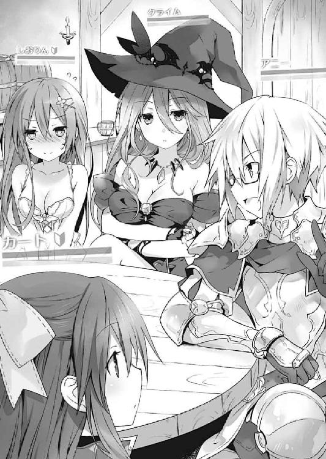
【アニー】が怪訝そうに言う。【クライム】が困ったように頭に手を置いた。
『......悪いけど、この二人はタイピング慣れしてないの』
『あー......』
【アニー】が頭をかき、今度は【幻夜】たちに目を向けてくる。
『じゃあ、君たちは？』
『ふ、我らは義のため助太刀したに過ぎん』
『質問。それよりも【アニー】こそ、一体【ファティマ】とどういったご関係で？』
『............』
【柚子】の質問に、【アニー】が黙り込む。
ちなみにそこで耶俱矢が「えっ？ さっきのって【ファティマ】だったの？」と声を上げ、夕弦に「驚愕。気づいていなかったのですか」と言われていた。
『疑念。伝説的プレイヤー【ファティマ】。それがあのような悪漢とは信じたくありません。人に質問をするのなら、まずはご自分の情報を開示しては？』
【柚子】の言葉に、【アニー】は観念したように息を吐いた。
『......しゃーないね。これは完全オフレコにしてほしいんだけど......』
一拍置くようにして、【アニー】が自分に親指を向ける。
『【ファティマ】ってのは......あたしなんだよね』
『は......？』
『......どういうこと？』
思わぬ告白に、酒場の円卓に困惑した空気が流れる。【アニー】は肩をすくめながらあとを続けた。
『そのままの意味よ。【ファティマ】ってのは、あたしが昔作ったキャラクターなの。そらもう鍛えに鍛えまくって、「ポラリス」初のレベル99に到達したわ。......でも数年前、ちょーっと個人的な事情で長いことログインできない時期があってさ。久々にログインしようと思ってみたら、「パスワードが違います」ときたもんよ』
『もしかして、誰かにパスワードを盗まれたってこと？』
【クライム】の言葉に、【アニー】がこくりとうなずく。
『んで、それと一緒に、悪質ＰＫ【ファティマ】の噂が流れてきたの。どっかの誰かが、あたしの【ファティマ】を使ってやりたい放題してくれちゃってるってわけよ。──もちろん運営にも訴えたけど梨の礫。となりゃあもう、自分で捜し出してとっちめるしかないでしょうよ』
言って【アニー】がパン！ と拳を打ち鳴らす。
士道はなるほどとあごをさすった。【アニー】の言うこと全てを無条件に信じるわけではないが......確かにそれなら、先ほどの【ファティマ】の言動にも納得がいく気がしたのである。
と、そこで耶俱矢が、何かを思い出したようにポンと手を打ち、キーボードを叩き始めた。
『そうだ、もしあんたが【ファティマ】なら、これに見覚えがあるはずよね？』
言うと同時、【幻夜】がアイテム覧から『手紙』を選び、表示させる。そう。耶俱矢と夕弦の目的、【ファティマ】の財宝の在処を記したものである。
【アニー】はまじまじとそれを見たのち、『あー』と声を発した。
『なっつかしー。そういえばこんなの書いたわー。最後の裏ボス倒したあと、伝説の装備シリーズを手に入れたんだけど、あんまりに強すぎてバランスブレイカーになっちゃうもんだから、世界のいろんな場所に隠したのよ』
『や、やっぱり本物なのね、これは！』
『疑問。ですが、これに記された地点には何もありませんでした。もう誰かが──たとえばあの【ファティマ】が発掘してしまったのでしょうか？』
『んー？ いや、それはどうだろうなあ。もし何か掘り当ててたなら装備してなきゃおかしいし、何より、場所がわかったからって必ずしも手に入るもんでもないし』
『え？ どういうことですかー？』
【ミルク】が問うと、【アニー】は指を一本立てながら（ゲームキャラだというのに、いちいち仕草が細かくて恐れ入る）説明をしてきた。
『転送呪文と時限タイマーの合わせ技で、世界数百箇所の隠し場所をランダムに移動するように設定してあるのよ。だから、今その装備がどこにあるのかはぶっちゃけあたしにもわかんない』
『えぇっ？ じゃあもう手に入らないようなもんじゃん！』
『んー。そうかもねえ。ちょっと前まで、そのアイテムがどこにあるのか正確にわかる手段があったんだけど、今は諸事情により使えなくなっちゃったからねえ』
『ふうん......一応聞くけど、その伝説の装備シリーズって、そんなに強かったの？』
【トリコ】が問うと、【アニー】は記憶を探るような仕草をしながら答えた。
『あー、ダメージ受けた瞬間にその分ＨＰが回復する「アンブロシア・メイル」とか、相手に防御不可の即死効果を与える「魔剣タナトス」とか、移動速度が一〇〇倍になる「韋駄天の靴」とか。ちなみにどれも、持ってるだけであらゆる状態異常・弱体化回避効果がつくから』
『それは......確かにバランス崩壊するわね。......っていうかその靴は逆に遊びづらくなるんじゃないの？』
『っしょ？ 正直それは一瞬で画面酔いして封印する決心をした』
すると【柚子】が、何かを思い出したように顔を上げる。
『想起。そういえば、【柚子】たちがこの場所に赴いたとき、辺りにトラップが仕掛けられていました。まさか、あれは【ファティマ】の？』
その言葉に、【アニー】は『あー......』とぽりぽりあごをかいたのち、答えてきた。
『その可能性はあるかもねえ。発掘ポイントにトラップを張り巡らして、宝を手に入れた冒険者を捕まえる。まあ効率的っちゃ効率的なのかな？』
【アニー】が言うと、その隣に座っていた【トリコ】と【オリオン】が納得するように声を発した。
『ああ......そういえば私たちもトラップにやられたわね』
『やはりあれは【ファティマ】の仕業ということ？』
言って、こくこくと首肯する。どうやら彼らも、【ファティマ】に痛い目にあわされたようだった。
『あのー、さっきから気になってたことがあるんですけどぉ、ちょっといいですかー？』
と、そこで、美九操る【ミルク】が声を上げる。
『ん、なーに？』
『【アニー】さん、さっきから「あたし」って仰ってますけどぉ......もしかして女性の方なんですかー？』
『ん、そーよ？ 言ってなかったっけ？ あ、ちなみにこっちの【オリオン】も、男キャラだけど中身女の子ね』
【アニー】があっけらかんとした調子で言う。すると【ミルク】が嬉しそうにくるくると踊り始めた。
『きゃー！ そうだったんですかぁー！ なんだぁ、それならそうと言ってくださいよー！』
『あはは、ごめんごめん。でもわりとあるっしょ？ 性別違うキャラ使うのって。そこの【幻夜】くん。君も女の子っしょ？』
『な......何故それをっ！』
『いや、言葉とか動きの端々見てればなんとなくわかるってば。他は......』
言いながら、【アニー】がテーブルを見回す。
「......っ」
士道は息を吞んだ。どうやら【アニー】はかなりのベテランプレイヤー。性別を偽っていても見抜かれてしまうらしい。ということは、図らずも下着姿の美少女キャラを使っている士道が男であることも見抜かれてしまうのでは──
『うん、他は全員女の子だね。間違いない』
「......って、なんでだよ！」
【アニー】の言葉に、士道は思わず現実世界でツッコミを入れた。美九と八舞姉妹が、可笑しくてたまらないといった調子で笑ってくる。
『ん......？』
と、そこで【クライム】が小さな声を上げる。
どうやら、開示された【幻夜】の『手紙』を見ているようだった。その文面に目を這わせ、何やらしばらくの間沈黙する。
『......この座標、まさか、私の......』
そして数瞬のあと、【クライム】はバッと顔を上げた。
『......ねえ、その【ファティマ】って奴はさ、宝を見つけるためなら、そこに建ってる家を吹っ飛ばすような奴だったりする？』
『え？ うーん、まあＰＫだからねえ。それくらいは平然とやるだろうねえ』
『......なるほど。──【アニー】って言ったっけ？ あなた、これからその【ファティマ】って奴を捜してとっちめるのよね？』
『ああ、うん、そうだけど』
『よかったら、私たちもそれに加えてもらえないかしら。......実は私たちもその【ファティマ】に、すっごい恨みがあるのよね』
【クライム】が、文面を見ただけで怨念を感じるような調子で言う。【アニー】は驚いたようなリアクションをしたのち、こくこくと首を前に倒した。
『マジで？ そらもう歓迎よ。高レベルプレイヤーの助けはありがたいわ。まあ、隣の二人はもうちょっと鍛えた方がいいかもだけど』
『がんばります』
『ｇちゆん；ｐっｋｓ』
『あはは、オーケーオーケーあたしに任せといて』
【アニー】がカラカラと笑い、グッと親指を立ててみせる。
するとそれに続くように【幻夜】が声を上げた。
『待つがよい！ 我も志を同じくする者！ 我を謀りし偽りの英雄に血の制裁を！』
『通訳。【幻夜】は自分もパーティーに入れて欲しい、と言っています』
『マジで？ 助かるよ。あたしも鍛えてるつもりだけど、やっぱサブの【アニー】一人じゃ【ファティマ】には敵わないからさ』
『呵々、任せよ！ 我が闇の力見せてくれようぞ！』
にわかに酒場の円卓が盛り上がり始める。
が、そこで、【トリコ】が冷静な調子で言葉を発した。
『──って言っても、具体的にどうするのよ。【ファティマ】はどこにいったのかわからないうえ、普段は「シャドウカーテン」......だっけ？ そういうアイテムで名前とステータスを隠してるんでしょ？ 見つけようがないじゃない。またどこかで通り魔事件を起こすのを待つっていうの？』
『ん、それは......』
と。【アニー】が言いかけたところで。
『あ、あの......っ！』
それまで沈黙を貫いてきた少女──【メアリ】が、突然声を発した。
『ん、どーしたの？』
『えっと、お礼が遅くなってしまってすみません......助けていただいてありがとうございます』
『ああ、いいっていいって。あたしが勝手にやったことだしね』
『いえ......あの、それで、ですね』
【メアリ】は一瞬躊躇うような仕草を見せたのち、言葉を続けた。
『もしかしたら私、お手伝いできるかもしれません......！』
『ん？ 君もパーティーに入ってくれるの？』
『い、いえ！ 滅相もない！ そういうことではなくてですね......私、あいつの居場所に心当たりがあるんです』
『......？ どういうことかな？』
【アニー】が問うと、【メアリ】は緊張するような仕草をしてから話し始めた。
『あの......実はあのとき【ファティマ】に殺されたのは、私の彼なんです』
『へえ、そなの？』
『はい......いえ、あの、っていっても、ゲームの中だけの関係なので、本人には会ったことないんですけど......』
【メアリ】は照れるように頭をかいてから言葉を続けた。
『それで、あの......申し上げにくいんですが、私の彼、どうやらあの【ファティマ】って人と組んで悪さをしてたみたいで......』
『悪さ？』
『はい......ＰＫをして、奪い取ったレアアイテムを彼がＲＭＴでお金に換えるっていうことを......』
『ＲＭＴってなんですかー？』
質問を発したのは【ミルク】だった。それに答えるように、【クライム】が言葉を返してくる。
『リアルマネートレード。要は、ゲーム内アイテムを現実のお金でやり取りすることよ。「ポラリス」では一応表向きは禁止されてるはずだけど......』
『へぇー！ そうなんですかぁ！ それはそれとして【クライム】さんって美人さんですねぇ。私綺麗なお姉さんに甘えたい病なんですけど治療してくれませんかぁ？』
『......ねえ、何この子。なんだか怖いんだけど......』
【クライム】が困惑した様子で言ってくる。士道は力なく苦笑した。
そんな二人をよそに、【アニー】がゆっくりとあごに手を当てる。
『なぁーるほど......ＰＫだけじゃ飽き足らず、あたしの【ファティマ】をそんなケチなことに使ってくれちゃってたわけ』
『はい......それで彼が私と付き合うようになって、もう悪いことは止めるから話をつけてくるって言って......もう、それで全て終わったはずだったのに......』
『口封じ......っていうか腹いせに殺されたわけだ。好き勝手してくれるじゃんよ。こりゃ、マジで一発殴らないと気が済まない奴だねぇ』
その言葉に、士道は小さく息を詰まらせた。穏やかな口調の中に、彼──否、プレイヤーは女性だったか──の、確かな怒りを感じ取ったのである。
『うんで、【メアリ】ちゃん？ あいつの居場所に心当たりがあるって？』
『は、はい......前に彼から、ＰＣから奪い取ったアイテムを保管してる場所を聞いて......きっとそこを見張っていれば、あいつが現れるはずです......！』
【メアリ】の言葉に、【アニー】はふむ、と腕組みした。
『なるほど、そいつは貴重な情報だ。でも、いつまでもそこに根を張ってるとは考えづらいね。いくら裏切り者を殺したっていっても、現実世界のプレイヤーは生きてるわけだし、むしろ警戒を強めてるかもしれない。みんなのレベルを上げる時間がないのは申し訳ないけど、そこを叩くなら今日中には行動に出ないと』
言って【アニー】が、皆に意見を求めるように円卓を見回す。
するとそれに答えるように、キャラたちが了解の動作をしていった。
だが──
『べしじもｋｄｓｄぽｋ』
【カート】が謎の文字列を発したかと思うと、【クライム】が通訳するように声を上げた。
『ごめん、悪いけれど、少し休憩時間をもらえるかしら』
『ん？ それはいいけど、どったの？』
『この子、お腹が空いたって』
『あー』
【アニー】が納得したようにうなずく。
そこで士道も「あ」と短く声を発し、リビングの壁に掛けられた時計に目をやった。──一八時。そろそろ、皆が夕飯を食べに来てもおかしくない時間だった。
「やっべ、もうこんな時間か。夕飯の支度しないと......」
士道は額に汗を滲ませながら言うと、キーボードを叩いた。
『すみませんが、夕飯の支度があるため、一度抜けさせて欲しいです』
『お、【しおりん】さん、もしかして主婦？ いやー、人妻の操るエロ下着キャラってのもいいもんですなぁ』
「............」
【アニー】が、本当に女性プレイヤーなのか疑わしいことを言ってくる。士道は無言になり、美九と八舞姉妹は腹を抱えて笑った。
『ん、おっけーおっけー。じゃあみんなとりあえず夕飯食べてお風呂入って、二二時くらいにもっかいここに集合ってことでどうかな？』
『いいわ、了解』
『よかろう、ではまた約束の地にて見えようぞ！』
『はい......よろしくお願いします』
パーティーのそれぞれの代表がそう答え──画面からキャラクターが順にログアウトしていった。
◇
──そして、時刻は一九時。
「じゃあ、いただきます」
『いただきます！』
五河家の食卓に、そんな元気な声が響き渡った。
先ほどまで士道と八舞姉妹、美九の四人しかいなかった五河家には、何人もの精霊たちが集まっていた。さすがにダイニングテーブルだけでは足りないため、リビングのテーブルにも料理が並べられている。
今日のメニューは手巻き寿司である。酢飯を作る手間こそあるものの、比較的短時間で準備ができ、人数の増減にも対応しやすいため、こういったときは助かる料理である。
「あーん......むっ」
具を満載したため微妙に形崩れした手巻き寿司を頰張り、十香が幸せそうな顔をした。
「んむんむ......美味い！ これはよいものだな、シドー！」
「はは、お気に召したなら何よりだよ」
士道が言うと、琴里が不思議そうに首を傾げた。
「でも、そういえば今日は別のメニューの予定じゃなかったっけ？」
「え？ いや、えーと......」
士道は答えに窮した。まあもちろんその理由は、オンラインゲームで遊んでいたら準備の時間がなくなってしまったことなのだが......なんだかそれを素直に言うのは気が咎めたのである。士道は誤魔化すように咳払いをした。
「いや、まあ、気分だよ、気分。......っていうか、今日はみんなも随分来るのが遅かったな。何かあったのか？」
「む？ おお！ そうだシドー、聞いてくれ。七罪とオンライ──」
「あああああああああッ！」
十香が言いかけたところで、七罪が不意に大声を発した。
「ちょっと十香......、......だから......」
「ふむ......わかったぞ！ 七罪とゲームをしたことは内緒なのだな！」
「だから内緒って言ってるでしょぉぉぉ!?」
七罪がたまらずといった調子で叫びを上げる。相変わらずのやり取りに、士道はあははと苦笑した。どうやら十香は七罪の部屋でゲームをしていたらしい。別に隠すようなことでもないと思うのだが......
と、そんな七罪の様子に、二亜がキラリと眼鏡を光らせた。
「んー？ どーしたのなっつん。ゲームやってるってだけでそんなに慌てちゃってぇ。さては──」
「え......っ!?」
言われて、七罪がビクッと身体を震わせる。二亜はふっふっふ、と含み笑いをしたのち、ビシッと七罪に指を突きつけた。
「なっつん、とーかちゃんにエロゲーやらせてるんでしょ！ しかもその動揺っぷり......純愛系じゃなくてなっつんの趣味がしとどに出た陵辱系とみた！」
『ぶふぅッ!?』
二亜の言葉に、七罪と士道は思わず咳き込んだ。
「な、七罪、おまえまさか......」
「信じるなぁぁぁぁっ！ そ、そんなのしてるわけないでしょ！」
「えー、素直になろうぜなっつん。やー、嬉しいなー。こんな近くに美少女エロゲーマーがいるだなんて。ちょっと朝まで語り明かそうぜー？ なっつんの性癖詳しく知ーりーたーいー。ちなみに個人的な予想はおねショタか痴女物」
「勝手に人の性癖予想しないでくれない!?」
七罪がテーブルをバンと叩きながら悲鳴を上げる。二亜は楽しげにひとしきり笑ったあと、何かを思い出したようにポンと手を打った。
「......あ、そうだ。ごめんだけど今日は二二時から予定あるから明日以降ねー」
「二二時？ 何かあるんですかー？」
首を傾げたのは美九だった。すると二亜が、何やら含みを持たせるように目を細めながら息を吐く。
「んー......ちょっと面倒なことになっててね。まあ言うなれば──昔のオトコの話ってとこ」
「え......ええっ!?」
二亜のまさかの言葉に、美九が目を丸くする。
「ど、どういうことですか二亜さんっ！」
「どうもこうもないっしょ。あたしだって大人のオンナよ？ そういう話の一つや二つあって然るべきじゃない？」
言って二亜が、ウッフンとしなを作ってみせる。精霊たちから、驚愕の、あるいは疑わしげな、あるいはやれやれといった視線が浴びせられた。
◇
そして、その日の夜。
打倒【ファティマ】のために集まった即席パーティーは、大陸東端に位置する高難度ダンジョン『煉獄城』を訪れていた。
なんとも禍々しい雰囲気を漂わせる巨大な古城である。月を背景に聳えるその様はまさに魔城。ゲームのグラフィックだというのに、見た目だけで初心者プレイヤーを回れ右させるような異様な迫力を漂わせていた。
『こんなところに隠れ家を作ってたとはね。誰も寄りつかないはずだわ』
【アニー】があごをさすりながらそう言う。士道は首を傾げながらキーボードを打った。
『特殊な場所なんですか？』
『んー。「ポラリス」の中でも最高難度ダンジョンの一つで、とにかく敵が鬼強でね。超高レベルキャラじゃないと気軽に出入りできないって感じ』
『なるほど......でも、それじゃあ俺たちも入れないんじゃあ』
『安心してください！』
【しおりん】の言葉に答えたのは、ここまで皆を案内してきた【メアリ】だった。
『彼に聞いた情報によれば、このあたりに......』
言って、【メアリ】が城壁の周りをごそごそと探り始める。
するとほどなくして、ガコッ、という音とともに地面の一部が開き、地下への階段が顔を覗かせた。
『おおっ！ 隠し扉！』
『ふんふん、まあ確かに、自分だけならまだしも、商売仲間が出入りできないと不便だもんね。こういう仕掛けはあって然るべきか』
【アニー】は納得を示すように言うと、皆の方に目を向けた。
『──さ、じゃあみんな、準備はいい？ 手順はさっき説明したとおりね』
それに応え、皆は一斉に......ではなく、キャラの操作に慣れていると思しき順にうなずいた。
ここに至るまでに、作戦の要項は説明されていた。
【しおりん】や【ミルク】などの後衛魔法職キャラクターは徹底してサポート呪文を唱え続け、パーティーを強化＆敵を弱体化。そして【アニー】を中心とした上級職グループが、四方から【ファティマ】を絶え間なく攻撃する。
ついでにレベル１の【カート】と【ヨシュア】は、レベルに関係なく固定ダメージを与えることができるアイテム『石』をありったけ投げまくる......という、キャラ性能を数で押し潰す戦法である。
実際過去に一度、【アニー】のプレイヤーが操る本物の【ファティマ】も、大手ギルドといざこざを起こしたときにこの戦法を使われたことがあるらしく、手持ちのアイテムを使い尽くす勢いで、命からがら逃げ延びたという話だった。
『やっぱり戦争は数だよ。一人の英雄は一〇〇人の凡人に敵わないんだよ。ソロプレイで最強とかマジ夢物語だよ。仕様上あり得ない』と、伝説のプレイヤーが遠い目をしながら言う姿は、できればあまり見たくなかった。
だが逆に言えばそれは、士道たちでも戦い方によっては【ファティマ】を倒しうるということである。無論【ファティマ】に仲間がいるとしたらまた話は変わってくるのだが、裏切り者を自ら粛清しにくるあたり、人員が潤沢とも思えなかった。
『──よろしい。んで、みんなが【ファティマ】をボコってる間に、【オリオン】と【トリコ】は【ファティマ】のユーザー情報ぶっこ抜いて』
『任せて。ＩＤとパスワードさえわかれば、住所氏名年齢虫歯の数まで突き止めてみせる』
『ヒュウッ、頼りになるぜ【オリオン】。敵だったらと思うとゾッとするぜ』
『......なに不穏な話してるのよ、二人とも。みんな引いてるでしょ』
【トリコ】がやれやれといった調子で言う。実際、【クライム】と【メアリ】あたりは明らかに引いていた。......【オリオン】。一体何者なのだろうか。
『まーまー。別に悪用しようとは思ってないってば。【ファティマ】のアカウントを返してもらって、ついでにもう二度とこんなことしないように自宅に怪文書を送りつけるだけだから』
『前者はともかく後者は普通に迷惑防止条例に抵触しそうなのよねえ......』
【トリコ】が難しげに腕組みする。が、【アニー】は気にしていないようだった。皆を先導するように手を上げ、隠し階段へと歩いていく。
『じゃあ、いくよみんな。あたしについてきな！』
『おー！』
パーティーメンバーたちはそれに応え、前衛上級職、サポートメンバー、石投げ組、そしてしんがりの【メアリ】という順で地下へと潜っていった。
緊張に渇く喉を唾液で湿らせながらキャラを操作し、長い階段を下りていく。
そしてどれくらい進んだ頃だろうか。一行は一つの扉の前に辿り着いた。
『よし──突撃！』
【アニー】が先陣を切り、扉を蹴破って部屋の中へと入る。次いで、パーティーメンバーたちが次々となだれ込んでいった。
【しおりん】もそれに続いて部屋に入り、すぐさま呪文を唱え始める。
多勢に無勢とはいえ、相手は仮にも最強キャラ【ファティマ】。士道たちが勝つためには、虚を衝いて確実に先手を取らねばならないのである。
だが。
『......うん？』
その【アニー】の一言によって、辺りに満ちていた緊張の糸が途切れた。
理由は単純。部屋の中に、【ファティマ】がいなかったからだ。
『ふう......いない、か。じゃあみんな、部屋の中の収納箱を調べてみてくれる？ めぼしいアイテムが入ったままだったら、まだ換金前の可能性が高いから、罠を張っておこう』
『了解ー』
【アニー】の指示に従い、皆が部屋の各所に置かれたアイテム収納箱を調べに歩き始める。
すると、そのとき。
『──ドレスブレイク』
不意にどこからか、そんな呪文が聞こえてきた。
『な......!?』
狼狽に満ちた【アニー】の声が響く。
次の瞬間、部屋の中に光が広がり──パーティーメンバーたちが纏っていた衣服が勢いよく弾け飛んだ。
『え、ええっ!?』
誰かの狼狽の声が響く。しかしそれも無理からぬことだろう。何しろ、半裸状態になったキャラたちが、恥ずかしそうに頰を染め、胸元を手で隠すようなモーションをし始めたのである。
ちなみに、【アニー】、【幻夜】、【オリオン】などの男キャラも同じ動作をしているものだから、なんだかもの凄くシュールだった。
『えっ、ちょ、何これ！ キャラが動かないんだけど！』
『狼狽。「恥ずかしくて動けない」というメッセージが表示されます』
『なにこの状態異常！ あたし知らないんだけど!?』
【アニー】が焦ったような調子で叫ぶ。
するとそこで、【しおりん】たちの背後に立った影が、ゆらり、と揺れた。──【メアリ】だ。
『な──』
【しおりん】は思わず息を詰まらせた。可愛らしい姿をしていた【メアリ】の身体が一瞬黒く染まったかと思うと、黒衣を纏った男の姿へと変貌を遂げたのである。
その姿は──【しおりん】たちが街で見た【ファティマ】の姿そのものだった。
『シャドウカーテン』。外見やステータスを改竄するアイテムである。
『【ファティマ】!? おまえ、【メアリ】をどこへやった!?』
【しおりん】が言うと、【ファティマ】は肩をすくめながらくつくつと笑った。
『今頃、始まりの街で目覚めている頃ではないかな。──貴様らが休憩などを取ってくれて助かったよ』
『ち......みんながバラけてる間に、【メアリ】に成り代わってたってことか！』
『ああ。まさか私の創造主が引っかかるとは思っていなかったがね。──迂闊だな。この【ファティマ】を鍛え上げた手腕は見事だが、もう現役を退く頃なのではないかな』
【ファティマ】の言葉に、【アニー】が悔しげにうなる。
『ドレスブレイクなんて呪文、【ファティマ】は覚えてなかった！ こんな力、一体どうやって手に入れたんだ！』
『いや、この前のアップデートで』
『......あー』
【アニー】が納得したように言った。オンラインゲームは日進月歩。数年前のプレイヤーである【アニー】が知らないことがあるのも無理のないことではあった。
『しかし......ほう。一人我が呪文から逃れた者がいたか』
『え？』
そこで士道は気づいた。半裸状態で動けなくなったキャラたちの中、【しおりん】は一人、先ほどの状態のまま立っていたのである。......最初からほぼ半裸だったため、言われるまで気づかなかったのだ。
『なんとも幸運な──いや、そういえばその恥ずかしい服にはＤＢ耐性がついていたかな......？ 趣味で着ているのかと思って失念していた』
『............』
どうやらＤＢはデバフのことではなかったらしい......が、どちらかというと言葉の後半の方が気になった。無言で抗議の眼差しを送る。
が、無論そんなものが通じるわけがない。【ファティマ】が、片手を掲げてくる。
『ふん。ならば、通常魔法で片を付けてやろう』
『く......！』
ＤＢを免れたのは【しおりん】一人。もし【しおりん】がやられたなら、パーティーは全滅。蘇生させる者もいない以上、皆ペナルティを負って振り出しに戻ることになってしまうだろう。しかも、【ファティマ】を倒すために揃えたアイテムや装備品が【ファティマ】に奪われるというおまけ付きだ。
とはいえ、戦況を覆すにはあまりにレベルが違いすぎる。【ファティマ】は悠然と呪文を唱えると、その手に光を収束させていった。
が──そのとき。
『ｖゆｈんｌｋｌ；：』
謎の文字列とともに、【ファティマ】に『石』がこつん、とぶつかった。
『──何？』
【ファティマ】が不審そうにそちらを向く。
そこには。
半裸の冒険者たちの中、一人『石』を構えるレベル１のカーペンター、【カート】の姿があった。
「......十香!? なんで【カート】は動けるの!?」
精霊マンションの一室で。七罪は驚愕の声とともに十香の方を向いた。
「わからぬ！ だがまだ戦えるぞ！ とうっ！」
言って、画面内の【カート】が【ファティマ】に『石』を投げ続ける。が......無論、【ファティマ】のＨＰはほとんど変わらなかった。
しかし今重要なのは、魔法耐性の高い【クライム】でさえ半裸にされてしまった脱衣呪文を【カート】が免れた理由である。七罪は【カート】の装備一覧、アイテム一覧に目をやり──
「──え？」
その一番下にあったものを見つけて、息を詰まらせた。
「と、十香！ このアイテム、一体どこで手に入れたの!?」
「む......？ おお！ 確か、地面を掘っているときに、土や石と一緒に出てきたものだぞ」
「まさか......」
七罪は息を詰まらせた。
そういえば、十香は七罪が整地の方法をレクチャーした際、操作方法がわからず地面を垂直に掘り進んでしまっていた。
そして、七罪が家を建てていた森の奥は、【ファティマ】が財宝を隠した場所の一つだった──
「......っ！ 十香！ 今から私の言うとおりに操作して！」
「む？ うむ、わかったぞ！」
七罪の言葉に、十香は力強くうなずいた。
『......ほう、まだ一人いたのか』
『石』をコツコツとぶつけられながら、【ファティマ】が【カート】の方に身体を向ける。
『さしたるダメージはないが、鬱陶しいな。貴様から消えるか？』
『く......逃げろ、【カート】！』
【ファティマ】が【カート】に呪文を放とうとする。
と──そのとき。
ピコン、という音が鳴ると同時、パソコンの画面に、メッセージアイコンが表示された。
『【カート】さんから、贈り物が届きました』
「え......？」
士道は不思議そうに眉をひそめた。『贈り物』は、パーティー間でアイテムをやりとりする際に使う方法であるが......なぜこんな状況で。会話もままならなかった【カート】のことだ。恐らく何かのミスであろうが──
しかし。送られてきたアイテムの名を見た士道は、思わず目を見開いた。
「な......」
それはそうだ。何しろそこにあったのは──かつて【ファティマ】が封印した伝説の剣『魔剣タナトス』であったのだから。
「ど、どういうことだ......？」
突然の事態に、理解が追いつかない。パーティーチャットでそれを知った他の面々も、皆驚いたように反応していた。
『え......!?』
『これって【ファティマ】の財宝......!?』
するとそんな皆の反応を見越したように、【クライム】からチャットが届いた。
『説明してる時間はない！ 今すぐ【ファティマ】を斬って！』
「......！」
士道はその言葉に弾かれるように、即座に漆黒の魔剣を【しおりん】に装備させた。
目の前には、【カート】に魔法を放とうとする、【ファティマ】の無防備な背中。
瞬間、【ファティマ】の身体が小さく震えたような気がした。
『な──まさか、「魔剣タナトス」!? なぜそれを──』
『はぁぁぁぁぁぁぁっ！』
【ファティマ】の声を遮るように、【しおりん】は『魔剣タナトス』を振りかぶった。状況を察した皆の声が、その一撃に重なっていく。
『いっけぇぇぇぇぇぇ！』
『あたしの【ファティマ】を好き勝手してくれた恨み！』
『私たちに爆破トラップ仕掛けてくれた恨み！』
『......よくも私の家と畑を滅茶苦茶にしてくれたわねっ！』
『粘着トラップで我らの装備を台無しにしてくれた罪は重いッ！』
『!? 後半は知らな──』
中途半端な断末魔の声を上げて、最強キャラ【ファティマ】はその場に倒れ伏した。
『魔剣タナトス』。その名の通り、相手に防御不可の即死効果を与える剣である。
なぜ【カート】がこんなものを持っていたのかは知らなかったが──それを言及するのはあとでいい。
今は皆、ただ勝利の美酒に酔いしれていた。
『いやっほぉぉぉぉい！』
『勝ちましたね！』
『賞賛。素晴らしい一撃でした』
皆が歓声を上げてくる。士道は【しおりん】を一礼させると、それに応えた。
『はは......ありがとう。みんなのお陰だよ。......って、そのＤＢ状態ってどうやったら解除できるん──』
と、【しおりん】が言いかけた、次の瞬間。
凄まじい閃光が炸裂し、【しおりん】のＨＰが０になった。
「な......!?」
思わず狼狽の声を漏らしながら、画面を見やる。
するとそこに、ＨＰを１残した【ファティマ】が立っていることがわかった。
『【ファティマ】!? まさか、生きていたのか!?』
『うっそでしょ！ 「魔剣タナトス」は防御不可の即死攻撃じゃないの!?』
『......！ そうか、「復活の符」！ 死亡したとき、一度だけＨＰ１で復活できるアイテムよ！』
【クライム】の声に、士道は息を詰まらせた。それとは対照的に、【ファティマ】が哄笑を響かせてくる。
『ふ......ふはははは！ さすがに肝が冷えたよ。だが──これで終いだ』
『く......！』
士道は眉根を寄せながらマウスをカチカチと操作した。だが無論、死亡してしまった【しおりん】は動いてくれない。如何に最強アイテム『魔剣タナトス』を持っていようと、これでは意味がなかった。
『ここまで私を追い詰めた褒美だ。見せてやろう。ワールドブレイカーたる私の最強呪文、アンリミテッド・ディスト──』
が、そのとき。
コツン、と小さな音が鳴ったかと思うと、１だけ残っていた【ファティマ】のＨＰが０になった。
『え──？』
予想外の事態に、パーティーメンバーたちが目を丸くする。
しかし、何が起こったかはすぐに知れた。
『ぃうｈんｊｌｋｌ』
そんな言葉を発しながら、【カート】が、『石』を投げるような格好をしていたのである。
──かくして、最強のキャラクター【ファティマ】は打倒された。
しかしそのとどめとなったのが、レベル１の冒険者が投げた『石』だったことは、あまり知られていない。
◇
『いやー、みんなホントありがとう。おかげでなんとか目的を果たせたよ』
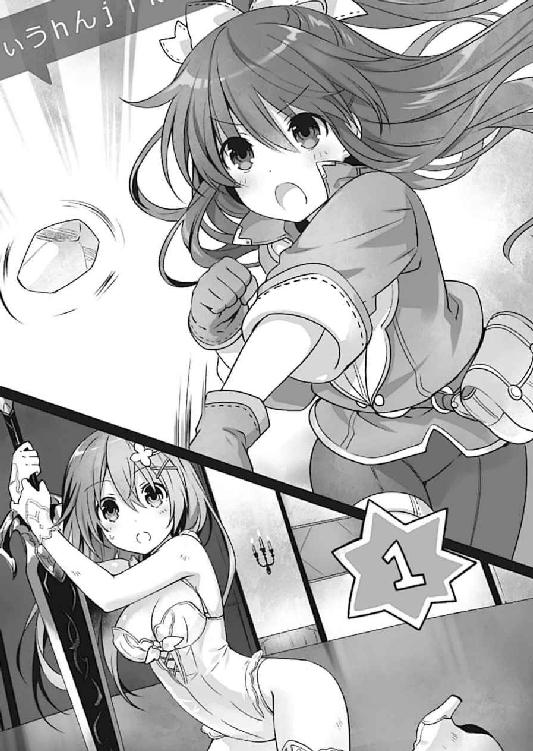
【ファティマ】打倒から一時間。
どうにか状態回復と蘇生を済ませた一行は、セントラルシティの酒場で祝勝会を開いていた。
『いえ、お礼を言うのはこっちよ。おかげで、私の家と畑の恨みも晴らせたし』
『首肯。彼が装備していたアイテムもいただいたので、【柚子】たち的にはプラスです』
『対象の個人情報は確保した。いつでも行動に移れる』
『......だから、ほどほどにしときなさいよ、それは』
などと、和やかなのか物騒なのかわからない会話が盛り上がっていく。
少し前までは皆見知らぬ世界の誰かだったのだけれど、一つの目的を達したことで、不思議な一体感が生まれていた。なるほど、この感覚は、オンラインゲームでしか味わえないものなのかもしれない。
『──あ、そうだ』
と、士道がそんなことを考えていると、不意に【アニー】がそんな声を発した。
『ねぇねぇみんな、よかったら今度、オフ会してみない？ いや、普通ならあたしもこんなこと提案しないんだけどさ、なんつーかこのパーティー、初めて会ったような気がしなくってさ。全員女なんだし、気楽でいいっしょ？』
するとそれに応じて、【ミルク】が歓声を上げる。
『きゃー！ ナイスアイディアですぅ！ やりましょう是非ぃ！』
『......いや、私はそういうの別に......なんかあんまり【オリオン】と【ミルク】とはお近づきになりたくないし......』
反して、【クライム】は眉根を寄せた。【ミルク】が『なんでですかお姉様ぁぁぁっ！』と言って更に引かれていた。
『やってみたいです』
『いうｊんｋｌ；』
が、【ヨシュア】と【カート】がそう言うと、【クライム】は少し悩んだ様子を見せてから、渋々うなずいた。
『......仕方ないわね。二人がそう言うなら......』
『よっしゃ！ 決まりね！ あとで日程と場所決めよ！ 今はとにかく──お疲れ様ッ！』
『お疲れ様！』
【アニー】の号令に合わせて、キャラたちが酒の入ったジョッキをぶつけ合う。
賑やかな夜は、こうして更けていった。
ちなみに後日行われたオフ会が、一瞬にして五河家の鍋パーティーに変わったのは、言うまでもないことである。
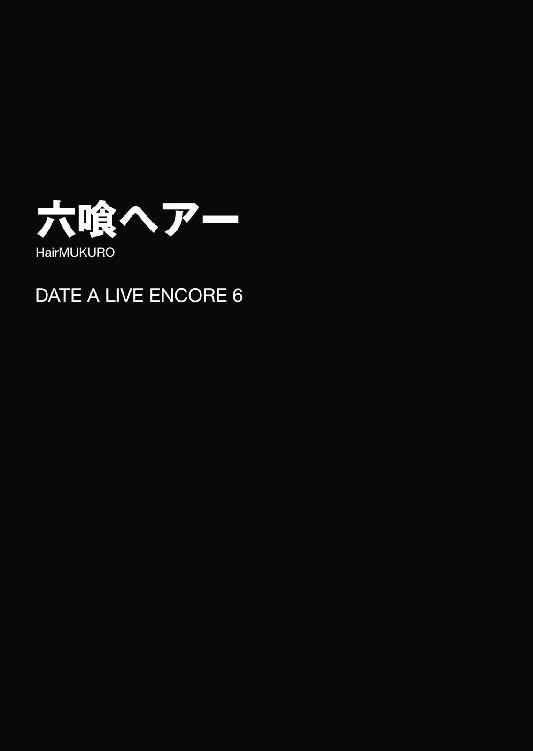
一説によると、ロックなどに用いられる８ビートとは、心臓の鼓動に近いリズムを刻んでいるらしい。
それゆえそのリズムには、人を興奮状態に導く効果があると言われている。心臓の鼓動に近いリズムに本物の心臓が錯覚を起こすのか、はたまたそれそのものに人を興奮させる作用があるのかはわからなかったが──
一つ確かなのは、今この瞬間、五河士道の体内で一大ロックフェスが開催されているということだった。
「......っ、......っ、......っ」
胸の裡から響く情熱的なビートに乗せるように、喉から乾いた吐息が漏れる。否、それだけではない。そのリズムに合わせて手が震え、目が霞み、ついでに頰に浮かんだ汗までもが少しずつ垂れ落ちていった。
しかしそれも無理からぬことである。士道は無言で、自分の右手と床──正確に言うならばその上にあるものに視線を落とした。
右手に握られたのは、散髪用の鋏。
そして床の上にあったのは──美しい黄金色をした、繊維の塊であった。
そう。本来であれば、そこにあってはならないものである。
「し、シドー......」
後ろにいた十香が、不安そうな声を発してくる。士道は油を差し忘れた機械のような挙動でそちらに向くと、大丈夫、と言うように小さくうなずいて見せた。
しかしその士道の顔があまりに青ざめていたのだろう。十香は安心するどころか、その表情をさらに不安の色に染めてしまった。
「............」
士道は鋏を握ったままの右手を胸に当て、どうにか呼吸を整えながら、自分の置かれた絶望的な状況を頭の中で整理し始めた。
◇
──ときは、三〇分ほど前まで遡る。
士道は一人、自宅のリビングでソファに腰掛けながら、何とはなしに本を眺めていた。時刻は午後二時二〇分。昼時は過ぎ、夕食の準備には少し早い、のんびりとした時間である。精霊たちも皆出かけているため、普段賑やかな家の中は、珍しくしんと静まりかえっていた。──一言で言うと、最近あまりなかった絶好の読書日和だったのである。
まあ、偉そうに読書と言っても、士道の手にあるのは学術誌ではなく雑誌──しかも高校生が読むようなファッション誌やコミック誌ですらなく、『きょうの献立 １月号 特集：冷蔵庫の余り物でもう一品』という所帯じみたものではあったのだけれど。
「うわマジか、余ったシュウマイの皮でラザニアなんてできるのか。まあ確かに小麦粉には変わりないもんな。今度やってみよ......」
と、士道が謎の感動とともにページにドッグイアを作っていると、不意に廊下の方から足音が聞こえてきた。
「いるか、主様」
そしてそんな声とともに扉が開き、一人の少女がリビングに入ってくる。士道はそちらに顔を向け、挨拶をするように小さく手を掲げてみせた。
「ああ、六喰。どうかしたのか？」
星宮六喰。つい先日士道が霊力を封印した精霊にして、五河家の隣に聳えるマンションの新たな住人である。
士道は彼女の名を呼びながら、その容貌を見回した。小柄な体軀と、それに似合わぬ豊満な胸元。地面に触れてしまいそうなほどに長い金髪はお団子と三つ編みに纏められており、首元にくるりと巻き付けられていた。
六喰はキョロキョロと辺りを見回したのち、士道の他に誰の姿もないことを確認すると、ほうと息を吐いた。
「ふむん......主様一人か。ならばちょうどよいの」
「ちょうどいい？」
「むん」
六喰はこくりとうなずくと、首元に巻かれた三つ編みの先端を手で弄りながら言葉を続けた。
「この前、約束したじゃろう。むくの髪を切ってくれると」
六喰の言葉に、士道は「ああ」と答えながら雑誌を閉じた。
確かに、士道は六喰とそんな約束を交わしていた。
あれは一月半ば、地球を巻き込んだ攻防の末、なんとか六喰の霊力を封印したあと、二人で星空を眺めていたときのことだ。
六喰はかつて義姉に褒められたその長い髪をたいそう大切にしていたのだけれど、士道という新たな家族ができたことにより、その執着から決別することを決めていたのである。
「そのことか。もちろん覚えてるぞ。ん、今やるか？」
「むん、頼むのじゃ。──さすがに、一人で髪を洗うのは大変での」
「はは、それはそうかもな」
「一人で髪を洗うのが大変での、と美九の前で言うともっと大変での」
「......ははは」
六喰の言葉に、士道は力なく苦笑した。具体的にどう大変なのか、聞かなくても大体想像が付いてしまったのだ。
「ま、まあとにかく、だ。準備をするから、六喰は髪を濡らしてきてくれるか？」
「ふむん、髪をか？」
「ああ。髪は濡らして癖を直してからの方が切りやすいんだ。乾いたままだと纏まりがないから辺りに髪が散っちゃうしな。もっと短ければ霧吹きで濡らすくらいでいいんだけど、さすがに六喰の長さだと難しいだろ」
「むん、了承した。では風呂場を借りるのじゃ」
言って六喰が、トコトコと風呂の方へと歩いていく。
士道はその可愛らしい動作に笑みを漏らしながら、ソファから腰を上げて六喰の散髪の準備を始めた。
ここ数年はあまり使うこともなくなってしまったのだが、昔は士道も琴里も家で髪を切ってもらっていたため、散髪セットが残っているはずである。頭の中で記憶を探りながら、リビング奥の棚を開ける。
「......っと、あったあった」
棚の奥を探り、目的のものを取り出す。少し色褪せたパッケージを開けて中身が揃っていることを確認してから、士道はリビングに戻り、古新聞を床に敷き始めた。
そしてその上に丸椅子、向かいに姿見をセットしたところで、廊下の方から再びトコトコという足音が聞こえてきた。どうやら六喰が戻ってきたらしい。
「おう、準備できてるぞ。じゃあここに腰掛けて、このケープを──って」
散髪用のケープを手にしながら振り向き、士道はビクッと肩を震わせた。
しかしそれも当然である。何しろそこにいたのは、解かないままの髪をしっとりと濡らした、一糸まとわぬ姿の六喰だったのだから。
「な......む、六喰!?」
「それを着ければよいのじゃな？」
士道が思わず目を白黒させるも、六喰はさして気にも留めていない様子で士道の手からケープを取ると、それを頭から被ってみせた。
だがケープとはいえ、それはあくまで家庭用。美容院で使うような全身をすっぽり覆うようなものではない。必然、ケープの裾からは六喰の乳房の下部がちらと覗き、なんだか先ほどよりもインモラルな様相になってしまっていた。
「これでよいかの、主様」
「......いやいやいや！ なんで服着てないんだよ！」
「ふむん？ 異な事を言うのう。これならば切った髪が服に付かずに済むのじゃぞ」
「いやそうかもしれないけど！ と、とにかく駄目だ駄目だ、ちゃんと服を着てきなさい！」
「ふむん......」
六喰は不思議そうに首を捻りながら廊下を歩いていくと、数分後、先ほどの服を着てリビングに戻ってきた。
「まったく......ほら、じゃあそこに座って」
「むん」
六喰がこくりとうなずき、丸椅子に腰掛ける。士道はやれやれと息を吐くと、鋏を手にしながら六喰の背後に立った。
微かな緊張が指先に走る。だがそれも当然だ。士道は料理こそ得意であるが、他人の髪を切った経験はあまりないのである。昔、琴里の髪を少し整えたことがあるくらいだ。出来映えだけを考えるのなら、プロの美容師に任せた方が絶対によいだろう。
とはいえ、それはあまり現実的ではなかった。自分の髪をとても大切にしている六喰は、士道以外に髪を切られるのを良しとしなかったのである。
となれば、慣れないこととはいえ気合いを入れねばなるまい。もしここで六喰の気に入らない髪型になどしてしまったなら、六喰の機嫌が悪くなってしまいかねなかった。
気合いを入れるように深呼吸をし、士道は鏡越しに六喰の顔を見ながら話しかけた。
「さて、じゃあお嬢様、本日はどのように？」
「主様に任せるのじゃ」
「はは......一番難しい注文されちまったな」
六喰の言葉に、士道はふうむとあごに手を当てた。
するとそんな士道の様子を鏡越しに見てか、六喰が付け足すように言ってくる。
「むん......そうじゃの。であれば、このお団子は残して欲しいのじゃ」
「なるほど。確かに似合ってるもんな」
「ふふ、おだてても何も出ぬぞ」
士道が言うと、六喰は嬉しそうに頰を緩めた。
未だざっくりとした注文であることに変わりはないが、要望が一つあるだけでも事情は随分と異なる。士道はふうむと考えを巡らせたのち、「よし」とうなずいた。
「じゃあお団子を括れるくらいの長さを残しつつ、全体的にすっきりさせていく感じにしよう。あんまり大胆なイメージチェンジは、俺の腕じゃ不安だしな」
「ならばそれでお願いするのじゃ」
「よし、じゃあ始めるか。──あ、そうだ。切った髪が目に入ると大変だから、前髪を切るときは目を閉じててくれ」
「むん」
六喰はそう言うと、きゅっと目を瞑った。
「いや、前髪を切るときでいいんだけど......」
士道は苦笑したが......まあ、別に不都合があるわけでもない。気を取り直して六喰の髪を梳こうとする。
が、そこで士道は「あ」と声を発した。今から髪を切ろうというのに、六喰は髪を結んだままだったのである。
普通ならもっと早く違和感を覚えていてもよかったのだが、全裸登場というインパクトのためか、そこまで気が回っていなかったのだ。
「先に解いておかないとな......」
言いながら士道は、手にした櫛と鋏をその場に置こうとした。
が──次の瞬間。
「シドー！ 見てくれ！ 街で美味しそうなメロンパンを見つけたぞ！」
バン！ とリビングの扉が開いたかと思うと、そこから勢いよく一人の少女が飛びだしてきた。夜色の髪に水晶の瞳。出かけていた精霊・十香である。
そしてそのまま勢い余って、ちょうど扉の前に立っていた士道の背中にドン、とぶつかってくる。突然の衝撃に、士道は思わずよろめいてしまった。
「わっ！」
「ぬっ！ おお、すまんシドー。こんなに近くにいるとは思わなかったぞ」
十香がすまなそうな顔をしながら言ってくる。士道は首を横に振った。
「いや、大丈──」
しかし。
そこで、士道は言葉を止めた。
士道が姿勢を正した瞬間、何かがぽすん、と小さな音を立てて新聞紙の上に落ちたのである。
「......え？」
士道は目を丸くしながら、『それ』に視線をやった。
黄金色をした半円状の物体。一瞬、ぶつかった拍子に十香が、街で見つけてきたというメロンバンを落としてしまったのかと思った士道だったが──すぐに、その認識が間違っていることに気づく。
それを構成しているのは、カリカリのビスケット生地ではなく、キラキラと輝く金色の繊維だったのである。というか、それは......
「六喰の......髪ッ......」
士道は顔を青ざめさせながら喉を引き絞った。
──そして、現在に至る。
そう。どうやら士道は十香にぶつかられた拍子に、手にしていた鋏で六喰のお団子を切り落としてしまったらしい。
全身からさぁっと血の気が引き、身体中の毛穴からぶわっと汗が噴き出す。
それはそうだ。髪は女の命。特に六喰の場合は、自分の美しい髪に強い思い入れを持っているのである。六喰を封印しようとしていたとき、彼女が戦闘態勢に入ってしまったのだが......それも、反転した十香に前髪の一部を切られたのが直接のきっかけだった。
如何に士道が髪を切る許可を得たとはいえ、六喰のお気に入りであるお団子をこうも綺麗に落としてしまったことが知られたなら、六喰は一体どんな反応を示すのか。考えただけでも怖気を震う事態であった。
「──むん？ どうかしたかの、主様。他に誰かおるのかの？」
「......！ い、いや、いないぞ？」
士道はビクッと肩を震わせると、咄嗟にそう答えてしまった。できるだけ状況の変化を勘ぐられたくはなかったし、何より他の女の子がこの場にいたなら、六喰の機嫌が悪くなってしまうような気がしたのである。
「ふむん......？ 妙じゃな。何やらおなごの声が聞こえた気がしたが......」
「！ え、ええと......実は最近ものまねに凝っててな！ おほん、あー、あー」
士道は目を泳がせながら咳払いをし、十香の方に視線を向けた。
「む？ 何をして......」
十香は不思議そうに首を傾げたが、そこで士道の意図に気づいたように目を見開いた。
「あ、あー、あー、私はシドーなのだ。ものまねが得意なのだ」
そしてわざとらしく抑揚を付けた声で、そう言ってくる。それを聞いて、六喰が「ほう」と驚いたように足をパタパタと振った。
「まさか今のは主様の声か？ 達者なものじゃの」
「そ、そうだろ？」
士道は声に震えが現れないよう努めながらそう返した。あまりに力業な誤魔化し方であったが、どうやら信じてくれたようである。
が、六喰はすぐに、何か違和感を覚えたように小さく首を振り始めた。
「ふむん......？ のう、主様。何やら先ほどから頭の右側が軽いのじゃが......」
「......ッ！ あ、いや、それは......そ、そう！ 経絡秘孔を突いたんだ！ 一発で肩こり解消、浮遊するような快感をあなたに！」
なんだか怪しい雑誌広告みたいなアオリになってしまった。......正直、士道自身何を言っているのかわからない。
しかし六喰はそんな言葉に、感嘆したように声を上げた。
「なるほどのう！ さすがは主様じゃ。痛みもなくこのような効果をもたらすとは。左も頼んでよいかの？」
「あ、ああ......追い追いな」
なんだかここまで無邪気に信じられると、良心の呵責に苛まれてしまう士道だった。
だが、今はそれよりも先に対処せねばならない問題がある。士道はごくりと息を吞むと、ゆっくりと膝を折り、新聞紙の上に落ちた髪の毛の束を拾い上げた。
そしてそれを手にしたまま、改めて六喰の方に視線を戻す。綺麗なお団子状に結われた左側頭部の髪に、長い長い三つ編み。そして──右肩をくすぐる、ぞんざいに切られた髪。あまりにパンキッシュなヘアースタイルをした少女がそこに誕生してしまっていた。
「これは......まずいよな......」
「む、むう......」
士道と十香は目を見合わせると、六喰に聞こえないくらいの声でそう言った。
「ふむん？ どうしたのじゃ主様。続けるのじゃ」
「お、おう」
六喰に促され、士道は独立してしまったお団子を近くのテーブルに落ち着けると、六喰の背後に立った。
とはいえ、だからといってここからどうすべきかの方針が定まったわけではない。混乱と焦燥の中、しばしの間立ち尽くしてしまう。
すると、そのとき。
「呵々！ 風のように現れて！」
「参上。嵐のように舞い踊ります」
廊下の方からまたも足音が聞こえてきたかと思うと、瓜二つの顔をした双子が現れた。十香たちと同じくマンションに住む精霊、八舞耶俱矢・夕弦姉妹である。
耶俱矢と夕弦はビシッと左右対称のファイティングポーズを決めると、リビングで展開されている光景を見てか、これまた同時に首を捻った。
「......うん？」
「疑問。何をしているのですか、士道、十香」
「し、しーっ！」
士道は人差し指を立てながら言ったが──遅い。六喰が不思議そうに首を傾げた。
「ふむん？ また別の声が、しかも今度は複数するのじゃが......」
そこで、六喰の声のトーンが微かに変わる。
「......まさかとは思うが主様。むくが目を閉じておるのをいいことに、おなごと乳繰り合っておるのではあるまいの？」
「......っ!? い、いや、そんなことは──」
どこか底冷えのするような調子の声音に、士道は思わず目を泳がせた。無論そんなことはしていないのだが、ここに六喰以外の精霊がいることには変わりなかったのである。
「本当かの？ 如何に主様が声の真似に長じていようと、二つの声を同時に出せるとは思えぬのじゃが......」
「......！」
士道は咄嗟に床を蹴ると、テーブルの上に置いてあったリモコンを手に取り、テレビの電源を入れた。ついでに音量をぐぐっと上昇させる。ちょうど放映されていたドラマの音声が、やたらと大音量でリビングに流れ始めた。
「あ、ああ、テレビを点けたんだ。ほら、六喰今目を瞑ってるだろ？ ＢＧＭ代わりになればと思って......」
「なるほど、そういうことか。むふ、主様は優しいの」
六喰が納得したようにうなずく。士道はちくりと良心の呵責を感じたが......今はそれどころではない。困惑した様子の八舞姉妹に向き直り、声をひそめて事情を説明した。
「......と、いうわけでな。どうしたもんかと悩んでたんだ」
「むう......すまぬシドー。私のせいだ」
士道が言うと、十香がすまなそうに肩をすぼめる。士道はそんな十香の頭を撫でながら首を横に振った。
「いや、十香が悪いんじゃない。鋏を持ったままだった俺が不注意だったんだ。......でも、一体どうすれば......」
と、士道が思い悩んでいると、それを聞いていた耶俱矢と夕弦が不敵な笑みを漏らし始めた。
「くくく......何を言っておるのだ、従僕。あの七罪のモップヘアーをカットしたのが誰か忘れたわけではあるまい」
「呼応。八舞にお任せです。夕弦たちならば違和感なく整えることができます」
そしてそう言って、耶俱矢が士道の手から鋏を引ったくり、夕弦が近くに置いてあった予備の鋏を手にとって格好いいポーズを取ってみせる。士道は苦笑しながらあごに手を当てた。
「うーん......でも、六喰は俺以外に髪を切られるの嫌がってたしなあ。もしバレたら......」
「いやもう別の意味でバレたらヤバい状況になってるじゃん」
「質問。士道の腕でリカバリーできるのですか？」
「う......」
八舞姉妹の言葉に、士道は言葉を詰まらせたのち、「......お願いします」と頭を下げた。
「くく、我が絶技、とくと見るがよい」
「請負。八舞にお任せです」
力強くうなずいて、二人が六喰のもとに至る。
「ではゆくぞ！ 久々登場、鋏技・超帝双刃烈風──」
と。
やたらと格好いいポーズを取りながら言いかけたところで。
「ぶ......ぶぁっくしょぉぉい！」
「──くしゅんっ」
二人がまったく同時に、しかしまったく趣の異なるくしゃみをした。
「......あー、どうしたんだろ。風邪とか引いてないはずだけど」
「指摘。もしかしたら誰かが噂しているのかもしれません」
「あ、そういえばそんなのあったわね。えっと、くしゃみ一回でいい噂、二回で悪い噂だっけ。──くくく、ならば誰かが今、我が誉れ高き名を讃えたということであるな」
「否定。夕弦と耶俱矢は一心同体なので、夕弦の分も耶俱矢にカウントし、誰かが耶俱矢の悪口を言ったと考える方が自然です」
「なんで私の方にカウントされるのよ！ 夕弦でもよくない!?」
「お、おい......二人とも......」
わいわいと話を始める八舞姉妹に、士道は掠れた声を発した。
「ん......あ、ごめんごめん、ちゃんとやるから」
「謝罪。耶俱矢につられてしまいました」
そんな夕弦の言葉に、耶俱矢がまたも言葉を返そうとする。
しかし、その動作は途中で止まった。
恐らく、八舞姉妹もそこでようやく気づいたのだろう。──先ほどまで六喰の左側頭部についていたお団子と、長い長い三つ編みが、床の上に落ちていることに。
「へ──ッ!?」
「戦慄。な──」
耶俱矢と夕弦が声を裏返らせる。
そう。なんとも不運なことに、二人はくしゃみの拍子に、手にしていた鋏で残ったお団子と三つ編みを、綺麗に切り落としてしまっていたのである。
「......むん？ おお、また頭が軽くなったの」
目を閉じたままの六喰が、なんとも吞気な声で言ってくる。士道はどんどん速くなる心臓の鼓動をどうにか抑え込むようにしながら口を開いた。
「あ、ああ......そうだろ？」
「むん。ではこの調子で頼むのじゃ」
士道を信頼しきっているといった様子で、六喰が言う。士道は顔中にさらに汗を滲ませた。
するとそこで、呆然としていた耶俱矢と夕弦が、ハッと我に返ったように肩を揺らし、気を取り直すようにブンブンと首を横に振ってくる。
「だ、大丈夫！ 私たちに任せて」
「切望。名誉を挽回してみせます」
そしてそう言うと、耶俱矢と夕弦は格好いいポーズで鋏と櫛を構え、軽やかな動きで六喰の髪をカットしていった。
「むん？ むむん？」
と、その最中、六喰が驚いたような声を発する。
「主様、何やら左右の髪が同時に切られているようなのじゃが、一体どうやっておるのじゃ」
「えっ!? あ、あー......す、凄いだろ！ 俺の必殺技、二天一流だ。天宮のシザーハンズとは俺のことだぜ!?」
半ば自棄になって士道が言うと、六喰は素直に感心した様子で「ほう」と息を吐いた。
「なんと。主様は鋏を両手で操るのか。器用じゃの」
「ま、まあな！」
士道は上擦った声でそう答えながら、八舞姉妹を促すように視線をやった。が、そこで、二人が何やら笑いを堪えるような顔をしていることがわかる。
「ぷ......くく、デュアル・シザーズだってデュアル・シザーズ。たぶんあれよ、心の中では漢字にカタカナ振ってるわよ」
「推察。ダブルではなくデュアルなあたりが士道的こだわりポイントなのでしょう」
「おまえらだけには言われたくねぇ!?」
士道は思わず叫びを上げた。が、六喰が不思議そうに首を傾げるのに気づき、ハッと口元を押さえる。
「......と、とにかく、頼むぞ？」
士道が険しい表情を作りながら小さな声で言うと、八舞姉妹は気を取り直すように息を吐いてから、力強くうなずいてみせた。
そして真剣な表情で鋏を構え、カットを再開する。
だが──
「......あっ、夕弦、そっち切りすぎ」
「反論。夕弦が切ったわけではなく、最初からこうなっていました。耶俱矢こそ」
「こっちも同じだってば。えっと、バランスを取るためには......」
どうやら最初に落としてしまった部位が短くなりすぎてしまったらしく、作業は困難を極めているようだった。
そして、それからおよそ二〇分後。
「......え、ええと......」
「......披露。これで、いかがでしょう」
八舞姉妹は、いつになく自信なげにそう言った。
「お、おう......」
鏡越しに六喰の顔を見て、士道は乾いた笑みを浮かべた。
いや、決して悪くはないのである。あの惨状からよくここまで持ち直したものだと、八舞姉妹の技術には感嘆せざるを得ない。
だが、最初の失敗があまりに大きかったためか、髪の長さを側頭部のそれに合わせざるを得ず、結果として、最初の六喰の注文からはかけ離れたベリーショートスタイルになってしまっていたのである。
「これは......大丈夫......なのか？」
「一体何が」
「いや、だから六喰の髪型だよ。あまりにも短すぎないか──って、わっ!?」
士道はそこで不意に飛び上がった。
しかしそれも当然だ。何しろ、いつの間にそこに現れたのか、士道の隣に少女がぴたりと寄り添っていたのである。
「お、折紙、いつの間に!?」
「さっきからずっと」
そう。そこにいたのは、士道のクラスメートにして精霊・鳶一折紙嬢であった。
六喰に注意を奪われていたのは確かだが、それにしても物音一つ聞こえなかった。相変わらず神出鬼没な少女である。
と、それに続くように、後方から別の声が聞こえてくる。
「あそこに座ってるの、六喰さん......ですよね？」
「うわ、随分大胆なイメチェンしたわね......」
見やると、そこに二人の小柄な女の子がいることがわかる。二人で街に出かけていた精霊、四糸乃と七罪だ。どうやら彼女らも、八舞姉妹が六喰の髪をカットしている間にやってきていたらしい。
「それで、一体何があったの？」
折紙がいつものごとく淡々とした調子で尋ねてくる。士道は小さくうなずきながら、簡単に状況を説明した。
「──なるほど」
「それって......えと、大丈夫なんでしょうか」
「......いやマズいでしょ、明らかに」
士道の説明を聞いた三人が、三者三様の反応を示す。すると折紙が、六喰の後頭部と床に散らばった髪を交互に見ながら手をあごに当てた。
「つまり、六喰の髪が元通りになればいい、ということ？」
「ま、まあそりゃそうだが......まさか伸びるまで待てって言うのか？」
士道が言うと、折紙は小さく首を横に振った。
「髪も身体の一部。医療用顕現装置であれば、きっと接合が可能」
「......！ そ、そうか！」
折紙の言葉に、士道は目を見開いてポンと手を打った。
確かに折紙の言うとおりである。幻想を現実に再現する奇跡の技術・顕現装置であれば、一度切ってしまった髪を接ぐことも可能だろう。
士道や精霊たちも怪我をした際幾度となく世話になっているはずだったのだが、髪を切る、という日常的な出来事と、魔法のようなその事象とが、頭の中で繫がっていなかったのだ。......まあ、六喰の髪を切りすぎてしまったことに狼狽して、そこまで頭が回らなかっただけかもしれなかったが。
「とはいえ、ここでの施術は困難。いつまでもこの状態で六喰を放置しておくのもよくない。早く琴里に連絡を取った方がいい」
「あ、ああ、そうだな」
士道はこくりとうなずくと、ポケットから携帯電話を取りだし、琴里に電話をかけた。
が──次の瞬間、ダイニングテーブルの方から、軽快な着信音と振動音が聞こえてくる。
「な......」
まさかと思ってその音のする方へ歩いていくと、ダイニングテーブルの端で、琴里の携帯電話が震えていることがわかった。どうやら、携帯電話を忘れていってしまったらしい。これでは連絡を取ることができなかった。
「ぐ......なんでこんなときに......！」
と、士道が眉根を寄せながら発信を停止すると、折紙がポン、と肩に手を置いてきた。
「任せて」
「え......？」
「琴里の居場所には心当たりがある。私が捜して、連れてくる」
「！ ほ、本当か？」
「本当。でも、そのためには少し時間が欲しい。なんとか六喰が自分の状態に気づかないよう、時間稼ぎをしておいてほしい」
「時間稼ぎ......」
士道はちらと六喰の方を見やった。もう目を閉じてから数十分が経過している。いつカットが終わったと思って目を開けてもおかしくない状態だった。
目の前に置かれている姿見を撤去すれば、少しの時間は稼げるかもしれなかったが、家の中から六喰の顔が映るものを全てなくすことは不可能であるし、それ以前に、自分の頭に触られてしまった時点でアウトである。
「そう。一時でも構わない。六喰の目を誤魔化すことができれば」
「う、うーん......」
と、士道が悩んでいると、そこで四糸乃の左手に装着されたウサギのパペット『よしのん』が、何かを思いついたようにポンと手を打った。
『あ、そうだ士道くん、こんなのはどーお？』
「え？」
『ちょっと手伝って四ー糸乃』
「う、うん......」
『よしのん』に促され、四糸乃が六喰の方に歩いていく。
すると『よしのん』が、切り落とされた六喰の長い後ろ髪を手に取り、ヘアゴムで結んである箇所を握って三つ編みを解いた。
そしてそれをそのまま、ウィッグのように六喰の頭に被せてみせる。
『はいっ、完成！ よしのん特製ヘアー！』
「お、おう......」
その出来映えに、士道は苦笑しながらそう言った。
なるほど、もとは本人の髪である以上、さわり心地は間違いないだろう。だが、束ねた髪を無理矢理頭に乗せているため、なんだかワカメの妖怪みたいな姿になってしまっていた。さすがにこれで誤魔化しきるのは無理があるだろう。
「......むん？ 終わったかの、主様？」
と。『完成』という言葉に反応してか、六喰が反応を示す。
そしてくすぐったそうに首を振り、前髪をよけるような仕草をしてから、ゆっくりを目を開けていく。
万事休す。しかも首を振った振動によって、『よしのん』特製ウィッグがずれてしまい、何ともシュールな様相になってしまっている。目を開けた瞬間こんな姿を目にしたなら、機嫌を損なうどころか、一気に霊力が逆流してしまってもおかしくはなかった。
「!? 六喰、まだ──」
「......！ みんな！ 隠れて！」
瞬間、そんな声が響いたかと思うと、士道以外の皆が一斉にテーブルの下やドアの陰に身を隠す。
そしてそれと同時、六喰の頭部が淡く輝いた。
「......ふむん？」
六喰が、寝起きのような調子で、目元を擦ったのち、数度瞬きをする。
そして前方に置かれた姿見をジッと見つめたかと思うと、不思議そうに呟いた。
「なんじゃ、まだ切っておらぬのか？」
「へ？」
言われて、今度は士道がゴシゴシと目を擦った。
それはそうだ。何しろ六喰の頭には今、床に広がるほどの長さを誇る金髪が君臨していたのだから。
しかし足元には、八舞姉妹がカットした髪や、ずり落ちた『よしのん』特製ウィッグが確認できる。まるで狐につままれたような感覚だった。
「......！ あ──」
一瞬呆然とした士道だったが、ソファの陰に隠れながらグッと親指を立ててくる七罪の姿を見て、何が起こったのかを察する。
七罪の天使〈贋造魔女〉だ。六喰が目を開けようとした瞬間、七罪が物質を変容させるその力を使って、六喰の『短い髪』を『長い髪』に変化させたのだ。
「むん!?」
と、そこで、足元に散らばる髪を見つけた六喰が驚愕に目を見開く。
「なんじゃこれは。これだけ切ってもまだこんなにあるのか。......ふむん、これはあねさまの言うとおり、少し伸ばしすぎだったかもしれぬの」
六喰が何やら納得するように言って、鏡越しに士道と目を合わせてくる。
「すまぬの、主様。存外厄介事を頼んだようじゃ。じゃが、わかってくれ。むくはどうしても、心を許さぬ相手に髪を任せることができぬのじゃ」
「あ、ああ、いや、大丈夫だよ」
士道は誤魔化すように答えると、ごくりと息を吞み、震える声を発した。
「......な、なあ六喰」
「なんじゃ？」
「あくまで仮定、イフの話だけど......もしも六喰の髪を俺以外の誰かが切って、しかも出来上がった髪型がベリーショートになってたりなんかしたら......どうする？」
「......ふむん？」
士道の言葉に、六喰は不思議そうに首を傾げた。
「なぜそのようなことを聞くのじゃ、主様」
「え!? いや、まあ......ちょっと、気になっただけだよ」
「ふむん......この髪を、主様以外に、か」
六喰は小さく呟くと、姿見に映る自分の顔をジッと見つめ、髪を一房指に絡ませた。
そして、その表情を悲哀とも憤怒とも付かない色に染め、静かな、しかし妙な迫力のある声を発してくる。
「わからぬのう。むくにも、わからぬ。──一体むくがどうなってしまうのか」
「......ッ!?」
その返答に、士道は思わず息を詰まらせた。否、士道だけではない。鳴り響くテレビの音声に交じって、部屋の各所から、精霊たちの動揺が漏れ聞こえてくる。
それはそうだ。霊力が封印されているとはいえ、逆上した六喰の恐ろしさは、ここにいる全員が認知していた。士道がいなければ、最悪この地球が停止させられていたやもしれないのである。
「まあ、しかしいらぬ心配じゃろう。むくの髪は主様が切ってくれているのじゃしの」
「......ソ、ウ、ダネ......」
「ふむん？ どうかしたか主様」
士道の引きつりまくった返答に、六喰が怪訝そうな顔を向けてくる。士道はどうにか平静を装うと、小さく咳払いをしてから声を続けた。
「い、いや......それよりほら、続きをやるから目を瞑っててくれ」
「むん」
六喰が士道の言葉に従い、素直に目を閉じる。
するとそれを確認してから、辺りに身を隠していた精霊たちがそろそろと元の場所に戻ってくる。......だがその表情は一様に、朗らかなものとは言い難かった。
とはいえ、七罪の咄嗟の機転でとりあえずの危機を脱したのは事実である。士道は七罪の方に目をやった。
「......と、とにかく、助かったよ、七罪」
「......別にいいわよ。六喰に暴れられたりしたらこっちも大変だし」
六喰に聞こえぬようひそめた士道の声に、七罪が視線を逸らしながら返してくる。
「......これでとりあえず、時間は稼げると思う。でも、〈贋造魔女〉はあくまで物体を偽物の姿にするだけ。私の霊力も万全じゃないし、ずっとこの状態をキープできるわけじゃないから、早くその医療用顕現装置とかいうので治してあげてちょうだい」
「ああ。──折紙、お願いしていいか」
「............」
士道が言うと、折紙は無言でこくりとうなずき、そのままリビングを出ていった。
「さて......でもこっからどうするかな」
折紙の背を見送ったあと、士道はあごに手を当てて考えを巡らせた。
七罪のおかげでひとまずの危機は脱したとはいえ、琴里が見つかるまで油断はできない。
今できることは折紙の帰還を待つことなのだが、その間何もしないというのも、六喰に不信感を覚えさせることになってしまうだろう。
と、士道がそんなことを考えていると、またも廊下から足音が聞こえてきた。
「ん......？」
一瞬、折紙が琴里を連れてきたのかとも思ったが、いくらなんでも早すぎる。一体誰だろうか、と士道がそちらを向くと、リビングに長身の少女二人が機嫌良さそうに笑いながら入ってきた。これまた精霊の、美九と二亜である。
「あらあら、皆さんお揃いで──えっ、もしかして私を待っててくれたんですか？ 今日何かありましたっけ？ あっ、なんだか私、急に今日が誕生日な気がしてきました。誕生日プレゼントは皆さんの熱いキッスでいいですよー！」
「あっはっは。みっきーは相変わらずテンションたっかいなぁ。ん、でもホントに何やってんの？ みんなで......ん？」
言って二亜が、姿見の前でケープを着けて座る六喰に視線を向ける。
「あ、何、もしかしてムックちんの髪切ってるの？ ほへー、そりゃ大仕事だわ。どんな髪型にすんの？」
「えぇー！ そうなんですか？ あっ、じゃあ私やりたい髪型あるんですけどぉ！」
何やらテンション高く、二人がわいわいと盛り上がり始める。
士道は慌てて「しーっ！」と二人を制した。いくらテレビの音声で誤魔化しているとはいえ、あまり大声で騒ぎすぎては六喰に気づかれてしまうだろう。
「うん？ どったの少年」
「何かあったんですかぁ？」
「......ああ、実はな」
士道は三度目になる説明を、美九と二亜にした。すると二人は目を丸くしたのち、得心がいったようにうなずいた。
「にゃるほどねぇ......そりゃ大変だ」
「でも七罪さんはファインプレーですねぇ！ 凄いですぅ！ ご褒美に美九印の肩たたき券とお胸撫で券を進呈しますねぇー！」
「え......いらない」
七罪が、冗談めかしたとかではなく、心から迷惑そうな調子で答える。しかし美九は傷ついた様子もなく、「あぁーん！ 奥ゆかしいですねぇ！ そんないい子にはお尻かじり券もつけちゃいますぅー！」と言ってさらに七罪の警戒心を強めていた。
「んーで少年、これからどうするの？ オリリンが妹ちゃん連れてくるのって、結構時間かかるっしょ？ それまでムックちん放置ってのもアレじゃない？」
「ん......まあ、そうなんだよな」
それはまさに、士道が考えていたことであった。渋面を作りながらうなずく。
とはいえ、下手なことをして状況を悪化させてしまうことだけは避けたかった。いっそのこと、休憩と称して散髪を一時中断し、六喰を休ませた方がいいのでは──
「──あ」
と。士道がそんなことを考えていると、不意に二亜が何かを思いついたように手を打った。
そして、悪そうな笑みを浮かべながら、美九にちょいちょいと手招きをすると、その耳元に何かを耳打ちした。
すると、
「......んまぁっ！」
二亜に何かを聞いたらしい美九が、ハイビームでも発しそうなレベルで目を煌めかせた。そのまま神に祈るように手を組み合わせ、リズミカルに身体をくねらせる。
「な、なんですかーそれー！ 素敵すぎますぅ！ 二亜さんもしかして天才ですかぁー!?」
「ふっ、何を今さら当たり前のことを言ってるのさみっきー」
言って、二亜がふぁさ......と前髪を気障ったらしくかき上げる。二人の謎の興奮に、士道はそこはかとない不安を覚えた。
「......おい、一体何の話をしてるんだ？」
「んー？ いやいや、大したことないって。ただちょーっと、少年のお手伝いをしようかなーって」
「ですですぅ！ 私たちもだーりんのお役に立って、ほっぺさわり券をいただきたいですぅ！」
「............」
士道は頰に汗を垂らしながら頰をぴくつかせた。......なんというのだろうか、二人の発言に、不穏でないところが見つからなかった。
「俺としては、このまま琴里が戻ってくるまで大人しくしておいた方がいいと思うんだが......」
せっかく七罪が天使を使って伸ばしてくれた髪だ。心得のない者が弄ってまた同じような事態になるのは避けたかった。
が、士道の表情からそんな思案を察したのか、二亜が士道の言葉を止めるように手のひらを広げてくる。
「いやいや！ 停滞は後退よりも恐ろしいよ！ 何もしないでいたらムックちんに不審がられるだろうし！」
「そうですよー！ それに七罪さんの力がずっと続いたままでいてくれるかどうかもわかりません！ もし七罪さんが何者かにモフモフされたりハグハグされたりペロペロされたりして集中力が途切れたらどうするんですかー!?」
「ひ......ッ」
美九の言葉に、七罪が息を詰まらせる。士道は頰に汗を滲ませた。......注意喚起というよりも、ほぼ犯行予告というか、脅迫に近かった。
「ねー？ だからちょーっとだけ、あたしたちに任せてくんない？ 試してみたい髪型があるのよん。ムックちんをさらにかわいくしてみせるってばよ！」
「うーん......でもなあ......」
「少年の不安はわかる！ でも大丈夫、鋏は使わないから！ 一切ムックちんの髪は切らないって約束するよ！ ホント、髪を結んだり括ったりするだけだから！」
「......本当か？」
「本当本当！ もし約束破ったらあたしの身体を好きにしていいよ！」
「えっ!? なんですかそれー！ そういうのアリなんですかー!? じゃあ私もそれでお願いしますー！」
「............」
二人の言葉に、士道は無言になった。......なぜだろうか、なんだか逆に信用度が落ちた気がする。
が、二人は気にしていない様子で、ニッコニコしながら話を進めていった。
「というわけではい！ みんなはちょっとだけ向こう向いててねー！ あ、少年だけはこっち来て？」
「できあがりは見てのお楽しみですー！」
「ぬわっ!?」
「ど、どうしたってのよ......」
二亜と美九に背中を押され、十香たちがリビングの端へと追いやられてしまう。
それから二人は士道の下へ戻ってくると、ポケットの中からハンカチを取り出し、士道に目隠しを施してきた。
「わっ!? な、何するつもりだよ」
「だからぁ、できてからのお楽しみだってば。完成したら外してあげるからさ」
「それなら俺もみんなと後ろ向いてればいいんじゃ......」
「なーに言ってんの。ムックちんの髪切っていいのは少年だけなんでしょ？ だったらちゃんと話合わせてくれないと」
「話......？」
「いいからほら、始めるよん？」
二亜がポン、と背を叩いてくる。するとそれを合図として、前方から何やら微かな音が聞こえ始めた。
「主様、何をしておるのじゃ？」
と、二亜と美九が何かをしたらしい。六喰が不思議そうに言ってくる。
それを行っているのは士道という設定であるため、二亜や美九が答えるわけにはいかない。しかし、士道の目はハンカチで覆われたままである。士道は困惑しながらどうにか話を合わせ始めた。
「あ、ああ......大丈夫か？」
正直何をしているかはわからないため、そのような無難な言葉しか返すことができない。しかし六喰は特に不審がる様子もなく言葉を続けてきた。
「いや、少しこそばゆいだけじゃ。大事ない。しかし、何じゃ？ 髪を編んでおるのか？」
「え？ ああ、そうだよ」
「むんっ？」
「ど、どうした？」
「主様、なぜそんなにもむくの身体を触るのじゃ？」
「......へっ!?」
思わぬ言葉に、士道は素っ頓狂な声を発した。──何やってんだあの二人は!? という混乱が思考を満たす。
しかし、今は話を合わせるしかない。士道は困惑しながらも言葉を返した。
「こ、こうやってマッサージすると、全身の血行がよくなるんだよ」
「ほう、そうなのか。主様は物知りじゃの」
「はは......ま、まあな」
「では、今執拗に胸を触っているのもマッサージなのじゃな？」
「はェッ!?」
思わず声を裏返らせる。すると六喰が「ふむん？」と訝しげに言ってきた。
「なんじゃ、違うのか？ ではなぜじゃ。主様はそんなにむくの胸が好きなのか？」
「そ、それは......」
それをやってるのは俺じゃない！ と叫びたくなる。だが今、士道以外の存在を六喰に気づかれるわけにはいかなかった。どうにかその衝動を抑え込み、やけくそ気味に言う。
「......じ、実はそうなんだ。俺は六喰の胸が大好きなんだ......」
「そうじゃったのか。ならば早く言えばよいものを。......むん、にしても少し力が強いぞ。落ち着くのじゃ」
「ご、ごぉぉぉめぇぇぇぇんよぉぉぉ......ッ」
美九（二亜もいるが、恐らくこちらが犯人だろう）に警告するような調子で、怒りを乗せた謝罪の言葉を述べる。
するとしばらくして、またも六喰が不思議そうに言ってきた。
「のう、主様。先ほどから気になることがあるのじゃが」
「な、なんだ、六喰」
「なぜ主様はむくの服を脱がしておるのじゃ？」
「......って、何してんだおぉぉぉぉいッ！」
さすがに我慢の限界だった。バッと目元を覆い隠していたハンカチを取り、二亜と美九に叫びを上げる。
「な......ッ!?」
が、士道はそこで息を詰まらせた。
それはそうだ。何しろ今の六喰は、床に付くほどの長い長い髪を水着状に編み込み、それを裸体の上に巻き付けるという、あまりに刺激的な格好をしていたのである。
そんな士道の反応を見てか、二亜と美九が得意げに胸を張る。
「どーよ少年！ いっぺんやってみたかったんだよねぇ。ムックちんの髪の長さならもしかしてと思ってさー！」
「きゃー！ 素敵ですぅ！ 素敵すぎますぅ！」
「い、いや、だからってだな......！」
と、士道が顔を真っ赤にしながら声を上げると、
「ふむん......騒がしいな。何事じゃ？」
そう言って、目を閉じていた六喰が再び目を開けた。
『......！』
突然のことに、精霊たちは身を隠すことができなかった。六喰は辺りの様子を見回すと、驚いたように目をぱちくりとした。
「......なんじゃ、皆来ておったのか。むん......今は主様とむくの時間だったのじゃがの」
六喰が少し不満そうに唇を尖らせる。士道は我に返ったように肩を震わせ、頭を下げた。
「す、すまん......六喰。もっと早く言えばよかったんだけど......」
「むん......まあ、よい。それよりも、じゃ」
六喰はそう言うと、丸椅子から立ち上がって、自分のあまりにエキセントリックな装いを見下ろした。
「なんじゃ、これは。髪を結ってあるのかの」
「え、ええと......そう、みたいだな。じゃなくて、そうです......」
士道は頰に汗を滲ませながら語尾を訂正した。完全に二亜と美九の仕業なのだが、士道がやったことにしておかねばならないのである。
すると六喰は「ふむん」と興味深そうにその場でくるりと一回転し、今度は姿見で自分の姿を確かめた。
「なるほど。主様はこれがむくに似合うと思ったのじゃな？」
「えッ!? や、その......あ、ああ」
士道は額に汗を滲ませながらもうなずいた。本当は二亜と美九の手によるものとはいえ、六喰が自分の髪を任せてくれたのは他ならぬ士道なのだ。無責任な返事はできなかった。
すると六喰は、不思議そうな顔をしながらも、こくりとうなずいてみせた。
「ならばよいのじゃ。主様が気に入ったのならば、むくに異存はない」
そしてそう言って、無邪気な笑みを浮かべてみせる。
「......っ」
その表情を見て、士道は息を詰まらせた。
六喰の愛らしさに心奪われてしまった、というわけではない。六喰の精神状態が崩れ、霊力が逆流してしまうのではないかと思っていた自分が、恥ずかしくなったのである。
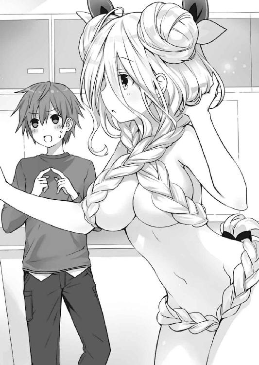
六喰は、士道を信頼して大切な髪を切る許しを与えてくれた。それなのに士道は、自らの過ちを誤魔化そうとし、あげく、他の精霊たちまで巻き込んでしまった。そんな耐えがたい自己嫌悪が、肺腑を満たしていったのである。
「............六喰、ごめん」
数秒のあと。士道は、大きく息を吐きながらそう言った。
「むん？ どうしたのじゃ。主様が気に入っているのならばむくは構わぬぞ？」
「違うんだ。聞いてくれ。俺は......おまえに不誠実なことをしちまった」
士道は観念するように床に膝を突き、言葉を零した。そんな士道を、六喰が不思議そうな目で見てくる。
「実は──」
と。
士道が全てを告白しようとしたところで。
「──士道！」
そんな声とともにリビングの扉がバン！ と開かれ、士道の妹、琴里が慌てた様子で現れた。
「......っ！ 琴里!?」
「大丈夫!? ああ、まだ霊力の逆流は確認されてないわね......って、あ」
そこで、琴里が言葉を止める。
一瞬、六喰のあまりにセクシーな装いと圧倒的な胸囲力に言葉を失ったのかと思ったが──違う。
琴里は、気づいてしまったのだ。──自分が勢いよく開けた扉が、そこにいた七罪を壁に叩き付けてしまっていたことに。
「............げふっ」
七罪がそんな声を発し、意識を失ってずるずると床に沈んでいく。
するとその瞬間、七罪の意識によって保たれていた〈贋造魔女〉の効果が切れたのか、六喰の身体に巻き付けられていた髪製の水着が淡く輝き、光の粒子となって消えてしまった。
そして残ったのは──先ほどまでとはまるで印象の違うショートヘアに変貌した、六喰の姿だった。
「な......こ、これは......なんじゃぁぁぁっ!?」
混乱に満ちた六喰の声が、五河家のリビングに響き渡った。
◇
「......なるほどのう」
それから、およそ三〇分後。
随分とサッパリしてしまった六喰が、細い息を吐きながらそう言った。
六喰には既に、何が起こったかの説明を済ませていた。一応、霊力の逆流は起こっていないようだったが、複雑そうな顔をしながら短い髪を指で弄っている。
「すまん......！ 全部俺のせいだ。俺が間違ってお団子を切っちまったから......！」
士道はテーブルに手を突くと、頭を深く下げながら謝った。するとそれに続くように、居並んだ精霊たちもまた、謝罪をしていく。
「違う！ シドーにぶつかってしまった私のせいだ！ 怒るなら私を怒ってくれ！」
「や......もう片方のお団子落としちゃったの私だし......」
「反省。三つ編みを切ってしまったのは夕弦です」
「いやー、でも髪水着はヤバかったねムックちん」
「うふふぅ、眼福でしたぁ」
「......二亜と美九はもう少し反省してもいいと思うんだけど」
額に湿布を貼った七罪が、半眼で突っ込む。それを見てか、琴里が小さく息を吐いた。
「──と、そういうわけみたい。うちの兄が本当にごめんなさい。あなたの髪は全部回収してあるから、〈フラクシナス〉の医療用顕現装置で元通りにできるわ。そんなことでチャラにしてくれだなんて言えないけど......みんなも悪気があったわけじゃないっていうことだけはわかってあげてくれない？」
「......ふむん」
六喰は琴里の言葉に小さく声を発すると、ふっと口元を緩めた。
「よい。言ったであろう。もとより主様に預けた髪。たとえどんな髪型にされようとむくに異存はない」
「六喰......」
「じゃが、主様以外の手が入ったというのはいただけぬの。髪を元通りにしたなら、今度こそ主様の手で切ってくれるかの？」
六喰が、士道の目を見つめながら言ってくる。士道はそれを見つめ返すと、大きくうなずいた。
「ああ、もちろんだ」
「むん。ならばよい」
士道の答えに、六喰が満足そうに微笑む。その反応を見てか、精霊たちがほうと胸をなで下ろすのがわかった。
その気持ちは士道にも痛いほどにわかった。皆、自分が咎を受けないことに安堵したのではなく、髪を切られた六喰が傷ついていないかどうかが不安で仕方なかったのだ。
「............」
すると、そんな皆の様子を見ていた六喰が、短くなった髪を弄りながら姿見を一瞥し、再び士道に声をかけてきた。
「のう、主様」
「ん？ なんだ、六喰」
「写真を一枚、お願いしてもよいかの」
「え......？」
意外な言葉に士道がキョトンとすると、六喰は小さく肩をすくめながら続けてきた。
「むくはやはり主様に髪を切ってもらいたい。じゃが──まあ、皆が心血を注いでくれたこの姿を、なかったことにしてしまうのも、少し惜しいじゃろう？」
その言葉に、士道は、そして精霊たちは思わず目を丸くする。
それを見てか、六喰はほんのりと頰を染めながら微笑んだ。
あとがき
お久しぶりです黄昏よりも昏き公司です。血の流れよりは紅くない。
『デート・ア・ライブ アンコール６』をお届けいたしました。いかがでしたでしょうか。お気に召したなら幸いです。
短編集『アンコール』も、はや６巻目。我らが妖怪誘宵美九が再び表紙に戻って参りました！ Ｋａｗａｉｉ!! ちらりと覗くおへそとおみ足がセクシーです。ラフ段階ではスカート案もあったのですが、僕がビビッと一目惚れしてこちらのバージョンにしてもらいました。よくやったあのときの僕。
さて、では短編集恒例の各話解説に入ろうと思います。微妙なネタバレを含む可能性がありますので、本編未読の方はご注意くださいませ。
○精霊ニューイヤー
新年あけましておめでとうございます。いやこの本の発売日は一二月なんですけどね。
というわけで晴れ着姿のみんながお正月の遊びを満喫するお話です。お正月の遊びって何があったかなあといろいろ考えてみたのですが、結局オリジナルのカードすごろくに。独楽で対戦とか羽根突き対決なんかも面白そうではあったのですが、みんなでわいわいできる方がいいかなあと。せっかく二亜が参戦したので、ちょっと王様ゲームっぽいのをもう一度やりたかったというのも少しあります。
何が起こるかわからない闇鍋感があるのでわりと面白いんじゃないかと思います。皆さんも機会があったら是非試してみてください。必要なのはプレイヤーの節度と良心。
○二亜ギャルゲー
挿絵のエロ下着が眩しい二亜短編。ちょっと前まで死にかけていたとは思えない快復っぷりはさすがとしか言えません。本条先生原稿まだですか。
タイトルの通り、二亜がギャルゲーをする話です。果たしてギャルゲーだったのか。なんだこの難易度。僕は基本的にヌルゲーマーなので絶対にクリアできそうにありません。
ちなみにヒロインの丸那ありすちゃんは、黒に近い灰色の髪をした女の子のイメージです。ツンツンしていて気が強いですが一度デレたらチョロいです。ＣＶは三森すずこさん。あくまでイメージです。イメージ。
○精霊アニメーション
アニメですよアニメ！ 二亜の漫画がアニメ化！ してみんなでアフレコ見学にいく話。また二亜か。
実際、今回の短編集は、二亜が起点になっているお話が多い気がします。ギャルゲーは言わずもがな、ニューイヤーのすごろくも二亜発案ですし、後述の二編もキーマンとして登場します。そもそも能動的であり、アニメやゲームなどのオタク要素に精通しているのでお話の起点にしやすいんですよね。
そしてまさかの才能を見せた七罪。実際あの観察力と真似っこ技術、演技力は特筆すべき技能だと思います。しかし本人は頑なに認めない。七罪！ すごいよ七罪！ さすがだよ！ 超格好いい！ ナツーミ！ ナツーミ！ って詰め寄って七罪を困らせたい。
○精霊オンライン
今度の舞台はオンラインゲームだ！ というわけで、三陣営に分かれてゲーム世界で冒険をすることに。
こういう、キャラに職業や設定を当てはめていく話は結構好きだったりします。実際キャラメイクのあるゲームは、開始までやたら時間がかかります。それっぽいパーツがあれば自作品のキャラを再現することも多いですが、その場でオリジナルキャラを作るのも楽しいですよね。
ちなみに今回のお気に入りはダークパラディン【幻夜】。たぶん闇黒力を剣にまとわせて闇黒光龍閃とか撃ちます。つよい。
○精霊オフライン
そして後編の精霊オフライン。プレイヤーキラー【ファティマ】の正体が明らかに。この名前、14巻で出てきた二亜の漫画の主人公と同じなので、勘のいい方は気づいていたかもしれません。
しかし週刊連載中にオンラインゲームのキャラレベルをカンストさせたり、サブアカウントのキャラも高レベルに達してたりと、本当に仕事してたんですかね本条先生。
作中に出てくるゲーム、ポラリス・オンラインは、普通のＭＭＯＲＰＧよりもかなり自由度が高めに設定されております。フィールド構造はいわゆるブロックメイクＲＰＧ──ぶっちゃけマインクラフトっぽくなっています。あのシステムでできたフィールドを共有すると、各プレイヤーが好き勝手できすぎてしまうので難しいでしょうが、あれくらい自由度の高いゲームがあったらちょっと遊んでみたいです。
○六喰ヘアー
今回の書き下ろしは、15巻で封印されたばかりの精霊・六喰のお話です。時系列的には15巻の終章前。タイトルの通り六喰の長い髪を切ります。
本編中ではいろいろと事件が起こってしまいましたが、実際六喰はどんな髪型が似合うでしょうか。個人的にはわりともっさもっさしたボリューミーな髪型も嫌いではないので、あまり短くしてしまうのも勿体ない気がしますが、いろいろ考えてみるとちょっと楽しいです。
髪型というのはぱっと見のシルエットやイメージカラーにも関わってくるので、キャラクターの外見の中でも重要な構成要素です。特に『デート』の場合は女の子キャラが多いので、被らないようにするのが大変だったりします。つなこさん毎回ご苦労おかけしています。
と、各話解説を終えたところで告知を二つ。
まず一つ目！ 二〇一七年三月に、つなこさんの画集が発売されます！ わー！ ぱちぱち！
今まで本編やドラゴンマガジン、その他各種媒体に載っていた『デート』イラストがたくさん収録された豪華な一冊ですので、どうぞお楽しみに！
そして二つ目！ なんと『デート・ア・ライブ』のスピンオフ小説が発売されます！ ひゃっほー！
書いてくださるのはあの東出祐一郎さんです！ これは血腥い『デート』になりそうですわね！ きひひひひ！
さて今回も、様々な方の尽力によってこの本は作られました。
イラストレーターのつなこさん、今回も素敵なイラストをありがとうございます。毎回精霊たちの私服が可愛くて最高です。
担当氏、デザイナーの草野さん、編集部、営業の方々、出版、流通、小売、そしてこの本を手にとってくださったあなたに、心よりの感謝を。
では、また次の本でお会いできることを祈っております。
二〇一六年一〇月 橘 公司
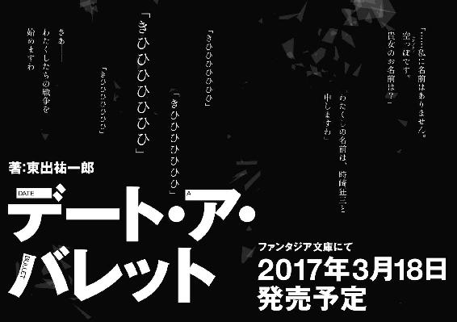
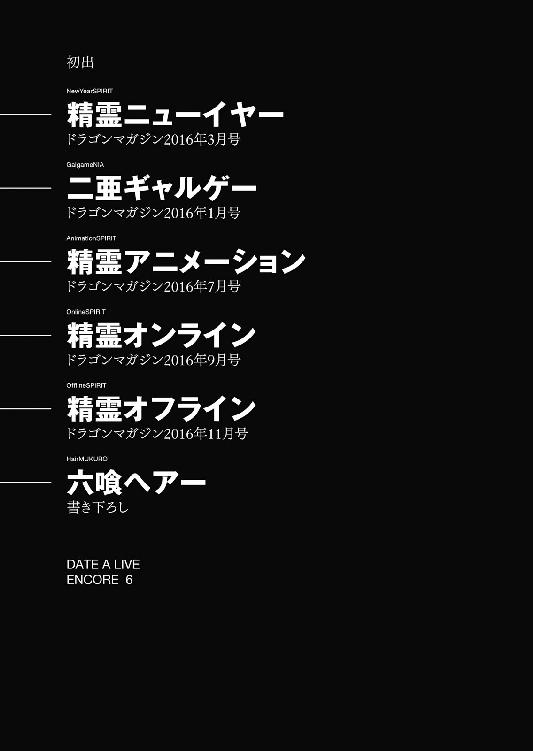
橘公司
●たちばなこうし
東京都在住。第20回ファンタジア長編小説大賞準入選作『蒼穹のカルマ』でデビュー。ＶＲが話題ですね。僕も体験してみましたが、空間をぐるりと見渡すことができるので、周りを見ているだけでも楽しいです。そこで提案、デート・ア・ライブＶＲ。ＶＲ空間でデートできます。いろんな角度から精霊を見られます。後ろを向くと常に折紙がいます。
カバー・口絵・本文イラスト／つなこ
カバーデザイン／草野剛
デート・ア・ライブ アンコール６
橘公司
平成28年12月20日 発行
(C)Koushi Tachibana, Tsunako 2016
本電子書籍は下記にもとづいて制作しました
富士見ファンタジア文庫『デート・ア・ライブ アンコール６』
平成28年12月20日初版発行
発行者 三坂泰二
発 行 株式会社ＫＡＤＯＫＡＷＡ
〒102-8177 東京都千代田区富士見2-13-3
電話 0570-002-301（カスタマーサポート・ナビダイヤル）
受付時間 9:00～17:00（土日 祝日 年末年始を除く）
http://www.kadokawa.co.jp/